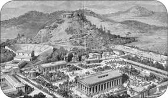
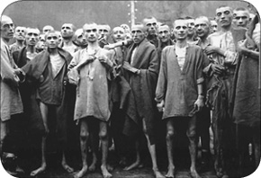

12 / İSPANYOLLARIN FATİHİ, AZTEKLERİN KASABI
İspanyolların “Fatih” unvanını verdiği Hernan Cortes, Orta Amerika’nın Hıristiyanlaşmasında önemli roller oynayan değerli bir kaşif olarak tanınmıştır. Fakat aynı zamanda Aztek medeniyetinin ortadan kaldırılması ve bu esnada başvurduğu acımasız yöntemler nedeniyle “Aztek kasabı” olarak da anıldı. İspanya, XVI. yüzyıl boyunca Amerika’nın yerli halklarının kan ve gözyaşları üzerine bina edilen büyük bir imparatorluk kurmuş, bu imparatorluk Osmanlı ilerleyişi karşısında Avrupa’nın umudu haline gelmişti.
Dünya üzerinde bazı devletler tarihin belli dönemlerinde derin izler bırakmışlardır. İlkçağ’da Romalılar, XIII. yüzyılda Moğollar, XV. ve XVI. yüzyılda da Osmanlılarla İspanyollar bu devletler arasında gösterilebilir. Osmanlılar, 1521’de tahta çıkan Kanuni döneminde altın çağını yaşarken, rakipsizliklerini gölgeleyen tek devlet Avrupa’nın diğer ucundaki İspanya’ydı. 1469’a gelindiğinde İber Yarımadası’nın iki güçlü krallığı Kastilya ve Aragon’un varisleri Kral Ferdinand ile Kraliçe Isabella evlendi. 1479’da da Aragon kralı ve Ferdinand’ın babası olan Kral Filip’in ölümü ile iki krallık resmen birleşti. Bu evlilik, İspanyol altın çağı olarak adlandırılan ve yaklaşık yüz elli yıl süren İspanyol egemenliğinin de başlangıcı kabul edildi. Bu dönemde İspanyollar; Şarlken, II. Filip gibi büyük hükümdarlar; “Yenilmez Armada” adı verilen güçlü bir donanma; Kristof Kolomb, Macellan, Amerigo Vespucci, Andrea Doria, Del Kano gibi yetenekli kaptanlar; Cortes, Pizarro, Balboa gibi Amerika kıtasını Katolikleştiren fatihlerle çalışma fırsatı buldular. Yalnız, onların fatihleri Orta ve Güney Amerika halklarının da celladı olacaktı.
İspanya kraliçesi Isabella ve Kral Ferdinand
1492 tarihi İspanya açısından bir dönüm noktasıdır. Çünkü bu tarihte yarımadanın güneyinde yer alan ve Müslümanların son kalesi durumundaki Gırnata ele geçirildi. Gırnata’nın alınmasından sonra dindarlıklarından dolayı “Katolik” unvanı verilen Kral Ferdinand ve Kraliçe Isabella, burada yaşayan Müslüman ve Yahudilere üç şeyden birini tercih etmelerini buyurdular. Ya İspanya’da kendi dinlerinde kalacak ve öldürülecekler, ya ülke topraklarını terk edecekler ya da din değiştireceklerdi. Pekçok Müslüman ve Yahudi göç etmeyi seçti. Göçlerin önemli bir kısmı da o dönemde dinî özgürlüklerin Avrupa’daki diğer ülkelere göre çok daha özgürce yaşandığı Osmanlı İmparatorluğu’na oldu. Bu göçler sonrasında pek çok Yahudi; Selanik, İstanbul, İzmir, Edirne ve Bursa gibi önemli ticaret merkezlerine yerleştirildi. Zamanın padişahı II. Bayezid’in bu göçten ziyadesiyle memnun kaldığı biliniyor. Göç sonrasında gelen Yahudiler, beraberlerinde ticari bağlantılarını, matbaalarını, tıp bilgilerini ve Avrupa’da gelişmekte olan son savaş teknolojisini de getirmişlerdi. Göç edenler arasında Osmanlı’nın yükseliş döneminin önde gelen simalarından Kanuni’nin hekimi Musa bin Hamun’u ve II. Selim’in yakın adamlarından Yosef Nasi’yi görmekteyiz. Öte yandan İspanya’dan göç eden pek çok Müslüman da Osmanlıların Kuzey Afrika’daki topraklarıyla İstanbul’daki Galata semtine yerleştirildi. Hatta bu semtte bulunan ve Dominiken rahipleri tarafından inşa edilen meşhur San Domeniko Kilisesi İstanbul’un fethi sonrasında camiye çevrilerek Galata Camii adını almış, ancak bölgeye Endülüslü Müslümanların yerleştirilmesinden dolayı zaman içinde “Arap Camii” olarak anılagelmişti. İspanya’da kalan Müslüman ve Yahudilerin bir kısmı ise artan baskılar karşısında Katolikliğe geçmeyi seçti. Fakat din değiştirmeye zorlanan bu insanlar, gizliden gizliye kendi dinlerini de devam ettirdiler. Bunların dışında kalanlar ise Engizisyon Mahkemeleri’nin kararı ile ağır işkencelere uğrayarak öldürüldüler. Böylelikle koyu Katolik ve İsa aşığı İspanya’nın temelleri atıldı.
İspanya, aynı tarihlerde kendine bir de yeni misyon benimsedi. “İsa’nın hizmetkarı” sıfatını kullanan İspanyol kralları, kendilerince hak din olan Hıristiyanlığın Katolik mezhebini farklı kıtalara ulaştırma görevine soyundular. Asıl amaç ise farklıydı. Teknolojik yönden geri kalan bu bölgeler ve bilhassa Amerika kıtası, önemli medeniyetlere ev sahipliği yapmakta ve değerli madenlere sahip olmak gibi büyük bir kusuru barındırmaktaydı.
İMPARATORLARI YALVARTAN PAPALAR
Ortaçağ Avrupası coğrafya bilgisi açısından içler acısı bir durumdaydı. Eskiçağ’daki coğrafya bilgisinin dahi çok uzağında kalınmıştı. Antik Yunan’ın düşünsel hayatında önemli roller oynayan Pitagorasçılar, daha milattan önceki tarihlerde dünyanın yuvarlak olması gerektiğini birtakım fizik yasalarından hareketle savunmuşlardı. Aristo da yeryüzünün Ay’a düşen gölgesinden ve ufukta beliren geminin önce yelkeninin, sonra da gövdesinin görünmesinden hareketle dünyanın yuvarlak olması gerektiği fikrini savunmuştu. Fakat IV. yüzyılda meydana gelen Kavimler Göçü, Avrupa’da o vakte kadar görülmedik ölçüde büyük bir tahribat meydana getirdi. Roma İmparatorluğu bu kavimler dalgasının etkisiyle daha fazla dayanamayarak önce ikiye ayrıldı ve ardından da batı kısmı tarihe karıştı. Bu olay aynı zamanda Akdeniz’deki “Roma barışı”nın da sonu demekti. Batı Roma’nın yıkılması ile Avrupa’nın farklı bölgelerine yerleşen kavimler, yavaş yavaş “Romalıların dini” olarak prestij kazanan Hıristiyanlığı benimsemeye başladılar. Bu dönemde ayakta kalma becerisini gösterebilen tek köklü kurum durumundaki kilise, yetenekli ve ihtiraslı papaların elinde kilit bir konuma yükseldi. Alman imparatoru IV. Heinrich’in karşı karşıya kaldığı durum, papaların ulaştığı gücün en somut örneklerindendir. Papa ile kendisi arasındaki bir güç çekişmesinden sonra aforoz edilen Alman imparatoru, böylelikle meşru hükümranlık haklarını yitirmiş ve ülkesindeki prenslere söz geçiremez hale gelmişti. Bu kargaşa ortamında IV. Heinrich, tek çare olarak kendisine çuvaldan bir elbise yapmış ve yalınayak bir şekilde İtalya’da bulunan Papa VII. Gregor’un karşısına çıkarak af dilemişti. İmparatoru günlerce kapısında yalvartan Papa, sonunda aforozu kaldırmış ve böylelikle Heinrich işlerinin başına dönebilmişti.
Hayatın her safhasına el atan kilise, ekonomiden bilime, eğitimden toplumsal yaşamın sınırlarına kadar her gelişmede baskın rol oynayarak hakimiyet sahasını genişletti. Antik Çağ düşünürlerinin dünya hakkındaki görüşleri ve coğrafya bilgileri bir kenara itildi. Kilise, esasları da kendisi tarafından belirlenen öğretilerini kitlelere benimsetme yoluna gitti. Bu tutumdan doğal olarak coğrafya da nasibini aldı.
Bilinmeyen topraklarda yaşayan insanlar
Skolastik denilen kilise öğretisine dayalı düşünce aynı zamanda değişik bilim dallarını da kontrol altına aldı. Coğrafya bilgisi İncil’deki bazı hükümlere uyarlanmaya çalışıldı. Örneğin, kilise öğretisine göre Hz. İsa’nın doğum yeri olan Kudüs, dümdüz olduğu kabul edilen dünyanın tam merkezinde varsayılıyordu. Zira İncil’de şöyle bir ibare yer almaktaydı: “İşte Kudüs şehri ve burasını yeryüzündeki bütün ülkelerin ve ulusların ortasına yerleştirdim.” O halde dünyanın yuvarlak olduğunu iddia etmek, düpedüz Tanrı kelamı olan İncil’le çelişmek anlamına gelmekteydi. Yine bu öğretiye göre cennet de düz olan dünyanın doğu tarafındaydı. Açık denizlere doğru açılmak, Tanrı’nın sırlarını öğrenmeye yönelik bir küfürdü. Hz. Adem de muhtemelen bu tutumundan dolayı cennetten kovulmuştu. Bu dönemde yaygın olan bir diğer görüşe göre de açık denizlerde gemicileri bekleyen canavarlar ve dünya düz olduğundan bu yolun sonunda boşluğa doğru akan çağlayanlar vardı. Halbuki kilisenin bu iddiaları ortaya atmasından çok önce Araplar, Hintliler, Çinliler ve Vikingler okyanuslara açılmış fakat amaçları sadece ticaret yapmak veya bölgeyi yağmalamak olduğu için anavatana bağlı sistemli koloniler kurma veya sömürge elde etme yoluna gitmemişlerdi.
BATI’YI UYKUSUNDAN MÜSLÜMANLAR UYANDIRDI
İşin ilginç yanı, Avrupa’yı içine düştüğü bu cehalet batağından uyandıran, kiliseyi tehdit eden en büyük tehlike durumundaki İslam diniydi. Papalar nüfuzlarını genişletmek, Avrupa kıtasının içinde gözlemlenen açlık ve sefalet nedeniyle her geçen gün artan huzursuzluğu en aza indirgemek amacıyla, ellerindeki büyük gücü doğudaki Müslümanlar üzerine yönlendirdiler. Fakat bunun, ilerleyen yıllarda kendi otoriteleri üzerinde yaratacağı tahribat hakkında henüz hiçbir fikirleri yoktu. Meydana gelen Haçlı seferleri ve bu seferler sırasında oluşan ticari ve kültürel etkileşim, Ptolemeios veya diğer adıyla Batlamyus gibi Yunan coğrafyacıların yanı sıra Yakubi, Mesudi, İbn Havkal gibi büyük İslam seyyahlarının eserleriyle Batı’yı tanıştırdı.
Ortaçağ’ın en geniş ve kapsamlı seferlerinden biri olan Haçlı Seferleri sonunda uğranılan düş kırıklıkları, öncelikle Papalığın nüfuzunu sarstı. Zira Papa’nın çağrısı ve mutlak zafer vaadi ile başlayan seferler, tam anlamıyla bir hezimetle sonuçlanmıştı. Bununla birlikte Batı dünyası özellikle kültürel ve ekonomik anlamda çok şey kazanmıştı. Yukarıda bir kısmını saydığımız gelişmelerin ve Müslümanlardan öğrenilen pusulanın da etkisiyle Portekizlilerin başını çektiği Hindistan Yolu’nu bulma amacı güden deniz seferleri başlamış oldu.
İspanya hizmetindeki ünlü İtalyan denizci Kristof Kolomb’un Amerika kıtasına yaptığı seferler ve bu seferleri takip eden günlerde ağızdan ağıza yayılan “el-Dorado” yani “Altın Kent” efsanesi, maceracıların iştahını fazlasıyla kabartmaktaydı. Avrupa’da keşif faaliyetlerine ilk başlayan Portekizliler oldu. İspanya, bu sıralarda ülke içinde siyasi birliği sağlamaya çalışan pek çok küçük krallık arasındaki çatışmanın yanı sıra, Müslüman Gırnata Emirliği ile yaşanan mücadeleler nedeniyle de kaynamaktaydı. 1492’de Müslümanların son kalesi olan Gırnata’nın düşmesiyle, onlar da bakışlarını bu efsanelere ve doğunun zenginliklerine çevirmekte gecikmediler.
Kristof Kolomb
Portekizliler daha XV. yüzyılın ortalarında Afrika’nın batı sahillerini tanımaya yönelik küçük deniz seferleri başlatmışlardı. 1415’te Portekiz’in Fas ve çevresindeki donanmasının yönetimini devralan Prens Henri tam bir deniz aşığıydı. Kendisinin de katıldığı iki seferin dışında, Batı Afrika kıyılarına çeşitli keşif seferleri düzenletti. Onun açtığı yoldan yürüyen bir diğer Portekizli Batrelemeo Diaz, Afrika’nın güneyindeki Ümit Burnu’na ulaşan ilk denizci oldu. Diaz, bunu belgelemek için karaya çıkarak büyük bir haç dikti ve bu toprakları Portekiz kralı adına fethedilen topraklar olarak ilan etti. Bu sembolik işlem, aslında daha en başından sömürgecilik ve misyonerlik faaliyetlerinin el ele yürüdüğünün de bir nevi kanıtıydı. Diaz, bu burna geldiğinde müthiş bir fırtınaya tutulmuş ve adamlarının korkuya kapılması üzerine ulaştığı bu noktaya “Fırtınalar Burnu” adını vererek Portekiz’e geri dönmüştü.
İLK KAŞİFLERİN YÖNTEMLERİ ACIMASIZDI
Diaz’ı takip eden bir diğer Portekizli Vasko dö Gama, onun yarım bıraktığı işi bitirerek Fırtınalar Burnu’nu aşmayı ve muson rüzgarlarından da yararlanarak Hindistan’a ulaşmayı başardı. Hatta Fırtınalar Burnu’nu aşarken de adamlarının maneviyatını arttırmak için bu yerin adını “Ümit Burnu” olarak değiştirdi. 1498’de Hindistan’a ulaşan Portekizliler, burada bir ticaret kolonisi kurdular. Fakat onların buradaki varlığından rahatsız olan Hintli Müslümanlar, bu koloniyi bir süre sonra ortadan kaldırdılar. Bu olayın ardından 1502’de Hindistan’ın Kalküta Limanı’na gelen dö Gama, şehri bombardımana tutarak yerle bir etti. Böylelikle kendisi, Portekiz’in ticari çıkarları ile oynamanın tehlikesini yerli halka göstereceğini düşünüyordu.
Vasko dö Gama
Keşiflere sonradan dahil olan İspanyollar ise yüzlerini daha çok Portekizliler gibi doğuya değil de batıya döndüler. İspanya kralı Katolik Ferdinand ve eşi kraliçe Isabella’nın parasal yardımda bulundukları Kristof Kolomb, Hindistan’a ulaşmak amacıyla sürekli batıya doğru gitme yolunu tutmuş ve 1492’de Hindistan yerine Amerika kıtasına ulaşmıştı. Kolomb’un bu bölgeye yaptığı değişik yolculukların dışında, onu takip eden yeni fatihlerin beraberlerinde getirdikleri pek çok değerli madenin yanı sıra çikolata, patates, ananas, mısır, fındık, vanilya, fasulye gibi maddeler de İspanyolların iştahını kabarttı. Bizzat Kolomb, denizcilerinin açgözlülüğü nedeniyle yerlilerle çatışmak zorunda kaldı. Adamlarının dizginlenemeyen hırsını kontrol altına almak için onlara sert cezalar vermek zorunda kaldı. Disiplinsiz davranarak arkadaşlarının hayatını tehlikeye atan denizcilerin burun ve kulaklarının kesilmesini emretti.
İspanyol askerlerin boğazından erimiş altın döken Aztekler
Kolomb’tan sonra bölgeyi keşfetmek ve sömürmek amacıyla pek çok İspanyol, bu yeni kıtaya ayak bastı. Bilboa, Cortes, Pissaro gibi fatihler yanlarındaki adamlarının ve hizmetinde bulundukları İspanya kralının bitmek bilmeyen altın hırsları nedeniyle, yerli halkla sık sık çatışmak durumunda kaldılar. Bu kişiler, kendileriyle birlikte Ortaçağ Avrupası’nın işkence yöntemlerini de beraberlerinde getirmişlerdi. Diri diri yakmak, kazığa geçirmek, köpeklere parçalatmak, kızgın yağla haşlamak veya kamçılayarak öldürmek bu yöntemlerden sadece bazılarıydı. Yerliler de zaman içinde buna aynı şiddetle tepki verdiler. Mesela Aztekler, altın için huzurlarını kaçıran İspanyollardan yakaladıklarını boğazlarından sıvı halde kızgın altın dökmek suretiyle cezalandırıyorlardı.
Azteklere yapılan işkenceler
Cortes de bu maceraya atılan serüvencilerden biriydi. 1485’te İspanya’da doğan Cortes’in hayatı oldukça fırtınalı geçmişti. İspanya’nın güzide üniversitelerinden biri olan Salamanca’da eğitim görmüş, bu yıllarda mücadeleci ve kavgacı kişiliği ile sivrilmişti. Hatta eğitimine devam ettiği yıllarda karıştığı bir kavgada ciddi şekilde yaralanmıştı. 20’li yaşlarda içindeki macera dürtüsünü bastırmak amacıyla Amerika kıtasının yolunu tuttu. 35 yaşlarına geldiğinde ise “Yeni Dünya” olarak adlandırılan Amerika kıtasındaki en gözde komutanlardan biri durumundaydı.
Aztekler ve Cortes
SÜVARİLERİ TANRI SANDILAR
Cortes’in ilk ciddi sınavı 1519’da Mayalar üzerine yapılan bir askerî seferi kumanda etmek olmuştu. Orta Amerika’da parlak bir medeniyet kuran Mayaların üzerine 5 gemi ve yaklaşık 600 savaşçı ile giden Cortes, taktiksel zekasının da yardımıyla kendisinden sayıca kat kat üstün Maya ordusunu ağır bir yenilgiye uğrattı. Aslında bu zaferde en önemli rolü savaşçılardan çok atlar oynamıştı. Ömürlerinde hiç at görmemiş olan Maya savaşçıları, süvarileri yarı insan yarı hayvan tanrısal canlılar sanmış ve dehşete kapılmışlardı. Mayalarla yapılan savaşta Cortes, adamlarının bir kısmını cepheden rakibine saldırtırken, süvarileriyle de düşmanının arkasına mevzilenmişti. Uygun bir anda ortaya çıkarak ateşli silahların ve atların yarattığı dehşetin de etkisiyle büyük bir zafer kazandı. Meydan, üst üste yığılmış cesetlerle dolmuştu. Ölü yerlilerin vücudundaki yağlar, İspanyol askerleri ve atlarının yaralarının üzerine sürüldü. Çünkü bu yağların iyileştirici bir etkisinin olduğu düşünülüyordu. Cortes, bu savaş sonunda Mayalardan yüklüce bir ganimet elde ettikten sonra, kuzeye yönelerek asıl hedefi olan Aztek ülkesinin yolunu tuttu.
Aztek başkentinin görünümü
Yolda Dona Marina adını verdiği Aztek soylusu bir kadını da cariye olarak alıkoydu. Bu kadın ileride ona bir oğul vereceği gibi, bazı yerli topluluklarının Cortes’in saflarına katılmasında da etkili oldu. Meksika’ya gelen Cortes, İspanya kralı tarafından bölgeye “Yeni İspanya’nın valisi” sıfatıyla yönetici tayin edildi. Bu arada Azteklerin son kralı Montezuma da gelişmeleri yakından takip ediyordu. Montezuma, Aztek efsanelerine olan düşkünlüğü ile tanınıyordu. Azteklerin dinî inancına göre iki büyük tanrıdan biri olan Kuetzalkal, bir gün batı yönüne doğru giderek Aztek toplumundan ayrılmıştı. Bu tanrı, dünyanın sonlarına doğru beyaz bir adam kılığında geri dönecek ve Azteklerin yönetimini üstlenecekti. Kral Montezuma, kıyı bölgelerinde binlerce yerli ile savaşarak Orta Meksika’daki Aztek topraklarına kadar ilerleyen bu beyaz tenli adamı Tanrı Kuetzalkal sandı. Bundan dolayı bugün Meksika’nın başkenti Mexico City’nin bulunduğu yerdeki Aztek başkentine doğru ilerleyen Cortes’e çeşitli armağanlar yolladı. Yolladığı armağanlar arasında Azteklerin büyük tanrısı Güneş’i temsil eden araba tekerleği iriliğinde yuvarlak ve som altından bir plaka ile Ay’ı temsil eden bir gümüş tepsi de vardı. Montezuma, bu hediyelerle beraber Cortes’in daha ileri gitmemesini rica eden bir de mektup yollamıştı. Fakat bunun için çok kötü bir yöntem kullanmış ve sadece Cortes’in iştahını kabartan hediyeler gönderme yoluna gitmişti.
AZTEKLERİN BELEDİYE İŞLERİ MÜKEMMELDİ
Cortes, yanına aldığı topu topu 15 atlı ve 400 yaya İspanyol askeri ile Aztek başkentine doğru yürüyüşüne devam etti. Yolda Azteklerin düşmanı olan kabilelerden de İspanyollara katılımlar oldu. Savaşçı bir topluluk olan Aztekler, Tanrılarını memnun etmek amacıyla ele geçirdikleri savaş esirlerini canlı canlı kurban ettiklerinden, bu kabilelerin İspanyollara katılması gayet normal görünüyor. İspanyollar, Aztek başkenti önlerine geldiklerinde Kral Montezuma, efsanede yer alan başka benzerlikleri de fark etti. Cortes, tıpkı efsanelerdeki gibi sakallıydı ve Azteklerin kutsal sembolü olan Haç’ı elinde taşıyordu. Şüpheye hiç yer yoktu. O, Tanrı Kuetzalkal’dı. Tanrı’nın öfkesini çekmek istemeyen kral, Aztek topraklarına giren Cortes’i karşılamaları amacıyla yeğenini ve sekiz soyluyu görevlendirdi. Bunların rehberliğinde Aztek ülkesinde yol almaya başlayan İspanyollar, gördüklerine bir türlü inanamıyorlardı. Avrupa’nın çok uzağında kalan bu topraklarda Aztekler, su kanalları açmış, köprüler ve barajlar yapmışlardı. Belediye işleri o denli mükemmeldi ki sefere katılan bir İspanyol anılarında “Sokaklar o kadar temiz ki, elleriniz normalde ne kadar kirleniyorsa ayaklarınız da ancak o kadar kirleniyor” demişti.
Azteklerin insan kurbanı töreni
Bu şekilde İspanyollar başkente kadar ilerledi. Montezuma, Cortes’i şehir kapısında karşıladı ve o gece onuruna büyük bir ziyafet verdi. Ardından da şehri gezdirdi. Başkent Tenoktitlan, yüz binlerce nüfusa sahip kalabalık bir şehirdi. Fakat Cortes’in ilgisini en çok Tanrılara kurban olarak sunulan savaş esirlerinin öldürüldüğü piramit şeklindeki bir anıtın en tepesindeki tören çekmişti. Kurban edilecek kişi piramidin tepesine beş rahip eşliğinde çıkarılıyordu. Dört rahip kurbanı sırt üstü sunak taşına yatırırken, beşincisi eline aldığı sivri bir obsidyen taşı yardımıyla kurbanın gövdesini kesiyor ve atmakta olan kalbini koparıyordu. Daha sonra bu kalp yakılıyor, ceset ise aşağıda özel bölümde bekleyen vahşi hayvanlar tarafından parçalanmak üzere piramitten yuvarlanıyordu. Bu kurban yöntemi, gerektiğinde en insanlık dışı yöntemleri uygulamaktan çekinmeyen İspanyolların bile kanını dondurmuştu. Hele savaş esiri olmayan özgür Aztek halkından bazı kimselerin de gönüllü olarak kurban edilmek istediklerini duyunca, İspanyolların şaşkınlığı bir kat daha artmıştı. İspanyollar, ilerleyen yıllarda Güney Amerika’da yaptıkları katliamı haklı göstermek için amaçlarının, Tanrılarına insan kurban edecek kadar vahşi olan bu uygarlığa medeniyet götürmek olduğunu söyleyeceklerdi. Halbuki bu dinî ritüel ve ateşli silah teknolojisi dışında Aztek medeniyetinin İspanyollar’dan aşağı kalır pek bir yanı yoktu.
Cortes ve Aztek kralının karşılaşması
İSPANYOLLAR YAVUZ HIRSIZ MİSALİ
Cortes’in gözü daha en baştan Azteklerin büyük servetini ele geçirmekteydi. Aztek ülkesinde büyük saygı görmüş ama henüz hazinelere ulaşamamıştı. Bir haftalık misafirliğin ardından durumu gözlemleyen Cortes, harekete geçmeye karar verdi. Bu amaçla Kral Montezuma’yı esir almayı planladı. Fakat Montezuma’nın sarayına gittiğinde, gelişmeleri kaderin tecellisi olarak gören kralın hiç direnmeden teslim olduğunu görerek şaşırdı. Ne askerler ne de din adamları hiçbir direniş göstermemiş, gözyaşları içinde ve çaresiz bir şekilde krallarını İspanyollara teslim etmişlerdi. Ardından da ağzına kadar dolu Aztek hazinesi İspanyollara açılmıştı. Yine kral, kendisine bağlı yerlerden pek çok altın getirttiği gibi, altın ocaklarının İspanyollar tarafından yağmalanmasına da ses çıkarmadı. Kısa bir süre sonra Cortes, İspanya’nın en namlı komutanı haline geldi. Artık Amerika kıtasına gelmek ve Cortes’in emrine girmek için çok sayıda İspanyol can atıyordu. Fakat Cortes’in bir türlü doymayan aç gözlülüğü ve adamlarının halka yaptığı kötü muamele, sonunda Aztekleri çileden çıkardı. Artık yeni gelenlerin Tanrı olamayacak kadar görgüsüz ve açgözlü olduklarına inanıyorlardı. Cortes, İspanyol varlığına karşı girişilen bu ayaklanmalar karşısında zekasını kullandı. Esir kral Montezuma’yı şehirdeki yüksek bir kuleye çıkardı. Montezuma, belki hâlâ Cortes’i Tanrı sandığından, belki de halkının zarar görmesini istemediğinden, İspanyollara direnilmemesi yolunda bir konuşma yaptı. Fakat daha konuşması bitmeden başına isabet eden bir taşla ağır yaralandı. Gururu incinen kral, Cortes’in tıbbi yardım teklifini geri çevirdi ve birkaç gün sonra da öldü. Cortes, isyanı kanla bastırdı. Daha önceki başarıları nedeniyle kendisine katılmak üzere gelen 40 süvari ve 500 yaya İspanyol askerine Azteklerle düşman olan yerli kabileleri de ekleyerek Aztekleri ağır bir yenilgiye uğrattı. Kaynaklar, bu mücadelede yaklaşık on binlerce Aztek’in öldürüldüğünden bahseder.
Cortes, savaş sırasında esir alınan 70 kadar İspanyol’un tapınakta canlı canlı kurban edilmiş olması nedeniyle Azteklerin başkenti Tenoktitlan’ı ortadan kaldırdı. Bu şehrin üzerinde bugün Meksika’nın başkenti Mexico City yükselmektedir. Böylece 1520 yılına gelindiğinde dünyanın en parlak medeniyetlerinden biri olan Azteklerden geriye neredeyse hiçbir şey kalmamıştı. 20 yıl kadar Meksika’daki görevini sürdüren Cortes, ilerleyen yıllarda gözden düştü ve İspanya’ya dönerek zengin ve anlatacak çok hikayesi olan bir ihtiyar olarak öldü.
AVRUPA YENİÇAĞ’A GİRERKEN AMERİKA ORTAÇAĞ’A GÖMÜLDÜ
Batılı tarihçiler, Amerika kıtasının keşfini ve Avrupalıların bu kıtaya yerleşmesini, Yeniçağ’ın habercisi olarak selamlar. Halbuki Yeniçağ’a giren sadece Batı’ydı. Amerika ise Ortaçağ’ın en karanlık günlerini yaşamaya mahkûm ediliyordu. İspanyollar, ele geçirdikleri topraklarda tıpkı Avrupa’da, Haçlı Seferleri öncesinde görülen tarzda feodal bir sistem kurmakta gecikmediler. Burada da senyör ve serf ilişkisi aynen uygulandı. Avrupa’daki senyörün yerini, belli bir bölgenin yerli halkını, hak din olan Hıristiyanlığa kazandırmak amacı güden İspanyol bir efendi alırken, serf olarak adlandırılan kısım da efendiye maden çıkarılmasında, hayvanlarının bakımında, tarlalarının ekiminde mecburi yardımda bulunmak zorunda kalan yerlilerdi. Üstelik bu hizmetin belli bir süresi de yoktu. Yani hizmet süresi o yerlinin oğlu, hatta torunları döneminde de devam edebilirdi. Çalışma koşulları son derece ağırdı. Avrupalı efendilerin bitmek bilmez para hırsı ve kötü çalışma şartları pek çok yerlinin ölüm tarlalarında can vermesine ve Güney Amerika’da ciddi bir nüfus kırılmasına yol açtı. Fakat İspanyol ve Portekizli efendiler bunun da yolunu bulmuşlardı. Yeni kıtanın istilası ile beraber vahşi bir köle ticareti de hız kazandı. Afrika sahillerinden toplanan ve sıcağa dayanıklı olan köleler Amerika’daki şeker kamışı ve pamuk tarlalarında, kakao ve kahve üretiminde kullanıldılar. Afrika’nın siyah ırkı ile Amerikan yerli halkının karışımından dayanıklı ve melez bir ırk teşkil edildi. Afrika zencileri sadece Amerika kıtasında çalıştırılmadı. Aynı zamanda 1492’de İspanya ve Portekiz’den kovulan Müslüman ve Yahudi iş gücü açığının kapatılmasında da kullanıldı.
Aztekler, Asya ve Avrupa’daki medeniyetlerden tamamen bağımsız, kendi özgün medeniyetlerini kuran bir Orta Amerika topluluğuydu. Aztek yerlileri, 1519’da İspanyol komutan Hernan Cortes topraklarına ayak basana kadar, dünyanın en güzel kentlerinden biri olarak tanımlanan başkent Tenoktitlan’a sahiplerdi. Meksika’ya kuzeyden gelen Aztekler, bugünkü Mexico City şehrinin bulunduğu alanda başkentlerini kurmuşlardı. Şehirlerinin çevresini derin hendekler ve surlarla koruma altına alan Aztekler, savaşçı özelliklerini tarımsal alandaki başarılarıyla da birleştirip Orta Amerika’nın en korkulan ve saygı duyulan gücü haline gelmişlerdi. Dünya tarımına kakao, kauçuk, mısır ve domates gibi çok değerli ürünleri armağan ettikleri gibi, yemekten sonra tatlı niyetine aldıkları çikolata, bugün gıda sanayisinin en önemli kollarından biri haline gelmiştir.
İspanyollar, Aztekleri ağır işlerde çalıştırırken
Aztekler, gökcisimlerine karşı da büyük bir ilgi duyuyorlardı. Bu ilginin bir sonucu olarak Güneş ve Ay onlara göre iki büyük Tanrı haline gelmişti. Bu Tanrıları daha binlercesi takip ediyordu. Aztek inancına göre en büyük Tanrı olan Güneş, karanlığın güçlerine yani Ay ve diğer yıldızlara karşı büyük bir mücadele veriyordu. Gece olunca karanlık güçler baskın oluyor ve güneş zayıf düşüyordu. Aztekler, güneşin ancak dünyadaki en kutsal madde yani insan kanı ile beslenebileceğine ve kötülüklere karşı ancak bu şekilde mücadelesine devam edebileceğine inanıyorlardı. Bunun için de ona sık sık insan kurban ediyorlardı. Doğal felaketler sırasında kurbanların sayısı da sıklığı da artıyordu. Çünkü bütün bu felaketler, güneşin zayıf düştüğünün bir işareti sayılıyordu. Kaynaklarda afetlerin ardından 20 bin kişilik büyük kurban törenlerinin düzenlendiğinden bahsedilir. Aztekler kurbanlarını ele geçirmek için zaman zaman komşu kabilelere de saldırıyorlardı. Bu da komşuları ile aralarının sürekli açık olmasına yol açıyordu. Fakat bazen köle olmayan Aztek vatandaşları da kendilerini güneşe kurban olarak sunuyorlardı. Bu, gerçekten insanın kendi rızası ile kolay kolay cesaret edemeyeceği bir işlemdi.
Gökyüzüne olan ilgileri, Azteklerin kendi takvimlerini geliştirmelerine de neden oldu. Aztekler de yılı 365 gün olarak hesaplamışlardı. Fakat yılı her biri 20 günden oluşan 18 aya bölmüşlerdi. Böylece 360 gün elde ediyorlardı. Buna bir de lüzumsuz günler dedikleri 5 günü eklediklerinde 365 rakamı ortaya çıkıyordu.
AZTEKLERİN İŞKENCE VE CİNSEL SAPKINLIK KONUSUNDA İSPANYOLLARDAN ÖĞRENECEK ÇOK ŞEYLERİ VARDI
İspanyolların, Amerika kıtasındaki yerli medeniyetleri acımasızca ortadan kaldırırken öne sürdükleri bahaneler arasında bu yerlilerin eşcinsel ilişkiyi normal kabul etmeleri ve başta Tanrılarına kurban verme veya esirlere uyguladıkları işkence yolları olmak üzere vahşice yöntemlere başvurmaları yer alıyordu. Fakat her iki konuda da Aztekler, İspanyollar kadar tecrübeli ve becerikli değillerdi. Ortaçağ İspanyası’nda belli suçlar, ağır işkence ile ölümü gerektirmekteydi. Eşcinsel ilişki veya dinsel sapkınlık, bu tür suçların en önde gelenleriydi. Bu tür işkenceler söz konusu olunca ilk akla gelenler ise yakma ve haşlama cezalarıydı. Nitekim Ortaçağ Avrupası’nda dinsel sapkınlıkla suçlanan Fransa’nın millî kahramanı Jean Dark ile Katolik Kilisesi’ne ağır eleştiriler yönelten Prag Üniversitesi hocalarından Jan Hus yakılarak öldürülmüşlerdi. Bu tarz işkenceli ölümler halk tarafından o kadar kanıksanmıştı ki, yakılma törenleri halkın en önemli eğlencelerinden birini teşkil etmekteydi. Fakat ilerleyen yıllarda Avrupa kıtasının medenileşmesi (!) ile yakılarak öldürülme cezasına çarptırılanlar önce boğulmaya, ardından yakılmaya başlandı. Bu tarz bir ceza Avrupalılarca çok daha medeni olarak görülüyordu.
Yakma sadece ölüm cezalarının infazında değil, bazen de İspanyol Engizisyon Mahkemesi tarafından suçun itirafı için kullanılıyordu. Çok yaygın olan bir uygulamaya göre suçu itiraf ettirilmek istenen kişi öncelikle bir tomruğa bağlanırdı. Bacakları ve ayakları soyulan kişinin tabanlarına da çabuk kızarması için domuz yağı sürülürdü. Yakma işlemi başladıktan kısa bir süre sonra mahkûm dayanılmaz acılarla bağırmaya başlar ve bir süre sonra da ateşle ayakların arasına bir odun veya metal parçası konularak işkence yapılan kişiden suçunu kabul etmesi istenirdi. Kurban suçunu itiraf edene veya bayılana, şuurunu yitirene kadar da işkence devam ederdi.
İspanyollar insanlık dışı işkence tekniklerini Aztekler üzerinde denemekte de hiçbir sakınca görmediler. İspanyolların ellerine düşen beş yerli şefe uyguladıkları ateşte kızartma cezasının ayrıntılarını görgü şahidi bir başka İspanyol şu cümlelerle anlatır: “Zavallı kurbanlar kısa bir süre sonra ateşin etkisiyle kavrulmaya ve dehşet verici bir şekilde haykırmaya başladılar. Bunun üzerine emri veren İspanyol kumandan öğle uykusu için girdiği çadırından çıkarak seslerden rahatsız olduğunu, şeflerin hemen boğularak öldürülmelerini emretti. İşkencenin zevkinden mahrum olmak istemeyen askerler ise değişik bir yöntem buldular. Şeflerin ağızlarına tıkaç sokarak zavallıları kızartmaya devam ettiler.”
Azteklerin, İspanyollar tarafından suçlandıkları ikinci büyük günahları ise eşcinsel ilişkiyi mübah görmeleriydi. Fakat yasak olmasına rağmen XVI. yüzyıl İspanyası’nda gerek eşcinsel ilişki gerekse de evlilik dışı ilişki oldukça yaygındı. Lerena’daki bir İspanyol yerel mahkemesinde görülen davaların yüzde 60’ı zina suçu üzerineydi. İşin ilginç yanı bu davalardan yüzde 15’i de din adamlarının davalarıydı. Katolik kilise kendini Tanrı yoluna adayan din adamlarına evliliği yasaklamıştı. Fakat pek çok din adamı bu yasağı umursamayarak metres tutuyor ya da fahişelerle beraber oluyordu. Katolik kilise evli çiftlerin cinsel hayatına da ciddi sınırlamalar getirdiği için bazı zenginler metres tutma yoluna gidiyor, böylece birtakım külfetlerden kurtuluyorlardı. Hatta bazı erkeklerin hem eşleri hem metresleri hem de arada bir görüştükleri fahişeleri vardı. Fahişelerin bir kısmı aylık olarak kiralanabiliyordu.
“Boynuzlu” tabiri de İspanyollardan kalma bir ifadedir. İspanyol köylerinde karısı tarafından aldatılan erkeğin evinin önüne bir geyik veya en azından bir keçi boynuzu çakılması adettendi. Boynuzlanan talihsiz koca yine köyün diğer erkekleri tarafından sopalarla kovalanır ve aşağılanırdı. Bütün bu yaşananlara rağmen bazı erkekler eşlerinin kendilerini aldatmasına çeşitli zorunluluklardan dolayı ses çıkaramazdı. Böylesi durumlarda kadın ya bir soylu veya bir din adamı ile beraber oluyor demekti. Yapılacak en akıllıca şey de bu güçlü adamlarla uğraşmamaktı. Zaten fakirlik, bu dönem köylüsünün belini bükmekteydi. Bu tür ilişkiler beraberinde para da getirdiği için durumun kabullenilmesi daha kolay oluyordu.

Aztek savaşçılar ve İspanyollar
Eşcinsellik ise özellikle kadın bulmanın zor olduğu askerî sınıf arasında yaygındı. Bilhassa İspanyol denizcilerin bu konuda kötü bir ünü vardı. Nitekim 1571’de Osmanlı donanması ile İnebahtı’da karşılaşacak olan İspanyol donanmasının kaptanı Don Juan, üvey ağabeyi Kral II. Filip’den ilginç bir emir almıştı. Filip, niyetlerinin Tanrı’ya hizmet olduğunu, bu nedenle Tanrı’nın düşmanları olan Türklerle savaşacak askerlerin ahlakına dikkat edilmesi gerektiğini bildiriyordu. Hemen ardından da donanma içinde eşcinsel ilişkilere asla izin verilmemesini emrediyordu. Filip’in emrine göre bu tür bir ilişkiye giren kim olursa olsun diğer denizcilere ibret olması açısından ilk kara parçasına çıkarılacak ve yakılarak öldürülecekti.
Tüm bunların yanında dönemin İspanyol görgü tanıkları Azteklerin son derece gelişmiş birtakım ahlaki meziyetlere sahip olduklarını da anlatmadan geçemezler. Misalen Azteklerde hırsızlık olayına hiç tesadüf edilmemekteydi. Bundan dolayı da insanlar evlerinin kapılarını kilitleme, hatta kapatma ihtiyacı hissetmiyorlardı. Evinde bulunmayan kişi, içeride kimsenin olmadığını belirtmek için eşiğe küçük bir değnek koyuyor ve rahatça gitmek istediği yere gidiyordu.
KAYNAKÇA
Cemal Bâli Akal, “Aztek İmparatorluğunun Son Günleri: Avrupa Amerika’yı Nasıl Ele Geçirdi?”, Popüler Tarih, sayı: 34, İstanbul 2003, s. 19-23.
Bartolemeo de las Casas, Yerlilerin Gözyaşları, (çev: Oktay Etiman), Ankara 2009.
Jared Diamond, Tüfek, Mikrop ve Çelik: İnsan Topluluklarının Yazgıları, (çev: Ülker İnce), Ankara 2006.
Joachim G. Leithauser, Ufkun Ötesindeki Dünyalar, (çev: Derin Türkömer), İstanbul 2002.
Nezih Uzel, “İspanyollar’ın Amerika yerlerine yaptıkları zulüm papazları bile isyan ettirdi”, Habertürk Tarih, sayı: 15, 5 Eylül 2010, s. 4-7.
Peter Wahl, Niçin Aztekler Avrupa’yı Keşfetmedi: Avrupa ve Üçüncü Dünya, (çev: Levent Kafadar), İstanbul 1993.
13 / YİRMİSEKİZ MEHMED ÇELEBİ VE İLGİNÇ FRANSA İZLENİMLERİ
Yirmisekiz Mehmed Çelebi hepimizin malumu olduğu üzere Avrupa’ya gönderilen ilk elçilerimizden olup, sefirlik görevini o denli titizlikle yerine getirmiştir ki, seyahatnamesi incelendiğinde bugün dahi hayranlık ve ilgi uyandıran bazı satırlara tesadüf olunur.
Türk Batılılaşma tarihinde çok önemli bir figür olmasına rağmen, ilginçtir ki Yirmisekiz Çelebi Mehmed Efendi’nin pek çok yanı bilinmezlik içindedir. Çelebi, Yeniçeri Ocağı’nın yirmisekizinci ortasından yetiştiği için “Yirmisekiz” lakabı ile tanınır. Babasının adı Süleyman Ağa olup, bu zat Yeniçeri Ocağı içinde üst düzey idarecilik yapmakta idi. Mehmed Efendi de ocakta katiplik yapmış, sonrasında ocaktan ayrılarak kalemiye sınıfına intisab etmişti. Avusturya ile imzalanan ve Belgrat’ın kaybı ile neticelenen Pasarofça Antlaşması’nda ikinci katiplik vazifesi gördükten sonra Fransa’ya gönderilmiştir. Mehmed Efendi’nin oldukça uzun bir ömür sürdüğü biliniyor. Mezarı, Patrona Halil İsyanı sonrasında sürüldüğü Kıbrıs Adası’nın Magosa şehrinde, Sinan Paşa Camii haziresindedir.
28 Mehmed Çelebi Paris’e girerken
Mehmed Efendi, Fransa’ya sadece elçilik görevi ile değil, aynı zamanda Frenk diyarını gözlemleme görevi ile de gönderilmişti. Doğrusu, bu işi layığı ile yerine getirmiştir. Fransa’ya yeni gelenlere karşı uygulanan karantina yöntemini, onun raporundan teferruatı ile öğreniyoruz. Lale Devri’nin bireyi olması nedeniyle çelebimizin dikkatini çeken bir diğer husus da Fransa bahçelerinde yetiştirilen Girit laleleridir. Osmanlı dönemi İstanbulu’nda bu yüzyılda bahçe düzenlemelerine olan ilgi had safhada olduğu için, Mehmed Çelebi bu anlamda Paris bahçelerini de oldukça detaylı olarak anlatır. Yine Paris’teki en önemli sanatsal faaliyetlerden biri olan operaya dair gözlemleri de hayli ilgi çekicidir. Bunların yanı sıra çelebi, eserinde botanik ve tıp konusunda da önemli bilgilere yer verir. Mesela Fransızların tıp kitaplarında yer alan her türlü bitkiyi toplama ve ıslah etme konusunda son derece gayretkeş olduklarını, bu amaçla Yeni Dünya adı ile anılan Amerika kıtasının yanında Acem, Özbek, Hint ve Çin diyarından çok sayıda bitkiyi getirterek bunları yetiştirdiklerini, hatta ılıman iklimi seven bazı bitkiler için gerekli sıcaklığın temini amacıyla seralar inşa ettiklerini, bununla da kalmayarak bu seraların altına ısıyı belli bir derecede korumak amacıyla ocaklar yaptıklarını onun eserinden öğreniriz. Yine tıp ve anatomi ilminin geliştiğini, pek çok kuş türünün “teşrihhane” denilen bir mekanda yer aldığını, hatta burada bir de etinden sıyrılmış sadece kemikleri olan bir filin sergilendiğini gözlemlerine ilave eder. Elçimizin uzun uzadıya bahsettiği saraya ait halı ve kilim atölyeleri de gelecekteki Sanayi Devrimi’nin adeta ön habercisi niteliğindedirler. Lakin ne yazık ki tüm bu gözlemler içinden Osmanlı sarayı, daha ziyade bahçe düzenlemesi ile ilgili kısımlarla ilgilenmiş ve Damat İbrahim Paşa birtakım Fransız saraylarının örnek alınarak yeni saraylar inşa edilmesi konusunda bazı girişimlerde bulunmuştur. Yeri gelmişken hemen belirtelim ki Çelebi’nin görevlerinden biri de Sadrazam Damat İbrahim Paşa için bazı siparişleri temin etmekti. Bu siparişler arasında gözlük camları, aynalar, elbise dolapları, Flemenk sümbülleri gibi ürünler bulunuyordu.
Versay Sarayı’nın bahçesi
MAGAZİN PROGRAMI MİSALİ
Seyahatnamede ülkeden ülkeye değişen farklı folklorik unsurlara da temas edilir. Mesela İslam toplumunda ayıp olarak kabul edilen birtakım hareketler, Fransa’da son derece normal karşılanmaktadır. Adeta günümüzdeki popüler magazin programlarında yayınlanan ünlülerin özel hayatına dair en gereksiz teferruatların aktarımına benzer bazı davranış modellerine Fransa’da tesadüf edilmektedir. Bunlardan biri de kral ya da önde gelen idarecilerin yemek yiyişlerini, yatağa yatışlarını, yataktan kalkışlarını, giyinişlerini temaşa etmekti. Çelebi, doğal olarak İslam dünyasında kişinin mahremi olarak görülen ve bu nedenle de harem hayatının bir parçası olarak kabul edilen bu fiillerin uluorta gerçekleştirilmesi karşısında hayretini saklayamaz. Usule göre, kral ya da üst düzey yöneticinin bu hallerine vakıf olmak isteyen kişi ya da kişiler, o insandan özel müsaade alır ve izin aldıkları fiilin işlenişini izlerlermiş. Çelebi, ilk olarak Paris’e geldikten kısa bir süre sonra yemek yiyecekleri bir sırada kendisine yapılan bir teklif vesilesiyle bu gelenekten haberdar olur. İzleyicilerin üst düzey idareciler oldukları ve bu nedenle de kırılmamaları gerektiği kendisine lisan-ı münasip ile anlatılır. Osmanlı’yı Paris’te en iyi şekilde temsil etme telaşesinde olan elçimiz de durumu çar-na-çar kabul eder ve bu durumu şu şekilde ifade eder: “Kadın ve erkek, kimi ziyaret, kimi seyretmek maksadıyla kalabalık halinde gelip, nasıl yemek yediğimizi pek görmek isterler idi. ‘Filan kimsenin kızı veya filanın karısıdır; yemek yediğinüze bakmağa izninizi rica ederler’ deyü haberler gelüp kimini def edemeyüp naçar ruhsat verdük. Hatırları içün sabrederdik. Anlar ise yemek seyretmeyi adet edinmişler. Faraza kralın yemek yediğini seyretmek isteyen, varup seyretmesine izin alır, adetleri böyle imiş. Daha garip olanı bu ki, kral yatağına nasıl yatar ve nasıl kalkar ve nasıl giyinir, seyrü temaşa ederler imiş.” Çelebi açısından içinde bulunduğu durum gayet zor olsa da ortama uyum sağlamayı başarmış gibi görünüyor.
Versay Sarayı’nda kadınlar
Ancak elçilik heyetini bekleyen gariplikler bu kadarla sınırlı olmayacaktır. Elçi, Paris halkının o vakte kadar gördüğü en üst düzey Osmanlı diplomatı olması hasebiyle her yaptığı hareket ile ilgi odağı olmaya istemeden de olsa devam eder. Ramazan ayı gelip çatınca işler daha da bir çetrefilleşir. Zira Paris’te Osmanlı heyetinin “oruç” tuttuğu ve “iftar ettiği” duyulunca bu ilginç manzaranın seyri için de çok geçmeden nüfuzlu şahıslardan, hem de kral aracılığıyla talepler gelecektir. Bu talepler karşısında sözü yine çelebimize bırakalım: “Çaresiz kalup: ‘Elimizden ne gelür, hoş geldiler, safa geldiler’ dedik. Anı gördüm ki akşama yarım saat kaldıkta iki yüz avrat, altın ve ziynet içinde ve elmaslara batmış bir halde gelüp karşu be karşu sandalyelere oturdular. Sonra etrafımızda olanlardan dahi iznimizi haber alanlar bir taraftan gelmede. Birkaç bin kadın içinde kaldık. Sanki düğün evine döndü. Hele her ne hal ise bu azabı çeküp iftar ettük.”
Çelebinin içinde bulunduğu durumu tasavvur etmek çok da güç olmasa gerek. Lakin uyanık Osmanlı elçisi asıl görsel şöleni teşkil edecek olan teravih namazını gece yarısına yani misafirlerin haneyi terk etme vaktinin sonrasına bırakmıştır. Ancak bu durum da duyulmuş olacak ki ertesi gün gelen misafirler, iftar sonrasında da haneyi terk etmemişler ve Osmanlı delegasyonu da namaz vaktinin çıkmasını göze alamadıklarından çaresiz abdest alarak namaza durmuşlardır. Konuklar, namazın dua ve tespih kısımları da dahil olmak üzere tüm aksamının tamam olduğuna kanaat getirdikten sonra haneyi terk etmişlerdir.
Seyahatnameyi okuduktan sonra şu kadarını söylemek mümkün ki, Yirmisekiz Mehmed Çelebi Avrupa diplomasisinde henüz emekleme devresinde olan Osmanlı Devleti’ni elçilik görevi süresince en iyi şekilde temsil etmiş gibi görünüyor.
KAYNAKÇA
Oktay Aslanapa, Kıbrıs’ta Türk Eserleri, Ankara 1974.
Reşit Saffet Atabinen, “Fransa’daki Türk Büyükelçileri Yirmisekiz Mehmet Çelebi ve Sait Efendi”, Türkiye Turing ve Otomobil Kurumu Belleteni, sayı: 22, İstanbul 1952, s. 24-25.
S. İ., “Yirmisekiz Çelebi Mehmet Efendi Paris’te”, Resimli Tarih Mecmuası, cilt: 2, sayı: 15, İstanbul 1951, s. 636-639.
Havva Koç, “Mehmed Efendi (Yirmisekiz Çelebi)”, Yaşamları ve Yapıtları ile Osmanlılar, cilt: 2, İstanbul 1999, s. 130-131.
Ahmed Refik, Tarihi Simalar, İstanbul 1331.
Tadashi Suzuki, “Fransa Sefaretnamesi Müellifi Yirmisekiz Çelebi Mehmed Efendi’nin Hayatına aid Bazı Noktalar Üzerine”, XII. Türk Tarik Kongresi, III. Cilt, Ankara 1999, s. 1121-1124.
Yirmisekiz Çelebi Mehmet Efendi, Fransa Seyahatnamesi, (haz: Şevket Rado), İstanbul 2006.
14 / II. FRIEDRICH VE KOCA RAGIB PAŞA
Osmanlı tarihinin en çok tartışılan konularından biri de I. Dünya Savaşı’na Devlet-i Âliye’nin Almanya’nın yanında savaşa girmek zorunda olup olmadığı meselesidir. Bu konuyla ilgili olarak bazı tarihçiler İttihatçıların Alman hayranlığını, bazıları Almanlar tarafından Osmanlı Devleti’ne savaşa girilmesi durumunda verilecek hatrı sayılır meblağı, bazıları da İtilaf cephesinin Osmanlılara yüz vermemesini gerekçe olarak gösterirler. Ancak kesin olan bir şey var ki İttihatçılar, dünya üzerindeki emperyalizmin ana arterlerini kontrol etmeye yönelik bu savaşta Osmanlıların taraf olmamasının, bertaraf olmasına yol açacağını düşünmüşlerdi. Bunun sonrasında da Osmanlı Devleti bir oldubittiyle savaşın içine girivermişti.
Büyük Friedrich’in babası I. Friedrich Willhelm
Bazı araştırmacıların adeta I. Dünya Savaşı’nın öncüsü olarak tanımladığı Yedi Yıl Savaşları sırasında da Osmanlı ve Prusya devletleri arasında benzer bir durum söz konusu olmuştu. 1871’de Almanya’nın temellerini atacak olan bu krallık, 1756-1763 yılları arasında Avusturya ile giriştiği veraset savaşları sırasında Osmanlıları mücadelenin içine sokmaya çalışmıştı. Söz konusu dönemde Prusya’nın başında bulunan ve yapmış olduğu reformlar sonrasında Prusya’yı Orta Avrupa’nın en güçlü devletlerinden biri haline getirdiği için “Büyük” unvanı ile anılan Kral II. Friedrich, bu iş için çeşitli yollar denemişti. Osmanlı Devleti’ne para teklifinde bulunmuş, Macaristan topraklarını vaad etmiş, savaş yanlısı olan yeniçerileri kışkırtmaya çalışmıştı. Ancak ilme ve edebiyata düşkünlüğü ile tanınan, temkinlilik politikasından taviz vermeyen Sadrazam Koca Ragıb Paşa’yı ikna etmeyi başaramamıştı. Bu değerli devlet adamı, Friedrich’in tekliflerine sıcak bakan Sultan III. Mustafa’ya o kadar güçlü gerekçeler sunmuştu ki, sultan görüşmelerin idaresini aynı zamanda eniştesi olan sadrazamına bırakmak zorunda kalmıştı.
PRUSYA DİYE BİR ÜLKE
Prusya, Baltık Körfezi’nde yer alan bir bölgenin adıdır. Ortaçağ’da Töton Şövalyeleri tarafından idare edilen bölge, sonradan Hohenzollern ailesi tarafından yönetilmeye başlanmıştı. Prusya idarecileri aynı zamanda Kutsal Roma Germen imparatorunu belirleyen yedi elektörden yani seçici prensten biri konumundaydı. XVIII. yüzyılda işbaşına gelen krallar, Prusya’yı Orta Avrupa’nın en önemli güçlerinden biri haline getirdiler. Öyle ki bir yüzyıl sonra Prusya kralları, Alman siyasi birliğini sağlama konusunda Avusturya ile rekabet içerisine gireceklerdir. 1866 Sadova Savaşı ile Avusturya’yı, 1870 Sedan Savaşı’nda da Fransa’yı devre dışı bırakarak Alman İmparatorluğu’nun temellerini atacaklardır.
XVIII. yüzyılın ortalarına doğru iş başına geçen II. Friedrich, tarihe ”Büyük” lakabıyla geçmişti. Babasının temellerini attığı disiplinli Prusya ordusunu modernize etme yoluna gitti. Mason teşkilatına girdiği gibi, Fransa’daki aydınlarla da temasa geçti. Ülkesinde tarım ve sanayi alanında gerçekleştirilen yeniliklerin en büyük destekçisi oldu. Eğitime çok önem verdi. İyi bir vatandaş ve iyi bir asker olmanın ancak iyi bir eğitim almakla mümkün olacağına inanıyordu. Kral olduktan sonra Avusturya’nın kontrolünde bulunan Silezya bölgesine saldırması, Avrupa’yı neredeyse yarım asır etkisi altına alacak olan bir mücadele ortamının doğmasına neden oldu.
HİTLER, BÜYÜK FRIEDRICH’TEN DERS ALDI
1756 yılına gelindiğinde Avrupa’daki geleneksel ittifak dengeleri hayli değişmişti. Prusya’nın ciddi bir güç olarak ortaya çıkması, o vakte kadar sürekli rakip durumda bulunan Fransa’yı idare eden Burbon Hanedanı ile Avusturya’yı yöneten Habsburgların yakınlaşmasına sebep olmuştu. Her iki ülke 1 Mayıs 1756’da Versay Antlaşması ile kendi aralarında bir ittifak kurmuşlardı. Bu ittifaka sonradan Rusya ve İsveç de katılacaktı. II. Friedrich de bu gelişmeler karşısında İngiltere’ye yanaştı. İngiltere ile Prusya arasındaki ittifak aynı yıl Westminister Antlaşması ile perçinlendi. Prusya özellikle askerî alandaki gücüne rağmen bu ittifaklar sisteminde yine de dezavantajlı durumdaydı. Zira bir Orta Avrupa ülkesi olmanın zorlukları ile karşı karşıyaydı. Rakiplerinin aynı anda ve koordineli biçimde gerçekleştirdikleri bir saldırıyı karşılama ihtimali çok zayıftı. Bu sıkıntılı konum, Alman coğrafyasında yaşayan devletleri tarihsel süreç içinde hep tedirgin etmiştir. Genellikle bu dezavantajı avantaja dönüştürmek amacıyla Almanya merkezli devletler “ilk darbe yeteneği”ni sürekli elde tutmayı amaçlamışlardır. Bu sebeple Friedrich, Yedi Yıl Savaşları’nı başlatan kişi olmuş ve ansızın Avusturya topraklarına dalmıştı. Aynı tutumu, kendisinden iki asır sonra Adolf Hitler de benimseyecekti.
Tüm bu gelişmelerden dolayı II. Friedrich açısından Osmanlı Devleti hayati bir öneme sahipti. Osmanlı orduları doğrudan Avusturya üzerine sefere çıkabilir, yine Kırım hanı vesilesiyle Rusya da vurulabilirdi. Bu gelişmeler Prusya’nın yükünü hafifletir ve sonuca ulaşmasını temin edebilirdi. Üstelik Osmanlıların tarihî düşmanlarının ezilmesi fikri, padişaha da sıcak gelecek ve Osmanlılar da bu suretle kaybettikleri Macaristan topraklarına yeniden kavuşma konusunda umutlanabileceklerdi.

Büyük Friedrich’in gençliği
Kral anlaşma için Rexin adındaki elçisini 1756 yılının Eylül ayında İstanbul’a gönderdi. Elçi, devrin sadrazamı Koca Ragıb Paşa’ya Avusturya ve Rusya’ya karşı açık bir ittifak teklif etti. Buna göre Osmanlı Devleti, Avusturya’ya karşı Prusya Krallığı’na destek vermeli, Rusya’nın Prusya’ya saldırması halinde ise savaşa girmeliydi. Zira Prusya’nın ezilmesi demek Osmanlı Devleti’nin tarihî düşmanlarının güçlenmesi anlamına geliyordu. Buna karşılık Prusya da bu iki devletin Osmanlılara saldırması durumunda tam destek vermeyi vaat ediyordu. Ayrıca Friedrich, Prusya ve Osmanlı devletlerinin hasımları olan devletlere karşı ayrı ayrı anlaşmalar yapmaması gerektiğini de söylüyor ve böylelikle Osmanlı Devleti’ni şartlar olgunlaştığı takdirde yarı yolda bırakmayacağı garantisini veriyordu. Osmanlılar bu teklife hemen cevap vermediler. Muhtemelen Ragıb Paşa, Avrupa’daki mücadele ortamının netleşmesini ve Osmanlı Devleti’ne birtakım garantilerin verilmesini bekliyordu. Bu nedenle Friedrich’in elçilik heyetleri, ileriki yıllarda da İstanbul’a gidip geldi. Bu heyetlerin temel vazifesi ise hiç değişmedi.
YAŞAYAN EFSANE
Friedrich gibi yaşayan bir efsanenin Osmanlı Devleti’ne son dereceli elverişli şartlar içeren böylesi bir anlaşma teklifi, doğal olarak idareci sınıfınca olumlu karşılanmıştı. Bununla beraber Sadrazam Ragıb Paşa, Friedrich gibi kurnaz bir politikacının verdiği sözlerin tek başına bir anlam ifade etmeyeceği kanısındaydı. Ona göre Friedrich, Osmanlıları savaşın içine çektikten ve uygun şartları temin ettikten sonra doğudaki müttefikini yüz üstü bırakabilirdi. Bununla beraber Prusya gibi güçlü bir müttefikin küstürülmesi ve açıkça reddedilmesi de akıllıca bir davranış olmazdı. Bu nedenle Ragıb Paşa, işi yokuşa sürmeye ve teminatı çok daha somut bir mecraya dökmeye karar verdi. Ragıb Paşa, İngiltere’nin açık bir biçimde Osmanlı-Prusya ittifakına katılması ya da en azından bu ittifakın garantörü olmasını istiyordu. Böylece karşı cephede yer alan Fransa’ya karşı İngiltere dengeleyici bir güç vazifesi görecekti. Osmanlılar da bu ittifakın sürekliliğinden emin olabilecekti.
Gelgelelim İngiltere’nin hesapları farklıydı. Esasen kıta Avrupası’nın uzağında yer alan İngiltere’nin Yedi Yıl Savaşları sırasında Prusya’ya destek vermesinin iki nedeni verdı. İlki Avrupa’daki güçler dengesinin yaşaması için Prusya’nın varlığına duyduğu inançtı. Böylesi bir devlet, İngilizlerin en büyük rakibi olan Fransa’nın sürekli meşgul olması demekti. İkinci olarak da İngiltere, Fransa ile denizlerde hesaplaşarak bu ülkenin elinde tuttuğu başta Amerikan kolonileri ve Hindistan topraklarını kendi hakimiyeti altına almayı tasarlıyordu. Tüm bunları yaparken de en büyük ticari pazarlarından biri olan Rusya’yı gücendirmemeyi çok önemsiyordu. Bu nedenle İngiltere’nin olası bir Rus-Osmanlı savaşında taraf ya da garantör olması, Rusya ile ticari ilişkilerinin bozulması anlamına geliyordu. Üç müttefikin ortak hareket etme ve diğerlerinin rızası olmadan mücadele edilen devletlerle barış yapamama ihtimali İngiltere’nin canını sıkıyordu.
İngiltere de tüm bu çekincelerini doğrudan doğruya iletmek yerine, Ragıb Paşa gibi diplomatik bazı bahaneler öne sürme yoluna gitti. İngilizler gerekçe olarak yapılacak bir ittifak anlaşmasının yasalar gereği İngiliz Parlamentosu’nda oylanmak zorunda olduğunu, bunun da en azından şu aşamada gizli kalması gereken bir anlaşmanın afişe edilmesi anlamına geleceğini ifade ettiler. Ayrıca Rusya ile bozulan ilişkilerin ülke içinde ciddi bir muhalefete sebebiyet vereceği de buna ilave olundu. Bunların yanı sıra İngiliz yetkililer, Osmanlı ve Prusya devletleri arasında yapılacak bir anlaşmadan çok memnun olacaklarını beyan etmekten de geri kalmadılar.
Büyük Friedrich birliklerini denetlerken
Yaşanan gelişmeler Ragıb Paşa’nın yapılan teklife balıklama atlamamasının ne kadar isabetli bir karar olduğunu ispat etti. Üstelik 1759’un sonlarına doğru Friedrich, işlerin ters gitmesi üzerine Avusturya ve Rusya devletleri ile gizlice anlaşma yolları aramaya başlamıştı. Bir yandan da hâlâ Osmanlı Devleti’ni savaşın içine çekmeye çalışmaktaydı. Zira Osmanlıların güneyden bir cephe açması, Friedrich’in elini kuvvetlendirecekti. Bu sayede uygun şartlarda bir anlaşma yaptığı takdirde Prusya kralının, Osmanlı Devleti’ni iki hasmıyla baş başa bırakma ihtimali çok fazlaydı. Her ne kadar barış teşebbüsleri Friedrich tarafından gizlice yürütülmeye çalışılsa da Osmanlı yetkilileri durumdan haberdar oldu. Bu da Osmanlı sadrazamının kuşkularını daha da artırdı. Tüm bunlara rağmen Friedrich, barış teşebbüslerini açık bir dille yalanlıyor ve Osmanlı Devleti’nin haberdar olmadığı bir barış girişimine asla yanaşmayacağını bildiriyordu. Zaten çok kısa bir süre sonra barış umutları da suya düştü.
Osmanlı Devleti’nin 1760’ta Prusya’nın ittifak teklifini görüşmek amacıyla bir meşveret meclisi toplaması, Prusya kralına en azından kimlerin böylesi bir ittifaka sıcak bakıp kimlerin bakmadığı konusunda fikir edinme şansı verdi. Meşveret meclisinde ittifaka karşı olanlar ordunun savaşa hazır olmamasını, İngiltere’nin bir garantörlüğe yanaşmamasını, sınır kalelerinin tamir edilme zorunluluğunu ve mali durumu gerekçe gösterdiler. İttifaka sıcak bakanlar ise olası kazanımların büyüklüğü ve Prusya’nın muhtemel bir yenilgisinin Avusturya ve Rusya’nın elini güçlendirmesi üzerinde durdular.
SAVAŞA SOKMAK İÇİN PARA TEKLİF ETTİ
Friedrich, yaşanan gelişmeleri İstanbul’da bulunan elçisi kanalıyla haber alınca, ilginç bir girişimde bulundu. Prusya kralı, Osmanlıları bir milyon taler gibi yüksek bir meblağ karşılığında satın almayı ve savaşın içine sokmayı denedi. Yine modern savaş tekniklerinin dışında kaldığını düşündüğü Osmanlı ordusunun eğitim, sevk ve idaresi için subay teklifinde de bulundu. Yine Friedrich’e göre iki devlet arasındaki anlaşma girişimleri artık Batılı devletlerin malumu olduğu için, Osmanlıların savaşa iştirak etmekten başka şansı yoktu. Zira Prusya’nın işi bitirildikten sonra Osmanlı’ya bu yakınlaşmanın bedeli muhtemelen son derece ağır ödetilecekti. Tüm bu gelişmeler Friedrich’in sadece başarılı bir asker olmadığını, aynı zamanda kurt bir siyasetçi olduğunu da gösterir niteliktedir. Ancak Prusya Kralı şunu unutuyordu ki karşısında da Osmanlı tarihinin XVIII. yüzyılına damgasını vurmuş değerli sadrazamlarından biri bulunuyordu.
Osmanlı yetkilileri tüm bu girişimlere rağmen Friedrich’e müspet bir cevap vermeme ve işi ağırdan alma konusunda direniyorlardı. İlave bir gerekçe olarak İslam şeriatının bazı hükümleri de öne sürülmeye başlanmıştı. Bu anlamda kafir topluluklarla ittifak yapmanın bazı ulema tarafından onaylanmadığı, bazı İslam âlimlerinin ise Müslümanların açık bir menfaati olması durumunda böylesi bir ittifaka izin verdiklerinin altı çiziliyordu. Haziran 1760’ta Prusya birliklerinin, Avusturya karşısında aldığı büyük bir mağlubiyet, izlenen sağduyulu politikanın ne kadar isabetli olduğunu ispat eder nitelikteydi. Çaresiz kalan Friedrich, en azından Osmanlıların Avusturya sınırına yığınak yapmasını ve sanki savaşa gireceklermiş gibi bir tavır sergilemesini rica etmeye başladı. Böylelikle Avusturya, hiç olmazsa bazı birliklerini Osmanlı sınırına kaydıracak, bu da Prusya’yı bir nebze olsun rahatlatacaktı. Ancak sadrazamın cevabı Avusturya’nın halihazırda var olan anlaşma şartlarına uygun davrandığı ve ahde vefa ilkesi doğrultusunda böyle bir tutumun doğru olmayacağı yönündeydi.
Dönemin padişahı II. Mustafa, şehzadesi Selim ile
Ragıb Paşa ustaca politikasına devam ederek hem Friedrich’in elçisi Rexin’in hem de savaşa daha sıcak bakan Sultan III. Mustafa’nın elini bağlayacaktı. Rexin’e açık bir ittifak anlaşması yerine Prusyalı tacirler açısından son derece avantajlı bir ticaret anlaşması önerdi. Ayrıca sultanın da şer’i mahzurlarına rağmen ittifak konusunda mutlak yetkili kişi olduğunu bildirdi. Böylelikle Ragıb Paşa, ulemayı öne sürerek padişahı da tarafsızlık politikasını sürdürmeye davet ediyordu. Friedrich, hiç yoktan iyidir düşüncesi ile ticaret antlaşmasına razı olmuş ve sonuçta iki taraf arasında Temmuz 1761’de yürürlüğe giren bir ticaret antlaşması imzalanmıştı.
Friedrich, Osmanlı başkentinden istediğini alamayınca bu sefer gözünü Osmanlı Devleti’nin hakimiyeti altında olan Kırım Hanlığı’na çevirdi. Kırım Hanlığı ile Rusya arasında uzun süreden beri var olan karşılıklı nefret duygularını körükleme yoluna gitti. Ne de olsa olası bir savaşta Kırım Hanı’nın taraf olması karşısında Osmanlı Devleti de kayıtsız kalamayacaktı. Friedrich, Rus tehdidi altında bulunan Polonyalı asilzadeleri, Kırım Hanı’na ve İstanbul’a peş peşe şikayet dilekçeleri göndermeye teşvik etti. Sonrasında da bizzat Kırım Hanı ile temasa geçti. Kırım Hanı olan Kırım Giray’a bir elçi göndererek onu 18 bin kişilik bir kuvvetle kendisine destek olmaya çağırdı. Handan gelen cevap da olumlu nitelikteydi.
HAYATINI CAN DÜŞMANI KURTARDI
Friedrich’in Kırım Hanı’nı savaşa sokma teşebbüsleri iki sebepten dolayı başarısız olacaktır. İlk olarak Sadrazam Ragıb Paşa, Kırım Hanı’nı uyararak daha ileri gitmemesini ve Osmanlı Devleti’nin mevcut gelişmeler karşısında takındığı tutumla ortak hareket etmesini istedi. İkincisi ise beklenmedik bir gelişmeydi. 1762’nin ilk günlerinde Çariçe Elizabeth ölmüş ve yerine III. Petro geçmişti. III. Petro, Friedrich hayranı bir idareci olarak tanınıyordu. Savaşın gidişatı Rusya’nın lehine döndüğü bir esnada yeni çar, Berlin’i dahi kontrol altına almış olan Rus birliklerini geri çağırdı. Arkasından da herkesin şaşkın bakışları altında Prusya ile barış antlaşması imzaladı ve kısa bir süre sonra da birkaç ay öncesine kadar Avusturya askerleri ile omuz omuza çarpışan ordusunu eski müttefikinin üzerine gönderdi. Böylelikle savaş Prusya’nın lehine döndü.
Ancak bu olumlu gelişme Kırım Hanı’nı ve dolayısıyla da Osmanlıları işin içine sokarak savaşı kısa sürede bitirme planlarını sekteye uğrattı. Zira Kırım Hanı, Avusturya ile yapılacak bir savaşla ilgilenmediği gibi, Sadrazam Ragıb Paşa da zaten Prusya’nın yanında bir maceraya atılma fikrine gerekli koşulların oluşmaması ve yeterli teminatın verilmemesi nedeniyle sıcak bakmıyordu. Tüm yaşanan olumlu gelişmelere rağmen Friedrich, Avusturya’nın işini tez zamanda bitirmek için yine de Osmanlılarla ittifakı önemsiyordu. Zira yaşanan savaşlarda her ne kadar Prusya, etrafını saran rakiplerine karşı ayakta kalmayı bilmiş ve zaman zaman büyük zaferler kazanmış olsa da, kaynaklarını ve gücünü çok zorlamıştı. Prusya kralı, İstanbul’da bulunan elçisi Rexin vasıtasıyla Bâb-ı Âli ile temaslarını yeniden sıklaştırma yoluna gitti. Ancak sadrazam, Avusturya ile savaşmak için yeterli bir neden göremediğini beyan ederek buna karşılık Rusya ile savaşmanın Osmanlı Devleti açısından daha geçerli sebepleri olduğunu bildiriyordu. Ayrıca artık Rusya, Prusya’nın müttefiki olduğuna göre Osmanlı Devleti üzerinde bu denli durmanın anlamsızlığına işaret ediyordu.
Rus çarı III. Petro
Öte yandan Kırım Hanı da bu sırada birtakım istekler öne sürerek bunların kabulü halinde İstanbul’u savaşa ikna edebileceğini beyan etmekteydi. Kırım Hanı’nın istekleri şunlardı: Her şeyden önce 1711’de imzalanan Prut Antlaşması Rusya tarafından bir kez daha onaylanacak ve Rusya, Azak Kalesi’ni geri verecekti. Rusya’nın Osmanlı sınırında inşa ettiği bazı kaleler de yıkılacaktı. Friedrich’in, müttefiki ve hayranı olan Rus çarına bu maddeleri kabul ettireceğini beyan etmesi üzerine bu kez devreye Bâb-ı Âli girdi. İşini garantiye almayı çok önemseyen sadrazam, Friedrich’in söz konusu taleplerin gerçekleşmesi konusunda yazılı garanti vermesi durumunda Avusturya’ya karşı savaş açılabileceğini bildirdi. Friedrich bu gelişmeler karşısında hiç şüphesiz çok sevinmişti. Ancak talihi bir kez daha dönecekti.
Çariçe II. Katerina
III. Petro’nun, Prusya ile anlamsız yakınlaşması, çarın sonunu getirdi. Karısı ve geleceğin en büyük Rus idarecilerinden biri olacak olan Katerina, aşığı Gregory Orlov ve onun subay kardeşlerinin de yardımıyla kocasını tahttan indirdi. Orlov, sabık çarı katlederken, Alman kanı taşıyan Katerina da Prusya’nın Osmanlı Devleti’ne verdiği taahhütlerle doğal olarak hiç ilgilenmedi. Sadrazam Ragıb Paşa, bu durum üzerine 14 Ekim 1762’de, Prusya kralının Avusturya’ya karşı yapmış olduğu askerî ittifak teklifini kesin bir dille geri çevirdi.
Savaşın düğümünün çözülmesinde İngiltere’nin Fransa’yı yemesinin rolü oldukça büyüktü. Bu yüzyılın en güçlü iki devleti arasında gerçekleşen mücadelede Fransa’yı İspanya’nın verdiği destek bile kurtaramadı. 1763’te imzalanan Paris Antlaşması ile Fransa denizaşırı sömürgelerinin neredeyse tamamını İngiltere’ye devrediyordu. İngilizler, Amerika kıtasındaki Fransız yerleşkelerinin yanı sıra, Fransa’nın Afrika ve Hindistan’daki limanlarını da ele geçiriyorlardı. İspanyollardan da Florida bölgesini alıyorlardı. Böylelikle İngiliz emperyalizminin önlenemez yükselişi başlamış oluyordu. Prusya da bu yıpratıcı savaşlar sonunda amacına ulaşıyor ve Avusturya’dan Prusya’nın güneyinde yer alan Silezya bölgesini alıyordu.
Büyük Friedrich’in Prusyası
Yedi Yıl Savaşları kazanana da kaybedene de pek yaramadı. Her ne kadar İngiltere, Amerikan kolonilerini kontrol altına almış olsa da, savaşın yaralarını sarmak amacıyla bölgeye ardı ardına saldığı vergiler, yerleşimcilerin tepkilerine neden oldu. Bu tepkiler önce yazılı, protestolu yöntemlere, sonrasında ise açıkça silahlı mücadele şekline dönüştü. Üstelik Amerikan kolonileri, kıta Avrupası’ndan destek bulmakta da zorlanmadılar. Fransa ve sonrasında İspanya, Amerikalı kolonistlere aktif olarak destek verdi. Bunun sonrasında hem İngiltere ağır bir darbe aldı, hem de bu yıpratıcı mücadeleden zayıflamış olarak çıkan Fransa’da halkın üzerindeki ekonomik baskı daha da arttı. Bu da Fransız Devrimi’ne giden yolu açtı.
ROLLER DEĞİŞTİ
Öte yandan 1763’te Osmanlı Devleti’nin dış politikasına yön veren en önemli isim olan Sadrazam Koca Ragıb Paşa öldü. Kısa bir süre sonra da Osmanlı-Rus ilişkileri Polonya’nın seçilecek yeni kralı meselesi yüzünden bozuldu. Rusya’nın Polonya üzerinde hakimiyet tesis etmesini istemeyen Osmanlı Devleti, 1768’de Fransa’nın da desteği ile Rusya ile savaşa tutuştu. İşte bu süreçte III. Mustafa ve akabinde onun yerine tahta çıkan I. Abdülhamid, Prusya ile temas kurarak Orta Avrupa’nın bu güçlü monarşisine ittifak önerdiler. Ancak bu kez de II. Friedrich ittifak teklifine sıcak bakmadı. Bununla da kalmayarak diplomatik sahada Rusya’nın yanında yer aldı.
Yaşanan gelişmeler ve Ragıb Mehmed Paşa’nın takındığı temkinli tutum, Osmanlı diplomasisinin Avrupa’yı yakından takip etmeye çalıştığını, heyecan verici birtakım vaatlerin rüzgarına kapılmadığını gösterir. Zira Friedrich, ilk teklifi yaptıktan sonra giriştiği teşebbüslerle çıkarcı ve kendi menfaatlerini ön planda tutan bir tutum takındığını göstermişti. Ondan bir buçuk asır kadar sonra torunları bir kez daha Osmanlı idarecilerine ittifak teklifinde bulunacaktı. I. Dünya Savaşı’na tarafsız kalmanın ülkenin savaş sonrasındaki paylaşımına ortam hazırlayacağına inanan İttihatçı kadronun olur vermesiyle de Osmanlı Devleti’nin tasfiye süreci başlayacaktı.
FRIEDRICH’İN DİPLOMATİK ANTLAŞMALARA İHANET SABIKASI ÇOK KABARIKTI
Osmanlı sadrazamı Ragıb Paşa’nın ittifak teklifine ihtiyatla yaklaştığı Büyük Friedrich, esasen Avrupa kamuoyunda güvenilir bir müttefik portresi çizmiyordu. Özellikle Fransa ve Avusturya ile yaptığı anlaşmalara defalarca ihanet etmiş olması ile tanınıyordu. Friedrich, Prusya’nın menfaatlerini her şeyin üzerinde tutmuş ve Makyevelist bir dış politika izlemişti. Prusya kralının öncelikli hedefi, Avusturya kontrolünde bulunan Silezya bölgesini topraklarına katmaktı. Zira Silezya, Avusturya’ya diplomatik yakınlıkları ile tanınan Saksonya ve Polonya topraklarına geçiş noktasındaydı. Silezya’nın Prusya kontrolüne girmesi, Avusturya ile bu bölgeler arasındaki bağlantıyı kesecekti. İlave olarak muhtemel bir Prusya-Avusturya savaşı sırasında Avusturya ordularının Prusya başkenti olan Berlin’e en kısa yoldan ulaşabileceği güzergah da Silezya’dan geçiyordu. Son olarak Silezya, gelişen Prusya silah sanayisi için de önemli madenleri barındırıyordu.
Friedrich savaş için uygun zamanı bekledi. Etrafı güçlü devletlerle çevrili olduğu için, Prusya krallarının mahir siyasetçiler ve kudretli komutanlar olması gerekiyordu. Nitekim Büyük Friedrich’in babası Friedrich Willhelm, sürekli askerî üniforma ile dolaşır ve etrafında uzun boylu erlerden oluşan bir müfreze asker bulundururdu. Askerlerinin eğitimi ile bizzat ilgilenir, standartlarına uymayan askerleri döverdi. Disiplin konusunda takıntılı bir tavır sergileyen Friedrich Willhelm, ordusuna nadiren başvurmasına rağmen komşularına ciddi bir korku salmayı başarmıştı. Oğlu Büyük Friedrich her ne kadar mahir bir asker olsa da dış diplomasiyi doğru okuyabilme konusunda pek de başarılı sayılmazdı. Nitekim ikinci yönünün zaafını, ilk yönü ile kapatma yoluna gitmiş, bunda da başarılı olmuştu. Yani Friedrich’in büyüklüğü diplomatlığından çok, askerî başarılarından kaynaklanmaktaydı.
1740’a gelindiğinde Avusturya kralı ve Kutsal Roma Germen imparatoru VI. Karl ölmüş ve yerine kızı Marie Teresa geçmişti. Karl, daha sağlığında iken kızının hükümranlığını komşularına onaylatmış, ancak ölümünden sonra Marie Teresa kendisini bazı komşu devletlerle bir veraset savaşının içinde bulmuştu. Prusya kralı, saldırmak için uygun anın geldiğine karar vererek birliklerini uzun süredir göz koyduğu Silezya’ya sokmakta tereddüt etmedi. Gelebilecek olası eleştirileri engellemek için de mevcut savaş ortamında ve yeni Kutsal Roma Germen imparatorunun seçimi sırasında yaşanacak kargaşalıklardan, bölgenin zarar görmesini engellemek amacı ile böyle bir harekata giriştiğini kamuoyuna duyurdu. Lakin ilerleyen yıllarda Silezya’yı boşaltmaya yanaşmadı. Bunun akabinde Avusturya’nın Fransa, İspanya, Savoy Dukalığı, Saksonya ve Bavyera prenslikleri ile yakınlaşması Friedrich’i endişelendirdi. Friedrich, bu müttefiklerden biri olan Fransa’yı yanına çekmeyi başardı. Olası bir Prusya-Fransa ittifakı ile savaşmaktan çekinen Avusturya, 1741 sonlarına yaptığı gizli bir anlaşma ile Silezya’yı, Prusya’ya bırakmaya razı oldu. Böylece Friedrich, kendisiyle yakınlaşan ve karşı gruptan uzaklaşmayı göze alan Fransa’ya haber vermeksizin, Avusturya ile ilişkilerini düzeltme yoluna gidiyordu.
Ertesi yıl Avusturya’nın toparlandığını hisseden Friedrich, yeniden Fransa ile anlaştı ve Avusturya’ya saldırdı. Avusturya’nın bir kez daha Silezya üzerindeki Prusya hakimiyetini tanıması üzerine, Fransa’yı ikinci kez ortada bırakarak yeniden Avusturya ile anlaşma yapmaktan çekinmedi. İki yıl sonra ise bu kez Avusturya ile yaptığı anlaşmayı hiçe saydı. Bir kez daha Avusturya topraklarına girdi. Bu arada Prusya ile yaptığı ittifak, Fransa’ya da pahalıya mal olmuştu. Avusturya bu ittifaka İngiltere ile bir ittifak kurarak cevap vermişti. Bu sebeple Friedrich, Fransa’yı üçüncü ve son kez ittifak için ikna etmeyi başarabildi. Lakin kısa bir süre sonra Avusturya’ya üstünlüğünü bir kez daha kabul ettirince, Fransa’yı yine tek başına bırakmaktan çekinmeyecekti. Friedrich, ihanetlerinin bedelini Yedi Yıl Savaşları sırasında Fransa’yı karşısına alarak ödedi. Lakin gerek düşmanlarının kendi aralarında koordineli hareket edemeyişleri, gerek Rusya’daki taht değişiklikleri ve gerekse de Friedrich’in savaş alanlarında akıl almaz zaferler kazanma becerisi, Prusya’ya ölümcül darbenin inmesini engelleyecektir. Ancak Friedrich de 1786’daki ölümüne kadar “Avrupa’nın en sadakatsiz müttefiki” olarak kötü bir şöhret kazanacaktır.
KAYNAKÇA
Kezban Acar, Başlangıçtan 1917 Bolşevik Devrimine Kadar Rusya Tarihi, Ankara 2004.
Tanju Akad, Savaş Tarihinin Dönüm Noktaları, İstanbul 2005.
Kemal Beydilli, Büyük Friedrich ve Osmanlılar, İstanbul 1985.
Marry E. Wiesner-Hanks, Erken Modern Dönemde Avrupa 1450-1789, (çev: Hamit Çalışkan), İstanbul 2009.
Paul Kennedy, Büyük Güçlerin Yükseliş ve Çöküşleri, (çev: Birtane Karanakçı), İstanbul 1994.
Stephen J. Lee, Avrupa Tarihinden Kesitler 1494-1789, (çev: Ertürk Demirel), I, Ankara 2002.
İsabella de Madariaga, Çariçe Katerina Çağının Sınırlarını Zorlayan Kadın, (çev: Mehmet Harmancı), İstanbul 1996.
Selahaddin Tansel, “Büyük Friedrich Devrinde Osmanlı-Prusya Münasebetleri”, Belleten, cilt: 10, sayı: 37, Ocak 1946, s. 133-165.
M. Şevki Yazman, “Prusya Kralı Büyük Fredrik”, Hayat Tarih Mecmuası, Yıl: 5, sayı: 5, 1 Haziran 1969, s. 88-89.
15 / TARİHÇİ HAMMER JOSEPH OLARAK DOĞDU, YUSUF OLARAK ÖLDÜ
Hammer denilince akla ilk gelen, Batı’da kaleme alınan Osmanlı tarihlerinin en namlılarından birinin müellifi olduğudur. Hammer’in 82 yıllık hayatına sığdırdığı büyük başarılar, onu Batı dünyasında Türkoloji’nin ve Şarkiyat araştırmalarının temellerini atan ilk şahıslardan biri olarak karşımıza çıkartır. Hammer; Gazali, Zamahşeri, İbn Haldun, Vassaf, Katip Çelebi ve Hafız gibi isimleri, yaptığı çeviriler vasıtasıyla Batı dünyasına tanıtmıştı. Evliya Çelebi’nin “Seyahatname”sini, daha Türklerin farkında olmadığı bir devrede ilim âleminin dikkatine sunmuştu. Kaleme aldığı eserlerle Osmanlı Devleti’nde Encümen-i Daniş’e üye olarak alınmış, bizzat yazıştığı Ahmed Cevdet Paşa’yı kendisine hayran bırakmış ve onu “Hammer Tarihi”ni tamamlayacak bir eser kaleme almaya sevk etmişti. Bunun sonucunda ortaya çıkan çalışma, Osmanlı tarihçiliğinin en sık başvurulan kaynaklarından biri olan “Cevdet Paşa Tarihi” olacaktır. Avrupa’da da Tarihçi Zinkeisen’i etkilemiş; ünlü Alman edibi Goethe, Hammer’in çevirdiği “Hafız Divanı”nı okuduktan sonra “Doğu-Batı Divanı”nı kaleme almıştı. Osmanlı tarihini konu alan on bir ciltlik eserini Rus çarı I. Nikola’ya, dört ciltlik Osmanlı şiir sanatı tarihini II. Mahmut’a ve iki ciltlik “İstanbul ve Boğaziçi” adlı eserini de Parma düşesi Marie Louise’e ithaf etmişti. Osmanlı şiir sanatı konusunda yaptığı çalışma sonrasında Sultan II. Mahmut, kendisini İftihar Nişanı ile ödüllendirdi. Viyana Bilimler Akademisi’nin kurucusu olan bu değerli âlimin, hem Osmanlı hem de Doğu dünyasına yaptığı katkıların eşi benzeri yoktur.
Hammer’e iftihar nişanı veren II. Mahmud
İKİ KİLİT ANTLAŞMA ARASINDA YAŞADI
İlginç bir tesadüf olarak Hammer’in doğum ve ölüm tarihleri, Osmanlı tarihinin dönüm noktalarına denk düşüyordu. Bilindiği üzere 1774’te Osmanlılar, Çariçe II. Katerina karşısında uğradıkları yenilginin ardından Küçük Kaynarca Antlaşması’nı imzalamak zorunda kalmışlardı. 1856’da ise aynı devlet, müttefikleri olan İngiltere, Fransa ve Piyomonte ile birlikte Rusya karşısındaki son kayda değer başarısını elde etti. Hammer, 9 Haziran 1774’te Avusturya’nın Graz şehrinde hukuk mezunu olan önemli bir maliye memurunun ilk oğlu olarak doğdu. Sonradan aileye sekiz çocuk daha katıldı. Aile ağacındaki atalarından biri olan Christopf Hammer, aynı zamanda Şark Dilleri profesörlüğü yapmıştı. Nitekim babası, Josef Hammer’i bu alana yönlendirirken, saygın atasından esinlenmiş olmalıdır.
Hammer’in soyadı, ailesinin XVIII. yüzyılın namlı mareşali Prens Öjen’in yanında çalıştığı günlerden kalmaydı. Purgstall soyadını ise bu soylu aile ile olan yakınlaşması sonrasında edindi. Hammer, elçilik görevi bittikten sonra Viyana’ya geri dönmüş ve kendini ilmî araştırmalara vermişti. Bu sırada onu himaye eden Doğu Steiermark’taki Hainfeld Şatosu’nun sahibi olan Kont Purgstall ve ailesi ile oldukça yakın bir temas kurdu. Kontun ölümü sonrasında eşi, Hammer’e hem soyadını taşıma hakkı vermiş, hem de kendisini şatosunun yasal mirasçısı ilan etmişti. Zaten Hammer de yaptığı araştırmalar neticesinde “Baron” unvanını alacaktı.
Şark Bilimleri Akademisi’ni kuran İmparatoriçe Maria Theresa
İlginçtir ki Hammer’in hayat hikayesini anlatan kaynak sayısı, onun üretim gücü göz önüne alındığında son derece yetersizdir. Bundan dolayı araştırmacılar onun mektuplarından veya ömrünün sonlarına doğru kaleme aldığı hatıralarından yararlanmak durumundadırlar. Hammer, Fransız İhtilali’nin gerçekleştiği 1789’da babası tarafından Viyana Marie Teresa Şark Akademisi’ne (Orientalische Akademie) kaydettirildi. Bu durum onun hayatında bir dönüm noktasıydı. Söz konusu okul, şark dillerine hâkim uzman diplomat yetiştirmek amacıyla Avusturya imparatoriçesi Marie Teresa tarafından 1754’te açılmıştı. Sonradan başka ülkelerdeki pek çok okula bu yönüyle örnek olacaktı. Etkilerini günümüze kadar devam ettiren okul, son büyük düzenlemeyi II. Dünya Savaşı sonrasında gördü. Okulun adı bu dönemde Avusturya Diplomatlar Akademisi olarak değiştirildi. Hammer, Doğu kültürü konusundaki ilk kapsamlı eğitimini işte bu okulda aldı.
OSMANLI ELÇİSİNE DENEY AÇIKLADI
Hammer, okulda eğitim gördüğü devrede son derece önemli bir ziyaretçiyle de karşılaştı. 1792’de Osmanlı Devleti namına Viyana’ya elçilik görevi ile gelen Ebubekir Ratıb Efendi, bu şehirdeki pek çok askerî ve kültürel kurumun yanı sıra, doğal olarak Şark Akademisi’ni de ziyaret etmişti. Burada kendisine elçinin deyimiyle yirmi beş tane “acaib ve garaib” deney gösterilmişti. Deneyleri elçiye açıklayan kişi ise o sıralarda henüz bir öğrenci olan Joseph von Hammer’di. Muhtemelen bu tecrübe Hammer için, Şark’ın bir tutku haline gelmesinde önemli etkenlerden biri olmuştur. Hammer, burada on yıl kadar tercümanlık konusunda tahsil gördükten sonra 1798’de Venedik üzerinden Trieste’ye bir yolculuk yapmış ve gözlemlerini 1800’de yayımlamıştı.
1799 tarihi ise Hammer açısından bir dönüm noktasıydı. Zira bu yıl içinde hem tercümanlık yapması hem de pratik yaparak tecrübe kazanması için İstanbul’daki Avusturya Elçiliği’ne tayin edilmişti. Böylelikle Hammer’in Doğu’yu daha yakından tanıma ve bağlanma süreci başladı. Hammer 1841’de kaleme almaya başladığı hatıralarında, İstanbul’a dair kişisel gözlemlerine de yer veriyordu. Anadolu yakasına ilk geçtiği yer olan Hünkar İskelesi’ne vardığı zaman, tekneden atlayarak hemen yere kapanmış ve aşık olduğu Şark medeniyetinin toprağına sevinç içinde yüzünü sürmüştü. Bilhassa yabancı diplomatlar tarafından tercih olunan bir sayfiye yeri konumundaki Adalar’a ise tek kelimeyle aşık olmuştu. Burayı sevimli bir cennet olarak nitelendiriyordu. Buna karşılık İstanbul’daki yaşamı sıkıcı buluyor ve boş vakitlerinde ya sahafları ve manastırları gezerek eski yazmalar arıyor veya muhteşem bir sığınak olarak gördüğü Sultan I. Abdülhamid’in Bahçekapı semtinde inşa ettirdiği kütüphanede yazma inceliyordu. Yani Avusturya başbakanı Metternich’in yıllar sonra belirteceği gibi Hammer diplomat olmak için değil, araştırmak için doğmuştu. İstanbul’da da dil öğrenimine devam ediyordu. Sabahları yaşlı bir kadından Arapça, akşamları ise Grekçe dersleri alıyordu. Yine Hammer, İstanbul günlerinde şehrin modern anlamda ilk topografik haritasını çizen Fransız mühendis Kauffer ve Ressam İgnaz Meilling ile de tanışma fırsatı bulmuştu.
Hammer, Mısır’da da bulundu.
Ancak Hammer’in ilk İstanbul deneyimi çok uzun ömürlü olmadı. Bunun en temel nedeni genç mütercimin, şehre geldikten kısa bir süre sonra, bilhassa Mısır ve Suriye’yi görmek için can atmasıydı. Öte yandan İstanbul’daki Avusturya elçisi de Hammer’in kendisine danışılmadan, doğrudan Viyana kanalıyla tayin edilmesinden rahatsız olmuştu. Ancak elçi, kısa bir süre içinde bu genç adamın bürokratlıktan çok, araştırmacı yönünü keşfetmekte gecikmedi. Her iki durumun da etkisiyle Hammer, 1800’de Napolyon’un boşaltma sözü verdiği Mısır’a, diplomatik gözlemci olarak gitti. Mısır’da bir müddet kalarak hem coğrafyayı tanıdı hem de çok sayıda yazma toplayıp bunları Avusturya’ya gönderdi. Burada “Binbir Gece Masalları”nın da bir yazma nüshasını bulmuş ve bu masalların bir kısmını Almancaya çevirerek Batı âlemine tanıtmıştı.
EVLİYA ÇELEBİ VE KATİP ÇELEBİ’Yİ BATI’YA TANITAN ADAM
Hammer, sonraki yıllarda İngiltere’de bulundu ve Londra ile Oxford kütüphanelerinde çalıştı. Burada kaldığı süre içinde ilim çevrelerini kendisine hayran bırakmıştı. Geliştirdiği dostlukların da etkisiyle XIX. yüzyılda Osmanlı ülkesinde dahi tanınmayan Evliya Çelebi’yi, Batı âlemine tanıtırken İngilizceyi tercih etti. Çelebi’nin seyahatnamesinin İstanbul’u konu alan I. cildi ile II. cildinin bir kısmını İngilizce olarak 1846-1850 tarihlerinde Londra’da yayımladı. Nitekim İngiltere’de bulunduğu günlerde hatırlı dostları, burada kalarak İngiliz hükümeti için çalışmasını teklif etmişler, ancak bunu kabul ettirememişlerdi.
Hammer, Batı literatüründe Hacı Halife olarak bilinen Katip Çelebi ve onun Osmanlı coğrafyası konusundaki önemli eseri “Cihannüma” ile de ilgilendi. Yakın dostu olan Doğu bilimci Kont Severin Rzewusky’nin kütüphanesinde, “Cihannüma”nın müellif hattı olan ve düzeltmeleri de içeren bir nüshasını bulmuştu. “Cihannüma” her ne kadar 1733’te İbrahim Müteferrika matbaasında basılmış olsa da, bu nüshada Rumeli bölümü eksikti. Rzewusky’nin kütüphanesindeki nüshasında ise Rumeli ve Bosna Beylerbeyliği bölümleri de bulunmaktaydı. Hammer bu bölümleri Almancaya çevirmiş, eseri de konta ithaf etmişti. Bu cemile kontun pek hoşuna gitmiş ve Hammer’e son derece güzel bir yarış atı hediye etmişti. Ancak Hammer, oldukça ciddi bir bakım masrafı gerektiren böylesi bir hediyeyi kibarca geri çevirecektir.
Münif Fehim’in çizgileriyle Evliya Çelebi
Hammer, 1802’de Viyana’ya dönmüş ve aynı yıl bir kez daha, bu sefer elçilik sekreteri olarak İstanbul’a gönderilmişti. Bu seferki ikameti dört yıl sürecek ve kafasında bir Osmanlı tarihi yazmayı tasarlayacaktı. Zaten doğuda bulunduğu süre içinde zihnindeki eseri kaleme almaya yarayacak yazmaların çoğunu toparlamıştı. Eserlerin bazılarından Almancaya tercümeler yapmış ve bunları yayınlamıştı. Hammer 1806’da Boğdan’daki Yaş şehrine Avusturya konsolosu olarak tayin edildi. Ancak burada görev yaptığı sırada Rus işgal kuvvetlerinin komutanları ile arası açılmış ve Viyana’ya geri dönmüştü. Hammer, bir daha ölümüne kadar geçen yarım asırlık süreçte Osmanlı topraklarını göremeyecekti.
METTERNİCH’LE ÇATIŞTI
Her şeye rağmen Osmanlı coğrafyasına olan ilgisi her zaman devam etti. Nitekim 1817’de İstanbul’daki elçilik görevinin boş kalması üzerine, bizzat Başbakan Prens Metternich ile görüşerek bu makama tayinini istemişti. Ancak Metternich, bu isteği biraz da istihzai bir cevap ile “Sizin gibi Osmanlı İmparatorluğu’nu çok iyi tanıyan biri, ancak tehlikeli bir elçi olur” diyerek geri çevirmişti. Hammer, anılarında Metternich’le ilgili çok da olumlu şeyler söylemez. Her şeyden önce Metternich, onu diplomatlık mesleği için gereğinden fazla akademik donanıma sahip buluyordu. Doğu kültürünü özümsemiş, hatta bu kültüre bağlanmış bir kişinin, Avusturya’nın çıkarlarını layığı ile savunabileceğinden kuşkuluydu. Nitekim Osmanlıları çok iyi tanıdığını söyleyerek kendisinden görev isteyen Hammer’e, “Sorun da bu ya! Ben emrimde çalıştırdığım kimselerde ne büyük bir zeka ne de fevkalade bilgi isterim. Karaktersiz makinelere ihtiyacım var. Sizin karakteriniz diplomat olmağa müsait değil. Sizde güçlü bir duygusallık ve şairlik kabiliyeti var. Her ikisi de diplomatlık mesleği için iyi değildir. Kısacası ben nazır olarak kaldığım müddetçe İstanbul’a dönmeyi unutunuz” demişti. Ayrıca Hammer’in yapısı da elçilik mesleği açısından birtakım zaaflar taşıyordu. Hammer, çağdaşları tarafından, “düşündüğünü söyleyen, çabuk kızan ve sert tepkiler veren biri” olarak tanınıyordu. Bunlar bir diplomat için son derece kötü meziyetlerdi. Hammer, böylelikle doğuya dönme konusundaki ümitleri tükenince kendini tümüyle ilmî çalışmalara verdi. Aynı tarihlerde bir bankerin kızı olan Karoline von Hanihstein’la evlendi ve bu evlilikten tam beş çocuğu oldu.
Metternich, Hammer’i geri çevirerek aslında çok hayırlı bir iş yapmıştı. Hammer, bu tarihten sonra hem Avrupa’nın önemli şehirlerini ve buralardaki kütüphaneleri gezmiş, hem de önemli Şarkiyatçılarla bağlantı kurmuştu. Bunlar arasında en önemlisi, Fransa’da bulunduğu günlerde temas kurduğu Silvestre de Sacy idi. Kısa bir süre içinde yalnız Avusturya’da değil, tüm Avrupa’da kaleme aldığı eserlerle ve yaptığı çevirilerle Şarkiyat âleminin ilgi odağı haline gelmeyi bildi. Şark bilimlerinin gelişimi konusunda elinden gelen gayreti de gösterdi. 1825-1830 yılları arasında ise en tanınan eseri konumundaki “Geschichte des Osmanischen Reiches” adlı eserini kaleme aldı. Eserin Türkçesi “Osmanlı Devleti Tarihi” olup, bizde kısaca “Hammer Tarihi” olarak şöhret buldu.
1838’de dönemin imparatoruna başvurarak Viyana Bilimler Akademisi’nin tesisi için girişimde bulundu ise de olumlu bir sonuç alamadı. Ancak azmi neticesinde 1847’de bu şubenin kurulması için gerekli onayı almayı başardı. Kuruluş toplantısındaki başkanlık seçiminde 23 oyun 16’sını alarak başkanlığa getirildi. Fakat Avrupa’yı sarsan 1848 İhtilalleri sonrasında Prens Metternich’in başbakanlıktan ayrılması neticesinde yaşanan gelişmelerden rahatsız oldu. Tesisi için tüm varlığı ile mücadele ettiği kurumun başkanlığından ayrıldı. Zira ona göre akademide kutuplaşmalar başgöstermiş ve kurum gerçek amacından sapma tehlikesi ile karşı karşıya kalmıştı. 1850’den itibaren kendisine, varisi olduğu Purgstall ailesinden kalan Hainfeld Şatosu’na çekilerek anılarını kaleme alma konusuna yoğunlaştı. Eseri, ancak 1940’ta Viyana Bilimler Akademisi Yayınevi’nce basıldı. Ancak hemen belirtelim ki söz konusu hatırat ana yazmanın sadece onda biridir. Basılı eser 592 sayfa olup, bunun 414 sayfası esas metin, geri kalan kısmı da ilavelerdir. Hammer, hatıralarını 1841’de kaleme almaya başlamış ve 29 Eylül 1852’de bitirmişti.
Baron Hammer von Purgstall
Hammer gerçek bir araştırma tutkunuydu. Belki de bundan dolayı ömrünün son anlarına kadar hayata sıkıca bağlanmış ve bir şeyler üretmeye devam etmişti. Kendisinin son anlarında saray kitaplığından getirttiği Şark edebiyatına dair bir kitap okuduğu biliniyor.
KATOLİK KABRİSTANINDA BİR MÜSLÜMAN KABRİ
Hammer, 23 Kasım 1856’da Viyana’da öldü. Üç gün sonra şehre 14 kilometre mesafedeki Weidling kasabasında yer alan Katolik mezarlığında, kendisi için önceden yaptırttığı kabre defnedildi. Ancak bu kabir, çevresindeki mezarlardan çok açık biçimde ayrılıyordu. Bütün hayatını Şark araştırmalarına vermiş ve Şark ile adeta özdeşleşmiş olan Hammer, son uykusuna da bir Şarklıya yakışır biçimde çekilmeyi tercih etmişti. Katolik inancında kaldığı halde, mezarını adeta bir İslam kabri olarak tasarlamıştı. Mezar taşında adını “Yusuf” olarak yazdırmış ve mezarını da ulema mezarlarına benzetmişti. Taşının kitabesinde “Huve’l bâki. Merhum, herkesi bağışlayan, herkesi affeden Yüce Tanrı’nın merhametine sığındı. Üç dilin mütercimi Yusuf Hammer, ruhu şad ola” ibaresini yazdırmıştı. Bunun dışında kabrinin üzerinde Karacaahmed veya Eyüp kabristanlarında örneklerine sıklıkla rastlayabileceğiniz “Ziyaretten murad ancak duadır/Bugün bana ise yarın sanadır” ibaresi de yazılıydı. Mezarının muhtelif yerlerinde Arapça, Farsça ve Osmanlıcanın yanı sıra Almanca, Latince, Fransızca ibareler de bulunmaktaydı.
HAMMER ŞARKSEVERDİ AMA PEK DE TÜRK DOSTU DEĞİLDİ
Hammer Şark kültürüne gönülden bağlı olsa da eserlerinde zaman zaman Osmanlılara ve Türklere karşı ciddi önyargı taşıyan ifadelere yer vermişti. Dolayısıyla Şark’a olan sevgisi, onu bir Türkofil yapmamıştı. Öncelikle Hammer, Türk devletinin geri dönülmez bir yola girdiğine ve yapılan ıslahatların kaçınılmaz sona hiçbir fayda sağlamayacağına inanıyordu. Kendisi, muhtelif çalışmalarında bazen çok da ayrıntılı bilmediği bir mevzuyu, Türkler aleyhine önyargılı bir şekilde hükme bağlayabiliyordu. Örneğin bir eserinde, Rodos Adası’nı ziyaretinde Hıristiyanların Fileromo, Müslümanların ise Sünbüllük dedikleri tepelik bir alanda yer alan harabenin, aslında Hz. Meryem adına inşa edilen bir kilise olduğunu, ancak yapının Kanuni tarafından hamama çevrildiğini söylüyordu. Güya Kanuni bu tertemiz ibadethaneyi, kendi iğrenç şehvet oyunları için bir mekan olarak kurgulamıştı. Halbuki söz konusu yapı Hz. Meryem’e ait bir kilise değil, keşişlerin barındığı bir manastırdı ve Semavi Eyice’nin belirttiğine göre de Kanuni, adayı fethettikten sonra keşişler burayı terk etmişlerdi. Yani yapının iğrenç şehvet oyunları bir yana, hamama çevrilmesi de söz konusu değildi.
Hammer, “Osmanlı Devleti Tarihi” adlı eserinde, Fatih’ten bahsederken “kan dökücü ve gaddar” gibi ifadeleri kullanmakta bir sakınca görmüyordu. Sınır boylarında keşif seferi yapmak ve düşman arazisini yağmalamakla görevli olan akıncıları da “yağmacı başıbozuklar” olarak nitelendirmekteydi. Halbuki hemen her devletin askerî kadrolarında benzeri birimler bulunmaktaydı. Hammer, Boğdan Konsolosluğu sırasında Rus işgal komutanları ile anlaşmazlığa düşüp ülkesinin yolunu tuttuğunda, Osmanlı-Avusturya sınırını ayıran beyaza boyanmış kazıklarla karşılaşmıştı. Hatıralarında söz konusu sınırı, “Türk barbarlığını, Avrupa kültüründen ayıran işaretler olarak nitelendiriyordu.
Hammer’in mezarı (Fotoğraf: Yaşar Şadoğlu)
Buna karşılık Hammer’in eserlerinde Türkleri ön plana çıkarıp övdüğü de oluyordu. Mesela Bursa ve İznik çevresine yaptığı seyahatin notlarını neşrettiği eserinde, bu şehirdeki Bizans ve Osmanlı uygulamalarını karşılaştırıyordu. Ona göre Bizanslılar, pagan oldukları için Roma mirasına sahip çıkmayarak pek çok kitabenin tahrip olmasına yol açarken, Osmanlılar bu yazılara hiçbir şekilde ilişmemişlerdi.
BOYU KADAR ESER ÜRETTİ
Hammer bütün yaşamı boyunca pek çok çalışmaya imza attı. Kendi hatıralarında bu eserlerin sayısı 76 olarak verilmiştir. Osmanlı Devleti’ni ilgilendiren en önemli çalışması ise hiç şüphe yok ki Almanca olarak kaleme aldığı ve Rus çarı I. Nikola’ya ithaf ettiği on ciltlik “Osmanlı Devleti Tarihi” adlı çalışmasıdır. Eser, Osmanlı Devleti’nin kuruluşundan, 1774 Küçük Kaynarca Antlaşması’na kadar uzanan 475 yıllık bir periyodu kapsıyordu. Hammer, 1856 yılına kadar yaşamasına rağmen, kalan 75 yıllık tarihe dair bir şeyler kaleme almak istememişti. Doğal olarak araştırmacılar bunu, müellifin şahidi olduğu devreyi yazarken tarafsız kalamamaktan çekinmesine veya diyalog halinde olduğu yabancı ülkelerin kimi idarecilerini gücendirmek istememesine yormuşlardı. Hammer, bu eserini kaleme alırken hem Doğu hem de Batı kaynaklarından istifade etmişti. Özellikle çalışmada kullanılan Doğu kaynakları eseri orijinal kılmaktaydı. Çalışmanın en çok eleştirilen yanı ise Hammer’in bilhassa Balkan ülkelerine ait kaynaklar ile Bizans devri kaynaklarını görmezden gelmesi veya kullanmamasıydı. Bu da bilhassa eserinin Balkan tarihi ve Osmanlı idari teşkilatı ile alakalı bölümüne olumsuz yansımıştı. 1825-1830 yılları arasında tamamlanan eser, daha beş yıl geçmeden 1835’te Fransızcaya çevrilmeye başlanmıştı. Metnin tam çevirisi 1843’te sonlandı. Çeviri, Hammer’in gözetimi altında gerçekleştirilmişti ki bu da metnin değerini daha da arttırmaktadır. Hammer her ne kadar Encümen-i Daniş’e üye seçilmiş ve Ahmed Cevdet Paşa başta olmak üzere önde gelen pek çok Osmanlı tarihçisi ile temas kurmuş olsa da bu değerli eseri, kaleme alındıktan neredeyse bir asır sonra Türkçeye kazandırılmıştı. Mehmed Âta Bey, 1911’de çalışmayı “Devlet-i Osmaniye Tarihi” adı ile dilimize aktarmıştı.
Mütercim Hammer
Hammer’in bilhassa Osmanlı başkentini ilgilendiren çok önemli bir çalışması “İstanbul ve Boğaziçi” adını taşıyordu. 1822’de Peşte’de yayınlanan bu eser, Parma düşesi Marie Lousie’e sunulmuştu. Toplamda 1334 sayfalık bu çalışma iki cilt şeklinde düzenlenmişti. Eser, İstanbul ve yakın çevresi hakkında genel bilgi veren ilk eser olması açısından öne çıkıyordu. Çalışma adeta yabancılar için bir seyahat rehberi olarak tasarlanmıştı. Eserin ilk cildindeki başlıklara bakıldığında, Evliya Çelebi’nin etkisi açıkça görülüyordu. Bugün dahi kıymetini koruyan bu çalışmadaki bazı başlıklar şehrin surları, kapıları, hamamları, kahvehaneleri, anıtları, türbeleri, tekkeleri, çeşmeleri, sebilleri, sarnıçları, su yolları, bentleri, hanları, kervansarayları, dökümhaneleri, tersaneleri gibi isimler taşıyordu. II. ciltte ise şehrin ve yakın çevresinin bazı semtleri irdelenmekteydi. Yine bu bölümde Hammer, Evliya Çelebi’nin I. cildinden şehirdeki meslek grupları ile ilgili bazı bilgileri özetleyerek eserine almış, bu durumu da çalışmanın bir yerinde belirtmişti. Hammer bu son derece kapsamlı çalışmasını hazırlarken şehir ve çevresini etraflıca dolaşmıştı. Ancak bazı yerlerin anlatımında müellifin kitabî bilgilere dayandığı ve söz konusu yerleri görmediği anlaşılmaktadır. Hammer bu çalışmasını hazırlarken İstanbul camileri hakkında en önemli kaynak olarak kabul edilen Hüseyin Ayvansarayî’nin “Hadikatü’l-Cevâmi” adlı eserini de tedkik etme fırsatı bulamamıştı. Daha doğrusu bu eserin varlığından haberdar değildi. Sonradan bu eseri temin ettiğinde ise kitap çoktan yayınlanmış bulunuyordu.
Hammer’in yaşadığımız coğrafyayı yakından ilgilendiren bir diğer çalışması ise “İstanbul’dan Bursa’ya ve Olimpos’a (Uludağ) ve buradan İznik ile İzmit Üzerinden Geriye Dönüşte Görülenler” adını taşımaktaydı. Epey uzun bir isme sahip olan bu eser, Hammer’in 1804’te söz konusu bölgelere gerçekleştirdiği seyahat notlarından oluşmaktaydı. Eser, 1828’de Peşte’de 200 sayfa olarak yayınlanmıştı. Müellif, Bursa seyahati sırasında gördüğü Muradiye, Ulucami gibi mabetlerle, Tophane gibi tarihî semtleri tanıtıyordu. Türbeler hakkında bilgiler verirken Yeşil Türbe’yi zerafeti ile ön plana çıkarıyordu. Eserinde Orhan Gazi’yi “barbar” sıfatı ile niteliyordu. Eserine Bursa’nın sivil mimarisi hakkında notlar da kaydetmişti. İznik şehrinde ise bilhassa kapı ve surlardan bahsetmişti.
Hammer, hızlı üretmesi ve çoğu zamanda verdiği bilgileri ciddi biçimde kritiğe tâbi tutmaması gibi nedenlerle yoğun eleştirilere de maruz kalmıştır. Mesela Osmanlı şiiri hakkında kaleme aldığı dört ciltlik çalışması, aynı sahada haklı bir şöhret yakalayan E. J. Gibb tarafından yoğun bir şekilde eleştirilmiştir. Gibb, bu çalışmasından hareketle Hammer’in “çalışkan bir mütercim olmaktan öteye gidemediğini” söylemişti. Yine de Hammer’in Batı’da el atılmayan pek çok konuda “ilk”leri kaleme alarak kendisinden sonra gelen araştırmacılara yol gösterdiğini belirtmek gerekir. Nitekim bazı eserleri de bu özelliğini doğrular. Kırım hanlarının tarihini kaleme almış, Osmanlı idari teşkilatını, İlhanlılar tarihini ve Haşhaşileri yazmış, “Hâfız Divanı” ile Vassâf tarihini Almancaya çevirmişti. Bazı makaleleri ise Doğu kültürüne ne denli vâkıf olduğunu ispatlar niteliktedir. Bu makalelerinin başında “Deve Üzerine”, “Müslümanlarda Tılsım” ve “Araplarda At” isimli çalışmaları gelmektedir.
GOETHE “DOĞU BATI DİVANI”NI HAMMER’E BORÇLU
Hammer’in en önemli özelliklerinden biri, telif ettiği eserler veya yaptığı çevirilerle çağdaşı olan pek çok aydın ve sanatçıyı beslemesiydi. Nitekim Alman edebiyatının en önemli isimlerinden biri olan Goethe de bu durumdan nasiplenmişti. Hammer’in 1812’de Stutgart-Tübingen’de basılan çalışması “Der Divan von Mohammed Schemseddin Hafiz” adını taşıyordu. Eser, adından da anlaşılacağı üzere Muhammed Şemseddin Hafız’ın “Divan”ının bir çevirisiydi. XIV. yüzyılda yaşayan ve Fars dilinin en usta şairlerinden olan Hafız, Ömer Hayyam, Sadi Şirazi, Mevlana, Kemaleddin İsfahani gibi isimlerden etkilenmiş; Fuzuli, Baki ve Nedim gibi şairleri de etkilemiş bir isimdi. Kısa bir süre sonra “Hafız Divanı”, Şark şiirine ilgi duyan Avrupalılar arasında elden ele dolaşmaya başladı. Basımının üzerinden çok geçmeden, Goethe de bu divân ile tanıştı. O sıralarda Goethe, Weimar Kütüphanesi’nin sorumlusuydu. Kütüphaneye kısa bir süre önce Arapça, Farsça ve Osmanlıca yazmalardan oluşan çok değerli bir kolleksiyon aldırmıştı. Tam da o günlerde yayıncısı tarafından kendisine “Hafız “Divânı”nın bir baskısı gönderildi. Usta şair, bu çeviriyi okuduktan sonra eserin etkisiyle kendisinin “Faust”tan sonraki en önemli eseri olan “Doğu-Batı Divânı” adlı çalışmasını kaleme almaya başlayacaktı. Esasen Goethe, Hafız’ın yaşadığı devir ile kendi yaşadığı dönem arasında da bazı paralellikler olduğunu düşünüyordu. Her ikisi de bir karmaşa dünyasına gözlerini açmışlar ve bulanık ortamda yaşamlarını sürdürmüşlerdi. Hafız, Timur istilaları öncesinde ve bu istilalar sırasında yaşanan karşıklıklara şahit olmuş, eserini yaşının kemale erdiği bir devrede bitirmişti. Goethe için de benzer bir durum söz konusuydu. “Doğu-Batı Divanı” adlı çalışmasını 1814-1818 yılları arasında kaleme aldığında, yetmişine merdiven dayamış bulunuyordu. Yaşadığı kıta, Napolyon Savaşları ve onun beraberinde getirdiği badirelerle çalkalanıyordu. Alman şairin, Hafız’ı kendine yakın bulması biraz da bundandı.
Doğu-Batı Divanı’nın yazarı Goethe
Goethe, çok önceden İslami kültür ve edebiyata yoğun bir ilgi duyuyordu. Pek çok eserinde Kur’an’dan alıntılar kullanıyordu. İlgisi o noktaya gelmişti ki, İslamiyet’i kabul ettiği şeklinde bazı şayialar dahi yayılmıştı. Bu durumu daha da pekiştirircesine Goethe, 1816’da “Doğu-Batı Divânı” adlı eserinin takdiminde “Bu eserin müellifi, kendisinin Müslüman olabileceğine dair şüpheyi reddetmemektedir” şeklinde bir ifade kullanmıştı. Divân’ın içinde de Kur’an’daki ayetlerden ilhamlar, hatta bazı yerlerde doğrudan alıntılar bulunuyordu. Mesela çalışmasında yer alan; “Doğu’da Allah’ındır / Batı’da Allah’ın / Kuzey ve Güney sahası / Sulh içindedir O’nun kudretiyle” mısraları Kur’an’daki Bakara suresinin 115. ayetinin adeta bir çevirisi gibiydi. Bu ayette inananlara şöyle sesleniliyordu: “Doğu da, Batı da (tüm yeryüzü) Allah’ındır. Nereye dönerseniz Allah’ın yüzü işte oradadır. Şüphesiz Allah, lütfu geniş olandır, hakkıyla bilendir.” Söz konusu ayet, aynı zamanda Goethe’nin dinlere bakış açısını da gayet güzel açıklar niteliktedir. Goethe daha gençlik yıllarında Johann Gottfried Herder aracılığıyla dinlerarası tolerans ve kültürel çoğulculuk fikrine inanan bir edib olarak sivrilmişti. Herder, kaleme aldığı “İnsanlık Tarihi Felsefesi Üzerine Fikirler” adlı çalışmasında Hz. Muhammed’i, tevhid fikrine olan gönülden bağı ve Allah’a iyi fiillerle hizmet etmeyi yüceltmesi gibi etkenlerden dolayı övmekteydi. Kur’an’ı da mucizevi Arapçasının etkisiyle kitleleri peşinden sürükleyen olağanüstü bir kitap olarak tanımlıyordu. Daha da ileri giderek “Eğer Avrupa’nın Alman fatihlerinin elinde Kur’an’a eşdeğer bir kitap olsaydı, hâkim dil kesinlikle Latince olmaz, Alman kabileleri de ümitsizce ve başıboş dolaşıp durmazdı” diyordu. Herder, Goethe’ye Kur’an’la da ilgilenmesini tavsiye etmişti. Bu ilginin etkisiyle Goethe, kaleme aldığı bir şiirinde İslamiyet’in tevhid ilkesine ne kadar yakın olduğunu şu mısralarla dile getiriyordu: “İsa bütün saflığıyla duyuyor / Kainatın ilahı bir tek diyordu / Onu ilahlaştıran her kişi / En kutlu hislerini yaralıyordu.”
Goethe de Herder’den bu kültürü yoğun bir şekilde miras almıştı. Nitekim ona yazdığı bir mektupta yine Kur’an’a gönderme yaparak “Musa’nın Kur’an’da etttiği dua gibi dua etmek istiyorum. Musa: Rabbim! dedi. Yüreğime genişlik ver. İşimi bana kolaylaştır, dilimden şu bağı çöz.” Goethe, İslamiyet’in inanç dokusundan çok, onun tevhid ilkesine olan bağlılığı ile ilgileniyordu. Hz. Muhammed’i de bu nedenle ayrı bir yere koyup yüceltiyordu. Nitekim Frankfurtlu bağnaz bir ilahiyat profesörü olan Friedrich David Megerlin’in yaptığı Kur’an çevirisini kritik ederken de onun İslam ve peygamberi hakkında yaptığı yorumlar karşısında hayal kırıklığını ifadeden geri kalmıyordu. Zira söz konusu profesör, çevirisinin önsözünde Hz. Muhammed’den “sahte peygamber ve Deccal” olarak bahsederken, Kur’anı da “yalanlar yumağı” ifadeleriyle nitelendirmekteydi. Goethe, kaleme aldığı ve bu çalışmayı kritik ettiği yazısında, çeviri sırasında harcanan emeğe saygı duyduğunu beyan ediyor, ancak bu çevirinin dine büyük bir hassasiyet gösteren daha bilimsel bir çevirinin acilen yapılmasını zorunlu kıldığının da altını çiziyordu. Hatta bu çerçevede Kur’an’ın çevirisi sırasında izlenmesi gereken yolu da şu şekilde açıklıyordu: “Kur’an’ın şumulünü kavramaya meyyal, çok keskin bir zekaya sahip, şair ruhlu bir Alman mütercimin Şark’ın mehtaplı, berrak seması altında ve ilahi vahyin geldiği yerde kuracağı çadırda Kur’an’ı bir peygamberin ruh hali içerisinde okuduktan sonra tercümeye başlaması en büyük arzumdur.”
KAYNAKLAR
Bekir Sıtkı Baykal, “Hammer’in Hatıratı”, AÜDTCFD, cilt: 1, sayı: 1, Ankara 1942, s. 128-131.
Fred Dallmayr, “Doğu-Batı Divanı: Goethe ve Hâfız Diyaloğu”, Divan, Yıl: 5, sayı: 9, İstanbul 2002, s. 113-131.
DİA, “Goethe Johan Wolfgang von”, DİA, cilt: 14, İstanbul 1996, s. 99-101.
Semavi Eyice, “J. von Hammer-Purgstall ve Seyahatnamaleri”, Belleten, cilt: 46, sayı: 183, Temmuz 1982, s. 535-550.
Hakan Karagöz, “Hammer ve İlmi Faaliyetleri”, Süleyman Demirel Üniversitesi Sosyal Bilimler Dergisi, sayı: 13, Isparta 2005, s. 139-154.
Cemil Koçak; “Hammer’in Hatıraları”, Tarih ve Toplum, cilt: 8, sayı: 43, Temmuz 1987, s. 63-64.
İlber Ortaylı, “Hammer-Purgstall, Joseph Freiherr von”, DİA, cilt: 15, İstanbul 1997, s. 491-494.
Franz Sauer, “Hammer-Purgstall”, (çev: Sezer Duru), Belleten, cilt: 36, sayı: 141, Ocak 1972, s. 79-83.
Yaşar Şadoğlu-Veysel Türk, “Avusturya’da Osmanlı İzleri: Büyük Osmanlı tarihçisi Hammer Burada Yatıyor!”, Gezgin, sayı: 42, Ağustos 2010, s. 74-77.
Şerafeddin Turan, “Başvekâlet Arşivinde Hammer’e Âit Vesikalar”, AÜDTCFD, cilt: 11, sayı: 1, Mart 1953, s. 157-160.
Şerafettin Turan, “Marcus Aurelius Tercümesi Hakkında Hammer’in II. Mahmud’a Bir Mektubu”, AÜDTCFD, cilt: 14, sayı: 3-4, Eylül-Aralık 1958, s. 79-82.
Fatih Yeşil, III. Selim Döneminde Bir Osmanlı Bürokratı: Ebubekir Ratib Efendi, Hacettepe Üniversitesi Sosyal Bilimler Enstitüsü Basılmamış Yüksek Lisans Tezi, Ankara 2002.
16 / KAN VE DEMİR ÜZERİNE İNŞA EDİLEN ÜLKE: ALMANYA
Osmanlı Devleti’nin XIX. yüzyılın son çeyreğindeki en önemli müttefiki olan Almanya’nın ilginç kuruluş hikayesi, Avrupa tarihinin dikkat çeken olaylar silsilesini içinde barındırır. Aslına bakılırsa Alman birliği büyük ölçüde Prusya şansölyesi yani başbakanı Otto von Bismarck’ın eseriydi. Bu çerçevede Osmanlıların son demlerinde kader ortaklığı kuracakları Alman İmparatorluğu’nun ya da Almanların deyişi ile “II. Reich”in kuruluş hikayesine bir göz atalım.
Alman coğrafyası, Kutsal Roma Germen İmparatorluğu’nun görkemini kaybetmeye başlamasının hemen sonrasında ciddi sıkıntılara maruz kaldı. Şarlken’in ölmeden kısa bir süre önce tahttan feragat ederek imparatorluğunun batısında kalan toprakları oğlu II. Filip’e, doğusunda kalan Avusturya merkezli toprakları da kardeşi Ferdinand’a bırakmasından sonra bölgede sular durulmadı. XVIII. yüzyılın ikinci yarısında ise Alman coğrafyasında Prusya’nın varlığını hissettirmeye başladığı görülür. Bu dönemde Prusya’nın başına geçen Büyük Friedrich, Yedi Yıl Savaşları sonrasında ülkesini Orta Avrupa’nın en önemli güçlerinden biri haline getirecekti.
Sonraki yıllarda Napolyon Savaşları, gerek Prusya’yı gerekse de Alman coğrafyasını hallaç pamuğu gibi atacaktır. 1806’da Napolyon Jena’da, Prusya ordusunu kesin bir şekilde mağlup etti. 1815 Viyana Kongresi sırasında Avrupa coğrafyası ve devletlerarası güç dengeleri belirlenirken, Almanya dediğimiz bölgede dağınıklık devam etti. Bu dağınıklık, Viyana Kongresi sonrasında Prusya ve Avusturya arasında Alman prensliklerini kendi liderlikleri altında birleştirme konusunda ciddi bir rekabete neden olacaktı.
Napolyon Jena’da
Bölgenin XIX. yüzyıl başlarından itibaren hızla gelişme sürecine giren sanayisi, Alman siyasi birliğini neredeyse zorunlu kılıyordu. Zira dönemin önemli sanayi devletleri olan İngiltere ve Fransa, siyasi birliklerini asırlar öncesinden temin ettikleri için uluslararası arenada son derece etkin bir güce sahiptiler. Söz konusu devletler tüccarlarının çıkarları doğrultusunda sömürge arayışı içine giriyor, bazı devletlerle tüccarları lehine ticari anlaşmalar imzalayabiliyor ve ülkelerinin menfaatlerini diplomasi ya da gerektiğinde siyasi güç kullanarak savunabiliyorlardı. Halbuki Alman coğrafyasının dağınıklığı, böylesi bir yapıya izin vermediği gibi, prenslikler arasındaki gümrük duvarları da bu coğrafya içindeki ticareti olumsuz etkiliyordu.
ÖNCE GÜMRÜK BİRLİĞİ SAĞLANDI
1818’de Almanlar siyasi birliğe giden yolda ilk adımı attılar ve Bavyera ile Avusturya dışında diğer Alman prensliklerinin katılımı neticesinde “Zollverein” diye anılacak olan Alman Gümrük Birliği kuruldu. Avusturya’nın Alman prensliklerini güçlendireceğinden ve bölgedeki nüfuzuna zarar vereceğinden çekindiği için katılmadığı bu teşebbüs, Prusya’nın diğer prenslikler üzerinde yıldızının parlamasına neden olacaktır. Esasen Alman prenslikleri Avusturya ve Prusya arasında sürüncemede kalmış bir haldeydiler. Zira Avusturya’nın liderliği kabul edilecek olursa bu devlet, emperyal geleneğin bir sonucu olarak Alman prensliklerinin iç işlerinde Prusya’ya oranla daha az müdahil bir tutum takınacaktı. Bu da prensliklerin en azından özerkliklerini garanti altına alacaktı. Lakin Avusturya, bilhassa 1830 ve 1848 yılları arasında Avrupa’yı kasıp kavuran ihtilaller sırasında, siyasi açıdan ne denli zayıf olduğunu göstermişti. 1848’de ayaklanan Macarlar, ancak Rusya’nın yardımı ile ezilebilmişti. Dahası muhafazakâr Avusturya’nın, gelişen Alman burjuvazisinin ekonomik beklentilerini tatmin etmenin çok uzağında olduğu da bir başka gerçekti.
Berlin’de 1848 İhtilalleri
Buna karşılık Prusya, hızla gelişen bir sanayiye sahipti. Baltık denizi’nde etkin bir güç haline gelme çabası içindeydi. Alman prenslikleriyle girişeceği muhtemel bir ittifak, merkezi ve güçlü bir Alman ulus-devletinin doğmasına yol açacak, ancak kuvvetle muhtemel ki bu ittifak içinde sayıları 38’i bulan Alman prenslikleri bağımsızlıklarını neredeyse tamamen yitireceklerdi. Her şeye rağmen gelişmeler, Prusya’nın olası bir Alman birliğini temin etme konusunda daha avantajlı olduğunu gösteriyordu. Yine de bu birliği oluşturmak sanıldığı kadar kolay olmayacaktır. Avrupa’nın ortasında bulunan Almanya, başta Avusturya olmak üzere Fransa, Danimarka gibi devletlerle de kozlarını paylaşmak zorunda kaldı. Kıta Avrupası’nda bir güçler dengesi arzulayan İngiltere de Orta Avrupa’da sanayisi ve ekonomisi ile tehditkar bir Alman devletinin kuruluşuna sıcak bakmayacaktır.
Prusya Başbakanlığı’nın ilk yıllarında Bismarck
1861’de Prusya tahtına geçen I. Willhelm’in en temel meselesi hiç şüphesiz ki Almanya’nın birliğini sağlamak değildi. Kendisi, öncelikli olarak askerî ve ekonomik bazı problemlerle baş etmek zorundaydı. Yakınlarının tavsiyesi ile daha önce Petersburg ve Paris büyükelçilikleri de yapmış olan ve Avrupa’yı oldukça iyi tanıyan Prens Otto von Bismarck’ı “şansölye” unvanıyla başbakanlık makamına atadı. Bismarck, Prusya’yı dünyanın başat güçlerinden biri haline getirme yolunun, takip edilecek sağduyulu bir diplomasi ve doğru zamanda yapılacak hamlelerden geçtiğine inanıyordu. Önemli Avrupa başkentlerindeki diplomatlığı ona çok şey kazandırmıştı. İlk olarak Alman prenslikleri, en kısa zamanda Prusya etrafında birleşmeliydi. Zira güneydeki bazı prenslikler Avusturya’nın güdümündeyken, batıdaki bazı Alman prenslikleri üzerinde Fransız etkisi seziliyordu. Bu mücadeleler ortamında Rusya’nın da Prusya’nın yanında yer alması temin edilmeli ya da en azından tarafsızlığı sağlanmalıydı.
Bismarck politikasının ilk işaretlerini 1862’de yaptığı bütçe görüşmeleri sırasında vererek, Almanya’nın “kan ve demir” ile inşa olunacağını söylemişti. Bismarck, bu sözü ile Almanların dünyadaki mevcut güç dengeleri içinde yer alabilmesinin ancak güç kullanımı ile mümkün olduğunu dile getiriyordu. Prusya başbakanı, mecbur kalmadıkça savaştan hoşlanan bir politikacı değildi. Nitekim kendisi, savaşı, diplomasinin ya da ulaşılmak istenen nihai hedefin bir parçası olarak kabul ediyordu. Hedefe varıldığında ise kazanımları korumak için mümkün olduğunca riske girmemek en akıllıca yoldu.
EN ZAYIF HALKA DANİMARKA
Bismarck, Alman birliğinin önündeki dış engelleri temizlemeye öncelikle en zayıf halkadan başladı. Bu halka, Danimarka’ydı. Danimarka, sınır komşusu olduğu Alman dukalıklarından Schleswig ve Holstein’i 1863’te doğrudan topraklarına kattığını açıklayınca, Bismarck duruma el koymaya karar verdi. Zira her iki dukalık da Germen Konfederasyonu içinde bulunuyordu. Bismarck, Avusturya’nın da Prusya’nın bu hamlesi karşısında tarafsız kalamayacağını biliyordu. Zira Avusturya, konfederasyon üyesi bir Alman prensliğine karşı girişilen bu hareket karşısında sessiz kalırsa, diğer prenslikler üzerinde saygınlığını tümüyle yitirebilirdi. Bu nedenle iki Alman devleti, 1864 yılının başında Danimarka’yı, iki Alman prensliğini ilhak girişiminden vazgeçmesi konusunda uyardı. Bu uyarının sonuç vermemesi üzerine Şubat 1864’te başlayan savaş, Ekim 1864’te Viyana Antlaşması ile nihayetlenecekti. Savaş sonrasında Schleswig Prusya’nın, Holstein Dukalığı ise Avusturya’nın idaresine bırakıldı.
Şansölye Bismarck
Bismarck için ikinci hamle Alman ulusal birliğinin önündeki en önemli engel olan Avusturya’nın devreden çıkarılmasıydı. Bismarck bunun öncesinde de bir dizi diplomatik temasta bulunmayı ihmal etmedi. Önce Fransa imparatoru III. Napolyon ile temas kuran Prusya başbakanı, onu tarafsız kalmaya ikna etti. Zira iki devlet arasındaki olası savaş Fransa’nın lehineydi. Fransa bu dönemde hem batıdaki bazı Alman prenslikleri üzerinde hem de İtalya üzerinde nüfuz elde etme mücadelesi içindeydi. Uzun sürecek bir Prusya-Avusturya Savaşı her iki devleti de yıpratacağı için durumdan kârlı çıkan devlet Fransa olacaktı. Bismarck, Rusya ile yakınlaşmayı da ihmal etmedi. Rusya, 1853’te patlak veren Kırım Savaşı sırasında kendisine karşı hasmane tutum takınmayan tek büyük devlet konumundaki Prusya’ya, olası bir savaşa müdahil olmayacağına dair güvence verdi. Böylelikle Bismarck, Avusturya ile doğrudan karşı karşıya kaldı. Çatışmanın görünürdeki nedeni Prusya’nın Avusturya kontrolüne giren Holstein Dukalığı’nın iç işlerine karışmasıydı. Gerginleşen ilişkiler Prusya’nın Holstein’a girmesi sonrasında savaşa dönüşecekti.
Haziran’da başlayan mücadele, Prusya orduları komutanı Helmuth von Moltke’nin dahiyane stratejisi ile kazanılan Könnigratz Savaşı ile açık bir biçimde Prusya’nın üstünlüğünde devam etti. 1866 yılının Temmuz ayı ortalarında Prusya ordusu Viyana önlerine gelmişti bile. Bismarck burada frene basacak ve ilerleyen günlerde Fransa ile mücadele ederken aynı kültür ve kökten gelen Avusturya’yı yanında bir güç unsuru olarak görmek istediği için Viyana’ya girmeyecekti. Zaten Ağustos 1866’da imzalanan Prag Antlaşması’yla da Prusya istediğini fazlasıyla almıştı. Bu anlaşma çerçevesinde Avusturya, Alman birliği üzerindeki tüm haklarından feragat etmekte; böylelikle Prusya, Alman siyasi birliğini temin etme konusunda tek siyasi güç konumuna gelmekteydi. Buna karşılık Avusturya, aldığı ağır yenilgiye rağmen ciddi bir toprak kaybına uğramamıştı.
Almanya’nın üç mimarı: Bismarck, Willhelm ve Moltke
Ancak birliğin tesis edilmesinde önemli bir engel daha bulunmaktaydı ki bu engel Fransa’ydı. Fransa ile mücadele etmek için birden çok sebep bulunmaktaydı. Her şeyden önce Fransa, Prusya’nın kontrolü altına girmek istemeyen Bavyera ya da Württemberg gibi Güney Alman prensliklerini destekliyordu. Bu güçlü prensliklerin Prusya güdümüne girmesi için Fransa’nın ezilmesi şarttı. Dahası 1815 Viyana Kongresi ile sınırlandırılan ve genişlemesi durdurulan Fransa, Alman coğrafyası için bir tehdit unsuru teşkil ediyordu. Fransa’nın başında bulunan İmparator III. Napolyon’un Lüksemburg, Kuzey İtalya ve Güney Almanya’da hak talepleri vardı. Tüm Avrupa, işte bu nedenlerden dolayı iki ülke arasındaki bir savaşı kaçınılmaz olarak görüyordu. Ancak Fransa imparatoru, gerek kendisine dayanılmaz acılar yaşatan böbrek rahatsızlığı ve gerekse de savaş öncesi askerî ve diplomatik birtakım hazırlıklar yapma istediğinden dolayı zaman kazanma peşindeydi. Aynı şey Bismarck için de geçerli olduğundan, savaş dört yıl boyunca ertelendi. Bu süre içinde Fransa, gerek Güney Alman prenslikleri ve Avusturya, gerekse de İtalya ile yürüttüğü görüşmelerden bir sonuç alamadı. Prusya ise hem Avusturya’nın onurunu rencide etmemenin semeresini toplayacak hem de İtalya gibi ulusal bütünlüğünü tam anlamıyla temin için Fransa’nın bölgedeki etkinliğini azaltmak isteyen bir devletin durumundan akıllıca istifade edecekti. III. Napolyon’un yaptığı birtakım diplomatik hatalar da ona Güney Alman prensliklerinin verdiği desteği ortadan kaldıracaktı.
FRANSA’NIN TALEPLERİ
Fransa, daha Prusya, Avusturya ile mücadele etmeden önce, tarafsız kalmasının karşılığı olarak Lüksemburg’un kendisine devrinin Prusya tarafından kabulünü istemişti. Yine Belçika üzerindeki emellerinin de tanınmasını arzuluyordu. Uzun lafın kısası Fransa, Bismarck’ın deyimiyle Avusturya meselesinde tarafsız kalmasının karşılığı olarak Prusya’dan “bahşiş” istiyordu. Bismarck, Avusturya’nın işini bitirene kadar Fransa’nın bu isteklerine açıkça muhalefet etmekten çekinmiş, ancak savaş sonrasında bu konudaki rahatsızlığını çeşitli vesilelerle dile getirmişti. Öte yandan Prusya’nın 1866’da Avusturya’yı devre dışı bıraktıktan sonra hızla büyümesi, III. Napolyon üzerindeki kamuoyu baskısını da had safhaya çıkarıyordu. Fransa aleyhine bozulan güçler dengesinin tesisi için Lüksemburg ve Belçika’nın ilhakı zorunlu kabul ediliyordu.
İşte tam da bu süreçte ortaya çıkan İspanyol tahtı veraset meselesi Bismarck’a, Fransa’yla savaş için aradığı mücadele nedenini verdi. 1868 yılı Eylül ayında İspanya tahtında bulunan Kraliçe II. Isabella, düzenlenen bir ihtilal sonrasında tahtı terk etmeye mecbur bırakılmıştı. Geçici bir hükümet kuran İspanyollar, taht için Avrupa’nın güçlü ailelerinden bir prensi namzet olarak gösterme kararı aldılar. Sonunda Prusya imparatorunun yeğeni ve anne tarafından da Fransa imparatoru III. Napolyon’a akraba olan Prens Leopold Hohenzolern’i tahta davet ettiler. Prusya Kraliyet Hanedanı olan Hohenzolernlere mensup genç prens, ilk başta Fransa ile Prusya arasında mücadeleye sebep olacağı düşüncesi ile tahtı reddetti. Ancak devreye Bismarck’ın girmesi, hadiselerin seyrini değiştirecekti. Tecrübeli devlet adamı, bu teklifi kabul etmenin Prusya’ya ve Almanya’ya en büyük hizmet olacağı fikrine genç prensi ikna etti. Nitekim İspanyollar, Şubat 1870’te tekliflerini yenileyince bu sefer kabul cevabı ile karşılaştılar.
“Biz Almanlar bir tek Tanrı’dan korkarız bu dünyada”, Bismarck.
İşte bu gelişmeler Fransa’da soğuk bir duş etkisine sebep olacaktı. İspanya ve Prusya tarafından iki ateş arasında bırakılma tehlikesi karşısında III. Napolyon derhal harekete geçti. İngiltere, Rusya ve Avusturya’nın da olaylara müdahil olması sonrasında 12 Temmuz 1870’te Leopold Hohenzolern, İspanya tahtı namzetliğinden ayrıldığını açıklamak zorunda kaldı. Esasen tam da bu nokta da mesele kapanmış görünüyordu. Zira Prusya kralı, Fransa ile bir savaş arzulamadığı gibi, Fransa imparatoru da Prusya ile sonu belli olmayan bir mücadeleye girmekten çekinmekteydi. Böylesi bir ortamda, III. Napolyon’un bir teşebbüsü ilişkileri tekrar gerdi. III. Napolyon, Prusya kralından Berlin büyükelçisi aracılığı ile İspanya tahtına hiçbir zaman bir Hohenzolern prensinin geçmeyeceğine dair yazılı garanti talep etti. Prusya kralı Willhelm, büyükelçiye böyle bir yazılı teminat vermeyi reddetti ve sözlü olarak imparatorun bu konuda endişe etmemesini dile getirmekle yetindi. Bu konu hakkında söyleyecek başka da bir şey olmadığını gayet nazik bir dille ifade etti. Fransız büyükelçisi de kralın sözlü teminatının yeterli olduğunu söylemişti.
Mesele bir kez daha kapanmış gibiydi. Fakat bir gün sonra Prusya kralının, başbakanı olması nedeniyle Bismarck’ı durumdan haberdar etmesi ve Fransa imparatorunun talebinin basına ne şekilde aktarılacağı meselesini Bismarck’a bırakması olayların seyrini değiştirecekti. Bismarck, konuyla ilgili basın bildirisini kaleme almadan önce, Alman Genelkurmay Başkanı Moltke ile kısa bir toplantı yaptı ve ordunun savaşa hazır olduğu cevabını alınca da şu açıklamayı kaleme alarak gazetelere gönderdi: “Fransa elçisi, Prusya kralından hiçbir Hohenzolern prensinin bir daha İspanyol tahtına aday olmayacağı konusunda yazılı güvence istemiş, majesteleri de Fransa elçisini bir daha bu konu ile ilgili olarak huzuruna kabul etmeyeceğini ifade ile kendisine tebliğ edecek hiçbir şeyi olmadığını bildirmiştir.”
Bismarck, esir düşmüş III. Napolyon’u teselli ederken
Aslında Bismarck’ın basına verdiği yazılı bilgi, her ne kadar doğru olsa da, üslubu son derece tahrik ediciydi. Fransızlar bu bildiriden büyükelçi ve dolayısıyla onun temsil ettiği imparatorlarının aşağılandığı sonucunu çıkarırken, Almanlar da böyle bir teminat istenmesini kendi ulusal onurlarına yapılmış ağır bir hakaret olarak algıladılar. Fransa’da da Prusya aleyhine büyük gösteriler düzenlendi. Paris’teki Prusya Büyükelçiliği’nin camları kırıldı. Gösterilerde halk “Prusya’ya, Berlin’e!” diye sloganlar attı. Böylelikle savaş, önüne geçilemez bir hal almıştı.
İMPARATORU ESİR ETTİLER
Temmuz’da Fransa, Prusya’ya savaş ilan etti. Fiilî mücadele ise 2 Ağustos’ta başladı. Bir ay içinde Fransız ordusu ardı ardına bozguna uğrayınca, III. Napolyon hasta olmasına rağmen cephenin yolunu tuttu. Prusya, 1 Eylül 1870’te Sedan’da yapılan meydan savaşında rakibini hezimete uğrattı. Savaş sonunda imparator 80 bin kadar Fransız askeri ile birlikte esir düştü. Paris’te ayaklanmalar baş gösterdi ve bunun sonrasında 1852’den beri devam eden imparatorluk rejimi sona ererek, Fransa’da üçüncü kez cumhuriyet ilan edildi. Paris bir yandan yaşanan iç karışıklıklarla çalkalanırken, öte yandan Prusyalılar tarafından kuşatma altına alındı. Muhasara sürerken Paris’in dışında bulunan ve Fransa imparatorlarının ikametgah sarayı olan Versailles’in Aynalı Salonu’nda Almanya’nın temelleri atılacaktı. 18 Ocak 1871 günü Bavyera kralı II. Ludwig, kendi elleriyle Prusya kralı Willhelm’e imparatorluk tacını giydirecekti. Böylelikle Willhelm, II. Reich’in yani Alman İmparatorluğu’nun ilk imparatoru olacaktır.
Fransa bu olayın intikamını 1919’da alacak, Almanya’nın I. Dünya Savaşı sonrasında çöküş belgesi olan Versailles Antlaşması’nı aynı sarayın, aynı salonunda Almanya’ya onaylatacaktı. Fransa, 10 Mayıs 1871’de imzalanan Frankfurt Antlaşması ile mağlubiyeti kabul etti. Anlaşmanın şartları aynı zamanda I. Dünya Savaşı’nın nedenlerini de gözler önüne seriyordu. Buna göre Fransa, kömür ve demir yatakları açısından zengin olup, halkının büyük kısmı Fransız olan Alsace Lorrain bölgesini Almanya’ya bırakırken, 5 milyar frank savaş tazminatı ödemeyi de kabul ediyordu. Almanya, bu tazminat ödenene kadar Fransa’nın kuzey topraklarını işgal altında bulunduracaktı. Bismarck görüldüğü üzere Avusturya’ya karşı öngördüğü hoşgörüyü Fransa’ya göstermemiş ve ülkesi 1918’de Fransa’nın intikamına şahit olmuştu.
Versay Sarayı’nda Almanya’nın kuruluşu, 18 Ocak 1871
Bugün hâlâ Bismarck’ın kişiliği hakkında polemikler üretilmeye devam ediliyor. Yönetim tarzı olarak her ne kadar zaman zaman pek otokrat olsa da, politikada “Amaç, aracı meşru kılar” ilkesini rehber edinerek çıkarcı ve acımasız bir yol takip etse de, XIX. yüzyıl dünya politikasında ve Alman tarihinde oynadığı mühim rol asla inkar edilemez.
BİSMARCK OSMANLI DEVLETİ’Nİ PAYLAŞMAYI TEKLİF ETMİŞTİ
Almanya’nın tarihsel süreç içinde yetiştirdiği en değerli devlet adamlarından biri olan Otto von Bismarck, Osmanlı Devleti’ne yönelik politikasında pek de dostane hedefler gütmüyordu. Almanya’yı türlü zorluklar üzerine inşa eden Bismarck’a göre asıl önemli olan, Almanya’nın doğu ve batısındaki güçler dengesinin korunmasıydı. Osmanlı ise bunu temin için gerektiğinde rahatlıkla feda edilebilecek bir devlet durumundaydı. Bismarck, Almanya’yı, Fransa’nın kırılan ulusal onuru üzerine inşa etmişti. Fransa hem ağır bir tazminata mahkûm edilmiş, hem de ekonomik açıdan son derece kıymetli Alsace-Lorrain bölgesinden olmuştu. Fransa’nın ilk fırsatta bu ağır yenilginin intikamını almak istemesi kaçınılmaz görünüyordu.
Mevcut şartlar şunu göstermişti ki, Fransa tek başına Almanya’ya rakip olamazdı. Ancak doğudaki Rusya ile birleşmesi Almanya açısından tam anlamıyla kabustu. Şu halde Almanya, mutlak surette Fransa’yı siyasi açıdan yalnız bırakma politikası takip etmeliydi. Bunun da yolu Rusya ile iyi geçinmekten geçiyordu. Yalnız ortada küçük bir problem vardı. Aynı Almanya, Avusturya ile olan ilişkilerini de benzer bir ittifak içinde tutmaya önem veriyordu. Halbuki Avusturya ve Rusya’nın çıkarları özellikle Balkanlar söz konusu olduğunda çatışıyordu. Zira Prusya’ya yenilerek Orta Avrupa’da dikkate değer bir güç olmaktan çıkan Avusturya, bütün dikkatini Balkanlar’a yoğunlaştırmıştı. Rusya’nın bölgede takip ettiği politikalar, doğal olarak Bismarck’ı ziyadesiyle huzursuz ediyordu. Üstelik Avusturya’ya İngiltere’nin destek vermesi de bir başka endişe verici gelişmeydi. Zira İngiltere, Balkanlar’da yayılmaya çalışan ve Boğazlar’ı tehdit eden Rusya’yı, kendi sömürgelerine giden yol açısından bir tehdit olarak görüyordu. Gelişmeler pekala Rusya’yı Fransa ile yakınlaşma sürecine itebilirdi. Bu da Bismarck’ın binbir emekle kurduğu politik dengelerin altüst olması anlamına geliyordu.
Tarihimize “93 Harbi” olarak da geçen 1877-78 Osmanlı-Rus Harbi sırasında yaşananlar, Bismarck’ı istemediği bir durumla karşı karşıya getirecekti. 93 Harbi’ne giden olaylar silsilesi 24 Temmuz 1875’te Hersek’te Nevesin kazası Hıristiyanlarından bazılarının vergi vermemek amacıyla ayaklanmaları üzerine başladı. Osmanlılar, başlangıçta Avrupalı büyük devletlerin devreye girmemesi için bölgeye bir nasihat heyeti yollamayı tercih etmişlerdi. Ancak bu tutum, asilerin cesaretini daha da arttırmıştı. Bunun üzerine Osmanlılar, bölgeye kuvvet sevk etti. Fakat bu durum isyanın genişlemesine, Karadağ ile Sırbistan ahalisinin de olaylara dahil olmasına yol açtı. Tarihe Hersek Bunalımı olarak geçen bu gelişmeler sırasında Rusya, aktif bir şekilde bölgede Osmanlı nüfuzunun azalması için rol oynadı. Buna karşılık Avusturya, Balkanlar’da Rus etkisinin güç kazanmasındansa mevcut statükonun devamını arzuluyordu. İngiltere de bu konuda açık bir şekilde Avusturya’ya destek veriyordu.
Frankfurt Bismarck heykeli
Tüm bu yaşananlar Avrupa’yı yeni bir buhrana, hatta muhtemelen bir savaşın eşiğine getirmekteydi. Tam da bu sırada Rus Dış İşleri bakanı Prens Gorçakof, Bismarck’tan doğuda emelleri olmayan tek büyük Avrupa devletinin lideri olarak Berlin’de bir konferans toplanmasını istedi. Doğal olarak Bismarck, bu teklife hiç de sıcak bakmayacaktı. Ne de olsa Almanya, arabuluculuk yaparken, ister istemez taraflardan birini ödün vermeye davet edecek ve bu daveti alan devletin desteğini yitirecekti. Bu durum Bismarck’ı, tek barışçı çözüm olarak gördüğü Osmanlı Devleti’nin paylaşılması fikrine yöneltti. Eğer Osmanlı mirası büyük devletlerce kağıt üzerinde paylaşılırsa ve Rusya’da bu paylaşımı hayata geçirmek için Osmanlı Devleti’ne savaş açarsa sorun büyük ölçüde halledilirdi. Bismarck’ın kafasındaki paylaşım planı büyük devletlerin çıkarlarını tatmin eder nitelikteydi. Buna göre Batılı devletlerin Hersek Bunalımı sebebiyle sundukları reçeteyi muhtemelen reddedecek olan Osmanlı Devleti’ne Rusya savaş açacak, İngiltere de bu sırada Akdeniz’de bulunan donanmasını devreye sokarak sömürge ve ticaret yolları açısından son derece önemli olan Süveyş Kanalı ve Mısır’ı işgal edecekti.
Avusturya ise Osmanlı’nın Balkan topraklarını rehin olarak işgal edecek, buraların statüsü sonradan belirlenecekti. Buna karşılık bu iki devlet Rusya ile görüşme masasına oturacaktı. Bu görüşmede Türklere yaşam sahası olarak İstanbul, Edirne ve Anadolu ciheti bırakılacaktı. Bunun dışındaki bölgeler büyük devletler arasında nüfuz alanlarına ayrılacaktı. Bu durum, Osmanlı Devleti’nin de lehine idi. Zira her geçen zaman yaşadığı çalkantılarla bölgenin daha da istikrarsızlaşmasına, dolayısıyla da büyük devletler arasında yaşanan nüfuz çatışmalarının artmasına neden olan Osmanlı Devleti, küçülen topraklarında daha muktedir bir politika takip edebilecekti. İstanbul, Osmanlılara bırakılırken, Çanakkale Boğazı tarafsız ellere, belki bir komisyona devredilecekti. Böylece Rusya, kendi evine açılan kapı durumundaki Boğazlar’dan emin olurken, İngiltere ve Fransa da Rusya’nın sıcak denizlere inmesinden endişe duymayacaklardı.
Bismarck, en önemli politik hasmı olan Fransa’yı da Avrupa barışının devamını düşünerek dışarıda bırakmamıştı. Plana göre İngiltere, Mısır ile Suriye civarında Fransa’ya da ekonomik ve ticari ayrıcalıklar verebilirdi. İngiltere’nin bu konuda telaşa kapılmasına da gerek yoktu. Zira dünyanın en büyük deniz gücüne sahip olan İngiltere, olası bir anlaşmazlığın çıkması durumunda her koşulda Fransa’yı hizaya sokabilirdi.
Gelgelelim Bismarck da kafasındaki bu planın sadece hoş bir fantezi olduğunun farkındaydı. Nitekim İngiltere ve diğer büyük devletler nezdinde bu sebeple herhangi bir girişimde bulunmamıştı. Bir yandan Rusya’nın İstanbul’dan vazgeçmesini istemek, öte yandan Avusturya’ya yeni nüfuz sahaları açmak ve İngiltere’nin Mısır ve çevresinde bazı kilit noktaları işgal etmesine göz yummak, politik gerçekliklerle çok da bağdaşmayan tutumlardı.
Bismarck’ın ters düştüğü Kayzer Willhelm
Fakat 93 Harbi sonrasında toplanan 1878 tarihli Berlin Kongresi’nde alınan kararlar, Bismarck’ın savaş öncesinde fantezi olarak görülen ve politik alana dökülemeyen fikirlerini büyük ölçüde hayata geçirecekti. Avusturya, Bosna-Hersek’i himayesi altına alırken, Bulgaristan da Rus nüfuzuna açılacaktı. Boğazlar ve Balkan topraklarının bir kısmı ise Osmanlı egemenliğinde kalacaktı. İngiltere, belki o sırada değil, ancak dört yıl kadar sonra Mısır’a yerleşecekti. Bununla birlikte değişen dengeler Avrupa barışını korumaya yeterli gelmeyecek ve I. Dünya Savaşı’na giden süreç böylelikle başlayacaktı. Bismarck’ın Avrupa’daki güç dengelerini gözeten “Reel politik”i, 1890’da onun başbakanlığı bırakması ile dizginleri eline alan Kayzer II. Willhelm’le beraber “Welt politik”e yani dünya liderliği politikasına dönüşecekti. Böylelikle Bismarck’ın en çok korktuğu şey gerçekleşecek; Almanya, Avusturya’dan yana tercihini kullanırken, Rusya’yı karşısına alacaktı. Bu durum Fransa’nın Rusya’ya yakınlaşmasına ve 1870’in intikamını 1918’de fazlasıyla almasına yol açacaktı.
KAYNAKÇA
Bekir Sıdkı Baykal, “Bismarck’ın Osmanlı İmparatorluğunu Taksim Fikri”, Ankara Üniversitesi Dil Tarih Coğrafya Fakültesi Dergisi, sayı: 5, Ankara 1943, s. 3-12.
Henry Kissinger, Diplomasi, (çev: İbrahim H. Kurt), İstanbul 1994.
Stephen J. Lee, Avrupa Tarihinden Kesitler, (çev: Savaş Aktur), II, Ankara 2002.
İlber Ortaylı, “Osmanlı İmparatorluğu ve Alman İlişkileri”, İki Dost Hükümdar Sultan II. Abdülhamid ve Kaiser II. Willhelm, (ed: İlona Baytar), İstanbul 2010, s. 11-15.
Ali Reşat, Bismarck, Ankara 1930.
Midhat Sertoğlu, “Avrupa’nın Kaderini Değiştiren Olay: 1870-1871 Alman-Fransız Savaşı”, Hayat Tarih, cilt: 2, sayı: 8, Ağustos 1975, s. 13-20.
Gül Tokay; “Ayastefanos’tan Berlin Antlaşmasına Doğu Sorunu”, Çağdaş Türk Diplomasisi: 200 Yıllık Süreç, Ankara, 1999, s. 188-202.
Rifat Uçarol, Siyasi Tarih (1798-1994), İstanbul 1995.
17 / AVRUPA MİZAHI VE OSMANLILAR
Günümüzde karikatür, en etkin propaganda araçlarından biri olarak kullanılmaktadır. Çizgiye ve bazen de söze dayanan bu sanat, toplumları harekete geçirebilme, büyük halk hareketlerinin fitilini ateşleyebilme gücüne sahiptir. Bazen bir dine, bazen bir topluluğa, bazen de bir siyasi lidere ya da partiye yöneltilen sert eleştiriler, çeşitli tepkileri de beraberinde getirebilmektedir. Bunun son örneğini Danimarka’da yayınlanan Jyllands Posten gazetesindeki Hz. Muhammed’e yönelik hakaret içerikli karikatürler sonrasında yaşadık. Gazetenin kültür editörü Flemming Rose, karikatürleri yayınlamaktaki maksadının “Müslüman dünyasının sınırlarını test etmek olmadığını, sadece kamusal alanda ifade özgürlüğü konusunda yaşanan sıkıntıları eleştiri için bir tartışma başlatmayı amaçladığını” söylese de İslam dünyasının yoğun öfkesi ile karşılaşmaktan kurtulamamıştı. Bu durum, Türkiye’nin AB süreci ile ilgili tartışmalarını da derinden etkilemiş, Türkiye’nin karikatür krizi sırasında İslam dünyasında yatıştırıcı bir rol oynaması gerektiği AB’nin üst düzey idarecileri tarafından dile getirilmişti. Öte yandan yaşananlar, mizahın dinsel değerlere saldırmasının meşru olup olamayacağı tartışmalarını beraberinde getirmiş, İslam dünyasında bu konuyla ilgili olarak Batı âlemine yönelik bazı eleştiriler yapılmıştı. Bu eleştiriler arasında Papa’nın, pop şarkıcısı Madonna’yı çevirdiği bir klipten dolayı aforoz etmeye kalkması, yine Papa’nın sıklıkla eşcinsellik ve doğum kontrolü başta olmak üzere bazı uygulamalara karşı verdiği beyanlar ya da Hz. İsa’nın hayatını değişik bir bakış açısıyla anlatan bir filmin bazı ülkelerde gösterimden kaldırılması gibi tutumların gündeme getirilmesi yer alıyordu. Dolayısıyla bir yerde “Batı dünyası, kendi inanç iklimine yönelik farklı yorumlara karşı nasıl ki ciddi bir hassasiyet taşıyorsa, İslam dünyasının bazı konulardaki hassasiyetini anlaması gerekir” deniyordu.
Bilindiği kadarıyla “karikatür” kelimesi ilk kez Rönesans döneminde 1646 yılında İtalyan yazar Annibale Carraci’nin “Bologna Sanatları” isimli eserinde geçmekte ve “bir olayı çarpıtarak anlatma” manasında kullanılmaktadır. Kelimenin Avrupa’da ilk kullanıldığı ülkeler de daha çok Orta ve Batı Avrupa ülkeleri olan İtalya, Hollanda ve Fransa’dır. Ortaçağ’da Katolik Kilisesi’nin yeniden düzenlenmesi amacıyla girişilen Reform hareketleri döneminde Kalvincilerle Luthercilerin yani reformcuların birbirlerini ya da bazen Katolik Kilisesi’ni yerin dibine geçirmek amacıyla yapmış oldukları çizimler, günümüz karikatür sanatının ilk yapıtları olarak kabul görmektedir. Karikatür sanatı günümüzde de çoğu zaman Yeniçağ’lardakine benzer amaçlara hizmet eder nitelikte kullanılmaktadır.
Stern dergisinde yayınlanan karikatür
Yakın bir zaman önce Stern dergisinin 23 Eylül 2004 tarihli sayısında yayınlanan ve Türkiye’nin AB’ye girme çabalarını kaba bir dille hicveden karikatür de, haklı olarak o günlerde epey bir süre gazetelerimizin gündemini meşgul etmişti. Söz konusu karikatürde, elinde bavuluyla ve yüzündeki biçimsiz bıyığıyla Türkiye, AB’nin kapısından içeri köpeklere mahsus küçük bir kapıdan girmeye çalışmaktaydı. Bu nedenle de karikatür, Türk basınında yoğun bir tepki ve nefretle karşılandı. Gelgelelim toplumumuz, bu tarz karikatürlere tarih içinde fazlasıyla muhatap olmuştu. Bu yazıda istedim ki bilhassa XIX. yüzyılın sonu ve XX. yüzyılın başında Batılı dergilerde yayınlanan bu tarz karikatürlere yer vereyim. Böylelikle Batı basınının en azından bir kesiminde Türkler hakkındaki imajda, aradan geçen uzun zamana ve Türk toplumunun giriştiği köklü reform çabalarına rağmen aslında pek de bir değişimin olmadığı anlaşılsın.
AVRUPA’YA MALZEME OLDUK
XIX. yüzyılda Osmanlı İmparatorluğu, zayıflamasıyla beraber Avrupa’da gittikçe gelişen yayıncılığın mizah koluna önemli bir malzeme teşkil eder oldu. Bu yüzyılda Avrupa basını Osmanlıları; düze çıkmak için çabalayan, Batı’yı yakalamaya uğraşan ancak çabaladıkça batan ve Avrupa’da da istenmeyen misafir olarak varlığını sürdüren bir zavallı olarak görüyordu. Bu yüzyılda özellikle Fransız İhtilali sonrasında ortaya çıkan milliyetçilik akımının bir sonucu olarak Balkanlar’da art arda isyanlar görülmekteydi. Esasen bu isyanların tohumu ünlü Fransız general Napolyon Bonapart’ın 1797 yılında Avusturya İmparatorluğu’nu yenerek bu ülkeden toprak alması ve bu suretle Osmanlılarla komşu olmasıyla atılmıştı. Dünyaya hâkim bir imparatorluk kurmak isteyen Napolyon, bir yandan Balkanlar üzerinden Akdeniz’e sarkarak Rusya’nın genişleme yolunu tıkamak, diğer yandan da Mısır’ı alarak İngiltere’yi sömürgelerine giden yolda vurmak emelindeydi. Bu nedenle de Balkan ulusları arasında milliyetçilik duygularını körüklemek suretiyle bölgede karışıklıklar çıkmasına ön ayak olmuştu.
Züğürt Türk
Napolyon’un bir yandan da Mısır’ı işgale girişmesi, Avrupa’da “Doğu meselesi” adı verilen sorunun alevlenmesine yol açtı. Doğu sorunu kısaca, artık çözülme devresine giren Osmanlı Devleti’nin Avrupa’nın büyük devletlerince ne şekilde paylaşılması gerektiği sorunuydu. Büyük devletler diğer rakiplerinin de çıkarlarını ister istemez göz önüne alarak kendi emellerini elverdiğince uygulama safhasına koymaya başladılar. Bu amaçla Rusya, Balkanlar’da yayılma politikasını tüm hızıyla hayata geçirmeye girişirken, İngiltere sömürgelerine giden yolu garanti altına almak amacıyla Mısır ve Kıbrıs’ı işgal etmiş, Fransa da kendine en yakın Afrika sahilleri olan Cezayir ve Tunus’u ele geçirmişti. Batılı devletler, Osmanlı ülkesindeki yayılma emellerini hayata geçirmek için özellikle Balkanlar’da yaşayan azınlıkları ve onların sorunlarını büyük bir ustalıkla kullanıyorlardı. Kendi sömürgelerindeki Müslümanlara ikinci sınıf vatandaş muamelesini bile çok gören Batılılar, söz konusu Osmanlı Devleti’nin içindeki azınlıklar olunca her ne hikmetse adeta adalet timsali kesiliveriyorlardı.
BALONDAN ISLAHAT
Osmanlı Devleti’nin bu duruma bir son vermek ya da en azından Batılı devletlerin kendi üzerindeki baskılarını hafifletmek amacıyla başvurduğu yöntem ise padişah ve bazı devlet adamlarının girişimleriyle peş peşe hatt-ı hümayunlar çıkartarak tüm vatandaşlarının ve tabii ki bu arada gayrimüslimlerin de haklarının güvence altında olduğunu dünyaya duyurmak oldu. Bu amaçla 1839 yılında Tanzimat Fermanı, 1856 yılında Islahat Fermanı ve 1876’da da I. Meşrutiyet ilan edildi. Fakat tüm bu teşebbüsler Batı ile girişilecek konferans ve müzakerelerde Türklerin göz boyamak amacıyla gerçekleştirdiği tedbirler olarak görüldü. Batı dergilerinde bu durum “Nargile fokurdatan tembel ve aylak Türk, önce reformun hayalini kurar, ardından da kocaman balonlar çıkarar” şeklinde sunuldu.
Bir balon daha…
BİRİNCİ SINIF KASAP
Bununla da kalmadı, I. Meşrutiyet’i ilan ederek Osmanlı tarihinde ilk parlamento olan Meclis-i Mebusan’ı açan padişah olan ve Kanun-ı Esasi adlı Osmanlı anayasasını yürürlülüğe koyan II. Abdülhamid de Batı’da sayısız karikatürde resmedildi. Mesela Abdülhamid, XX. yüzyıl başlarında Makedonya’da yaşayan farklı milletlere mensup azınlıklar arasında meydana gelen kargaşanın bastırılması sırasında güç kullanılması nedeniyle, yayınlanan bir karikatürde birinci sınıf bir kasap olarak çizildiği gibi, bir diğer karikatürde de masaya yatırdığı küçük bir Makedon çocuğunu kesmeye hazırlanan bir cani olarak karikatürize edilmişti. Bu karikatürde Avrupalılara seslenen II. Abdülhamid, “Daha önce 500.000 Ermeni’yi kesmeme göz yumdunuz, Makedon Hıristiyanları katletmeme niye karşı çıkasınız ki?” diyordu.
ZÜĞÜRT TÜRK
Yirminci yüzyıl başlarında I. Balkan Savaşı’nın çıktığı günlerde Avrupa’nın önde gelen devletleri savaşın sonucu ne olursa olsun Balkanlar’daki mevcut statü ve sınırların korunacağına dikkat çekmişlerdi. Bu durumun en önemli nedeni 1897 yılında Osmanlı Devleti ile Yunanistan arasında meydana gelen savaşta Osmanlı birliklerinin başarılı olmasıydı. Avrupa’nın devreye girmesiyle Osmanlı Devleti, zaferle çıktığı bu savaşın nimetlerinden yararlanamamıştı. Hatta bu dönem Avrupa basınında çıkan bir karikatürde Yunanistan ve Osmanlı Devleti, kendileri ile müzakere yapmak amacıyla sandalda bekleyen Avrupa’nın büyük devletlerinin gözü önünde samimiyetsiz bir centilmenlik yarışı içinde resmedilmişlerdi. Sonuçta, kıyıda bekleyen sandal Yunan tarafını selamete çıkarırken, arkasında bıçağını saklayan hain Türk bir kez daha avucunu yalamıştı.
Ancak I. Balkan Savaşı’nda bu sefer Balkan uluslarının yüzü gülmüştü. Dolayısıyla savaş öncesinde büyük devletlerin Balkanlar’daki mevcut durumun ne olursa olsun devam ettirilmesi yönünde aldıkları karara da bir gerek kalmamıştı. Ne de olsa yenilen ve toprak kaybı söz konusu olan Osmanlı Devleti’ydi. Rusya’nın desteğini de arkalarına alan Yunanistan, Bulgaristan, Sırbistan ve Karadağ 1912 yılında Osmanlı Devleti’ne savaş açarak başarılı olmuşlar, hatta Bulgar ordusu Çatalca önlerine kadar ilerlemişti. Savaşın en önemli çıkış nedeni olarak Avrupa basını, Balkanlar’daki son Osmanlı mirasının söz konusu devletler arasında bölüşülmesini görüyordu. Bu durumu anlatan bir karikatürde Balkan ulusları, kılıcını kırarak esir ettikleri züğürt Türk’ten parasını isterler, fakat züğürt Türk’ün artık alınacak hiçbir şeyi kalmamıştır.
GİRİT SORUNU
Zaten daha önceleri Girit sorunu nedeniyle kaleme alınan bir başka karikatür, hem bu temayı işlemekte hem de XX. yüzyılda Avrupa karşısında zaman zaman düştüğümüz durumu çok açık bir şekilde gözler önüne sermekteydi. Girit Adası, XVII. yüzyılda Osmanlı tarihinin en uzun süreli kuşatmasının ardından sınırlar içine katılmıştı. Fakat 1821 yılında Mora Yarımadası’nda meydana gelen Yunan Ayaklanması sırasında adadaki yerli Rumlar da isyan etmiş ve olaylar ancak Osmanlıların Mısır valisi Kavalalı Mehmed Ali Paşa’nın yardımıyla ve zorlukla bastırılabilmişti. Yunanistan, kurulduğu ilk yıllardan beri adanın kendisi ile bütünleşmesi için yoğun çabalar harcamış, hatta 1866’da adada çıkan büyük isyanın sonrasında adanın kendisine bağlandığını ilan etmişti. Fakat adaya en tecrübeli diplomatlarından biri olan Âli Paşa’yı gönderen Osmanlılar, Girit’e birtakım özel haklar tanıyarak isyanın önünü almayı başarmışlardı.
Bununla beraber Girit’te sular yine de durulmamış ve 1897 yılında çıkan Osmanlı-Yunan Savaşı’nın en önemli nedenlerinden birini adanın durumu teşkil etmişti. İşte tam da bu yıllarda çizilen bir karikatür mali iflasını ilan etmiş Osmanlı’nın acınası durumunu çok net bir biçimde gözler önüne seriyordu. Yırtık pırtık fakat sırmalı bir askerî üniforma içinde Avrupa’nın kapısını çalan sefil Türk’ün elinde Girit’le ilgili tavizler içeren bir torba vardı. Ekonomik açıdan sıfırı tüketmiş olan Türk’ün herhangi bir konuda pazarlık edecek durumu da yoktu. Siyasi konularda Avrupalıların istediği tavizleri vererek yaşamını onların insafına terk etmek durumundaydı.
ÜSTE ÇIKTIM DİYE ÖVÜNME
I. Balkan Savaşı sonrasında kazanılan zafer, Balkan uluslarını elde edilen kazancın paylaşımı konusunda birbirine düşürecekti. Bu nedenle Yunanistan, Sırbistan, Karadağ ve Romanya kendi aralarında birleşerek bu savaşta aslan payını alan Bulgaristan’a saldıracaklar, durumdan istifade ile Bulgaristan’a savaş açan Osmanlılar da I. Balkan Savaşı’nda kaybettikleri Edirne ve Kırklareli’yi geri alacaklardı. Balkan uluslarının arasındaki anlaşmazlıktan yararlanan Osmanlılar, böylece Avrupa kıtasındaki varlıklarını sembolik de olsa devam ettirmeyi başarıyorlardı. Avrupa basını bu durumdan da mizah malzemesi çıkarmayı ihmal etmedi. 1913 yazında Edirne ve Kırklareli’nin geri alınmasının hemen ardından yayınlanan ve “Kısmet” adını taşıyan bir karikatürde Türk, karşısında yer alan ve Avrupa’nın büyük devletlerini temsil eden kadına “Tıpkı eski günlerdeki gibi yine buradayım” derken, Avrupa da cevaben “Ama biliyorsun ki yine kovulacaksın” demekteydi. Gamsız Türk’ün ağzından ise şu sözler dökülmekteydi “Tamam işte, tıpkı eski günlerdeki gibi.”
II. Balkan Savaşı ve Osmanlı Devleti
Aslında II. Balkan Savaşı’nı kazanan Osmanlı Devleti’nde, daha önce kaybedilen toprakların yeniden geri alınması hayalleri de canlanmıştı. Bu nedenle Edirne ve Kırklareli’yi Bulgarlardan alarak büyük bir saygınlık kazanan Enver ve Cemal Paşalar liderliğindeki İttihat ve Terakki Cemiyeti, Osmanlı Devleti’ni son bir büyük kumarın içine itmekte ciddi bir duraksama göstermemişti. I. Dünya Savaşı öncesinde Avrupa’da İtilaf ve İttifak devletleri arasındaki kutuplaşmanın had safhaya vardığı bir dönemde, cemiyet de Almanya ile gizli bir ittifak anlaşması imzaladı. Almanya’nın, artık son demlerini yaşamakta olan Osmanlı Devleti’ni kendi yanında görmek istemesinin bazı nedenleri vardı. Her şeyden önce Almanya gittikçe gelişen sanayisi için hammadde kaynakları arayışı içindeydi. Fakat XX. yüzyılın başlarında dünyanın en verimli hammadde yatakları zaten İngiltere ve Fransa tarafından sömürge haline getirilmişti. Sadece Osmanlıların elindeki Ortadoğu ve Anadolu kalmıştı ki Almanya dostane yollarla bu bölge zenginliklerinin işlenmesine talipti. Diğer yandan Osmanlı ülkesinde modern teknoloji ile silahlandırıldığı takdirde özellikle Rusları durdurup İngilizleri sömürgelerine giden yolda vurabilecek kalabalık bir insan potansiyeli vardı. Yine padişah, aynı zamanda Müslümanların halifesiydi. İngiliz ve Fransız sömürgelerinde yaşayan halkın büyük bir bölümünün Müslüman olduğu düşünülürse, bu durumun ne büyük bir güç olduğunu daha da iyi anlamak mümkündü. Böylelikle Almanya, Osmanlı Devleti’ne kendi saflarında yer verdi.
BAKALIM NEREDE PATLAYACAK?
Osmanlıların 12 Kasım 1914’te İtilaf devletlerine savaş açarak I. Dünya Savaşı’na katılması üzerine çizilen bir karikatürde Alman İmparatoru Kayzer Willhelm, bir savaş topu mermisi olarak resmedilen Türkiye’yi sonu bilinmeyen bir meçhule sürükler şekilde resmedilmişti. Karikatürde imparator, Osmanlı padişahına her şeyi kendisine bırakmasını ve kendisine güvenmesini tembihlerken, “Tek yapacağın şeyin patlamak” diyordu. Padişah da “Evet, bunu görüyorum. Ama her şey bitince ben ne olacağım?” diyerek endişelerini dile getiriyordu.
Kayzer Willhelm ve Osmanlılar
TÜRK’ÜN ÇİFTESİ
Savaşın ilerleyen günlerinde Almanya, müttefikleri ile olan ilişkilerinde despot bir lider görüntüsü çizmeye başladı. Ne de olsa müttefikleri içinde en büyük askerî ve teknolojik gücü kendisi elinde tutuyor, doğal olarak savaşın yükünü de kendisi çekiyordu. Avusturya-Macaristan ve Osmanlı İmparatorluğu, Almanya sayesinde savaşa devam ediyorlardı. Savaşın ilk iki yılında Almanya’nın başını çektiği İttifak devletlerinin, diğer grup karşısındaki bariz üstünlüğünün temelinde de zaten Alman teknolojisi yatıyordu. Avusturya-Macaristan bu teknoloji sayesinde Sırbistan üzerinde üstünlük kurmuş, Osmanlılar bu durumun da yardımıyla Çanakkale’de devrin en büyük deniz gücünü durdurmayı başarmışlardı. Bu gelişmeler Almanya’nın müttefiklerine karşı takındığı tavrı da değiştirmiş ve Almanlar savaş sürerken yapılan hataları daha hâkimane, hatta bazen hakarete varan bir üslupla müttefiklerinin yüzüne vurur olmuşlardı. Tam da o günlerde yayınlanan bir karikatürde savaş tanrısı rolüne soyunan ve bir savaş arabasının üstünde resmedilen Almanya, at yerine koştuğu Avusturya-Macaristan ve Osmanlı’yı kamçılarken çizilmişti. Rusya ve İtalya karşısında yavaş yavaş güç durumlara düşmeye başlayan Avusturya-Macaristan, müttefiki olan Almanya’nın bu çirkin tavrını görmezden gelmek zorunda kalıyordu. Nitekim bu devlet ikinci at olarak koşulan Osmanlı’ya dönerek bu tavrı görmezden gelmeyi düşündüğünü dile getirirken, ne olursa olsun eski günlerin şaşaasının da etkisiyle gururu elden bırakmayan Türk, “Giderek kafam bozuluyor, şimdi çifteleyeceğim” diye haykırıyordu.
Türk’ün çiftesi
Görüldüğü gibi mizah her zaman dünya politikasında en önemli silahlardan biri olarak kullanılageldi ve bu tür karikatürler her zaman gündemde yerini aldı. Karikatür, bugün de politik savaşların en önemli malzemelerinden biri olmaya devam ediyor. Karikatür sanatı malzemesini büyük ölçüde gündemden ve yaşanılan gelişmelerden alır. Bu nedenle de üslup ne kadar kaba olursa olsun her zaman bir gerçeklik payı taşır. Bu yönüyle de tarihçilere önemli bir malzeme teşkil eder.
KAYNAKÇA
Necmettin Alkan, Avrupa Karikatürlerinde II. Abdülhamid ve Osmanlı İmajı, İstanbul 2006.
Turgut Çeviker, Gelişim Sürecinde Türk Karikatürü, cilt: I, İstanbul 1991.
Gürbüz Evren, “Avrupa Birliği, Din, Karikatür Krizi ve Model Ülke Türkiye”, Jeopolitik, yıl: 5, sayı: 26, Mart 2006, s. 76-79.
Orhan Koloğlu, Türkiye Karikatür Tarihi, İstanbul 2005.
Attila Özer, İletişimin Çizgi Dili Karikatür, Eskişehir 1994.
Hıfzı Topuz, İletişimde Karikatür ve Toplum, Eskişehir 1986.
Kerem Topuz, “Kartpostal Karikatürü, Abdülhamid ve Türkiye’nin İmajı...”, Tombak, sayı: 23, 1998, s. 43-52.
18 / II. ABDÜLHAMİD ZAMANINDA ÇİN’E GÖNDERİLEN HEYET-İ NASİHA
Son yıllarda Türkiye, Kosova’dan Afganistan’a dünyanın birçok yerine düzenin sağlanmasına yardımcı olmak üzere asker gönderiyor. Geçmişte de Osmanlı İmparatorluğu’nun Çin’de Avrupalılara karşı çıkan isyanı bastırmak için asker göndermesi istenmiş, ancak II. Abdülhamid devlet adamlarının yönlendirmesiyle Devlet-i Âliye’nin prestijinin zarar görmemesi için, sadece nasihat heyeti göndermekle yetinmişti.
Eski bir karikatürde Çin, kendini batılı güçlere karşı savunuyor.
Çin, tarihi boyunca pek çok farklı hanedan tarafından yönetildi. Hanedanların en uzun süreli olanlarından biri de 1644 ile 1911 yılları arasında Çin’de hüküm süren Mançu Hanedanı’ydı. Bu hanedan, Çin’in kuzeydoğusunda bulunan Mançurya bölgesinden hareketle Çin’i işgal etmiş ve yaklaşık iki buçuk asır sürecek bir sülalenin temellerini atmıştı. Bununla beraber Mançu Hanedanı döneminde yerli halkı teşkil eden Çinlilerle yönetici sınıfı teşkil eden Mançular arasında ciddi çatışmalar da yaşandı. Özellikle Mançuların Çin toplumunun içinde erimemek için Çinlilerle Mançular arasında evlenme yasağı koymaları, Çinlilerden itaatkârlıklarının alameti olarak saçlarını örmelerini istemeleri, memuriyetlerde ve idari kadroların üst birimlerinde Mançuları istihdam etmeleri iki taraf arasındaki uçurumu daha da arttırdı. Yine Mançular, Çin’de kıtlığın yaşandığı devrelerde dahi Çin halkının kuzeye yerleşmesine izin vermemiş, Mançurya’da Mançu nüfusunun her daim egemen olmasını bu yolla temin etmişlerdir.
1870’lerde Şanghaylı Çinliler
Hanedanın ilk dönemlerinde Çin, oldukça parlak günler yaşadı. Fakat zaman içinde yukarıdaki sebeplerin de etkisiyle çıkan isyanlar, bu hanedanı zor durumda bıraktı. Özellikle Beyaz Lotus ve Gök Kanunu tarikatlarının isyanları zorlukla bastırıldı. Fakat asıl tehlike Batı’dan geldi. İlk olarak 1727’de Çin ile Rusya arasında Amur Nehri’ndeki bir sınır anlaşmazlığı sebebiyle patlak veren hadiseler, Çinlilerin Rusya’ya bazı ticari imtiyazlar vermeleri ile sonuçlandı. XVIII. yüzyılın sonlarında ise Çinliler çok daha acımasız Avrupalı sömürgecilerle karşılaştılar.
OSMANLILARLA ORTAK KADER
Çin tarihinin Osmanlı tarihi ile benzeşen pek çok ortak noktasından biri de kapitülasyonlardı. Batılı bir sömürgeci devletin bölgede ayrıcalıklar elde etmesi çiçek bahçesine doluşan arı misali diğer devletleri de çekecekti. İngiltere’nin ardından 1844’te Çinliler, hem Fransa hem de Amerika Birleşik Devletleri ile bir dizi ticari imtiyaz içeren antlaşmalar yapmak zorunda kaldılar. Aynı yıllarda Şanghay Limanı hizmete açıldı ve tıpkı Hongkong gibi kısa bir sürede tanınamayacak kadar büyüdü. Ülke içerisindeki gümüşün böylelikle yabancı ülkelere akması ile doğan ekonomik açığı Çin, tıpkı Osmanlılarda olduğu gibi dış borç alarak kapatmaya çalıştı. Ama bu durum da Çin’de, Osmanlı’daki Düyun-u Umumiye’ye benzeri bir Avrupa ekonomik baskısının kurulmasına ortam hazırladı.
Çin’in Batı hegemonyasına karşı giriştiği küçük direnişler, Avrupalı devletler tarafından sert bir biçimde bastırıldı. 1856’da Çinlilerin kaçakçılık yapan ve İngiliz bayrağı taşıyan bir gemiye el koyarak mürettebatı da esir etmeleri üzerine, Kırım Savaşı’nın muzaffer müttefikleri İngiltere ve Fransa ortak olarak Çin’e asker çıkardı. Üç yıl süren Lorcha Savaşı sonunda müttefikler Pekin’e kadar ilerledi. Sonuçta Batılılar, kapitülasyonların sınırlarını daha da genişlettiler. Avrupalılara açılan liman sayısı artırılırken İngilizler, Çin’de toprak satın alma ve İngiliz vatandaşlarının Çin yasalarına tabi olmadan kendi konsoloslarınca yargılanması gibi geniş imtiyazlar elde etti. 1894’e gelindiğinde Çin ticaretinin %65’i tamamen İngiltere’nin kontrolü altında idi. Batılıların misyonerlik faaliyetleri de yine bu dönemde had safhaya ulaştı. Çin kültürünü bozdukları gerekçesi ile halk, Katolik ve Protestan mezheplerine bağlı bu misyonerlere büyük tepki gösteriyordu. Tüm bu gelişmeler Çin’de Avrupalılara karşı duyulan nefret dalgasını daha da artırdı. Bu dalga, 1900 yılında Boxer İsyanı’na yol açtı.
XX. yüzyılın ilk günlerinde Çin adeta bir kıskaç içine alınmıştı. Bir yandan limanları ve ülke içindeki ticareti kontrol altında tutmak isteyen İngiltere, Fransa, Almanya ve İtalya gibi Avrupalı devletler, diğer yanda doğuya doğru genişleyen Rusya ve tabii ki bu yüzyılın başında bir süper güç olarak tarih sahnesine çıkmaya başlayan ve Çin’e bağlı Mançurya’ya göz diken Japonya.
Tüm bu kargaşa ortamında Çin halkı yabancı bir hanedan olan Mançu Hanedanı’na karşı, Boxer adı verilen gizli bir örgüt kurmuştu. Boxer, yumrukla kavga eden kişiye verilen bir unvan olmakla birlikte, Çinliler bunu “Hakkın ve Adaletin yumruğu” olarak yorumluyorlardı. Fakat bu hareket bir süre sonra artan Batı tazyiki karşısında kendisine yeni bir hedef seçti. Bu yeni hedef Avrupalılardı. Üstelik yeni hedefin Avrupalılar olması, ülke idaresini elinde tutan ve halk arasında “İhtiyar Buda” olarak anılan İmparatoriçe Tzu Hsi tarafından da hararetle desteklenmekteydi. Bu durum en azından halk ve Mançu Hanedanı arasındaki sürtüşmeyi geçici de olsa erteledi.
Boxerler ayaklanma öncesinde halk arasında büyük bir propaganda faaliyeti yürüttüler. Avrupalıları Haç’a gerilmiş bir domuza tapan sapkınlar olarak tanıtan Boxerler, onların şeytandan türediğini, bu sebeple mavi gözlü olduklarını söylüyor, telgraf hatları çekerek hava cinlerini, demiryolu çubukları dikerek de yer altında gömülü ecdadlarını rahatsız ettiklerini ifade ediyorlardı. Yerlere atlayarak yüzlerini parçalayan Boxerler, kendilerine kurşun işlemeyeceğini, çünkü hakikatin yumruğu olduklarını ifade ediyorlardı.
Bir Boxer karikatüründe Batılıların boyunları kesilirken
Hareket ilk olarak Çin’in kuzey bölgesinde başladı. Burada faaliyet gösteren bir kısmı misyoner, bir kısmı ise tüccar yaklaşık 250 kişi, Boxerler tarafından katledilmişlerdi. Boxerler, 13 Haziran 1900’de Çin’in başkenti Pekin’de çok daha büyük olaylara sebebiyet verdiler. İmparatoriçe Tzu Hsi tarafından verilen yabancıların katledilmeleri emrinin de etkisiyle kısa sürede büyüyen ayaklanma, bir hafta sonra Alman büyükelçisi Baron de Kettler’in sokak ortasında linç edilmesi ile bambaşka bir boyut kazandı. Asiler, Pekin’de Batılı konsoloslukların bulunduğu mahalleyi kuşattılar ve buradaki Batılıları yaklaşık iki ay boyunca muhasara altında bulundurdular. Konsoloslukların bünyesinde hizmet veren 475 sivil ve yine burada görevli 450 Batılı asker ile 3000 kadar Hıristiyan Çinli, kendilerini yardım kuvvetleri ulaşana kadar savunmak zorunda kaldı. Bu arada Boxerler, ele geçirdikleri pek çok Batılıyı, başlarını kılıçla uçurmak suretiyle katlettiler. Öldürülenler arasında bilhassa misyonerlik faaliyetinde bulunan Avrupalılar bulunuyordu. Misyoner Batılılar, eşleri ve çocukları ile birlikte katledildiler.
BATI BASINININ İDDİALARI
Yaşananlar üzerine Alman Kayzeri Willhelm, ayaklanmayı şiddet yoluyla bastırmak amacıyla Çin’de çıkarı bulunan diğer Avrupa devletlerini yardıma çağırdı. Çin’deki Japon, İngiliz, Fransız, Rus, Alman, Amerika Birleşik Devletleri, Avusturya ve İtalyan askerler toplanarak, bu birliklerin başına 1870 yılında Fransa ile yapılan Sedan Savaşı’nın muzaffer komutanı Alman Mareşal Waldersee getirildi. Müttefiklerin askerî gücü 20 bin kişi civarındaydı. Bu birliklerin çok büyük bir kısmını Rus ve Japon askerler oluştururken, 2500 civarında Amerikan askeri de harekâtta vazife almıştı. Toplam sekiz müttefikin arasına sonradan ilginç bir devletin daha katılması gündeme gelecekti.
Çin’de meydana gelen ayaklanma yüzünden bir süre sonra, dönemin saygın Avrupa gazetelerinden İngiliz Times, Alman, Frankfurter Zeitung ve Avusturyalı Noye Fraye Presse gibi gazetelerde Boxer İsyanı’nın Avrupalılarla bir türlü yıldızı barışmayan ve Batılı devletlerin başka bir bölge ile ilgilenmesini kendi üzerindeki baskıların hafiflemesi açısından nimet sayan II. Abdülhamid tarafından büyük bir memnuniyetle desteklendiği yönünde haberler yayılmıştı. Hatta bir adım daha ileri giden Avrupa basını, işi padişahın halifelik unvanı vasıtasıyla Çinli Müslümanları kullanarak isyanı körüklediği iddiasına kadar götürmüştü.
II. Abdülhamid, bu gelişmeler üzerine derhal başta Londra Elçiliği olmak üzere Avrupa’nın büyük merkezlerindeki Osmanlı büyükelçilerine söz konusu gazetelerde yayınlanan haberleri hükümet adına tekzip edici ifadelerle yalanlamaları emrini verdi. Fakat mevcut gelişmeler Osmanlı Devleti’ni kısa zamanda daha radikal tedbirleri hesaba katmak zorunda bırakacaktı.
Dönemin padişahı II. Abdülhamid
Osmanlı-Almanya ilişkilerinde yakınlaşmanın görüldüğü bir dönemde, Alman kayzeri Willhelm, II. Abdülhamid’e müracaatla Boxer İsyanı’nda Müslümanların da yer almış olabileceğinden endişe ile, İslam dünyasındaki en saygın makam olan hilafet kurumunun devreye sokulmasını rica etti. Willhelm’in böyle bir istekte bulunmasının en temel sebebi, hammadde kaynakları açısından rekabet içerisine girdiği diğer Batılı ülkelere karşı müttefiki olan halifeyi kullanarak bir üstünlük elde etmekti. Yeri gelmişken hemen belirtelim ki, Çin Müslümanları ile Osmanlı Devleti arasında bu yüzyıldaki ilk büyük yakınlaşma, Sultan Abdülaziz dönemine tesadüf eder. 1865’ten 1877’ye kadar Doğu Türkistan’da bağımsız bir devlet kurmayı başaran Yakup Bey, Sultan Abdülaziz’e elçi göndererek kendisini halife olarak tanıdığını bildirip tazimlerini sunmuştu. Sultan II. Abdülhamid zamanında ise uygulanan Panislamist politikaların da etkisiyle sadece Doğu Türkistan’da değil, başta Pekin olmak üzere Çin’in farklı bölgelerindeki Müslümanlar da gerek Cuma ve gerekse bayram namazlarında hutbeyi II. Abdülhamid adına okumaya başladılar. Böylelikle evvelki dönemlerde Abbasi halifeleri adına okunan hutbe, doğrudan doğruya dönemin Osmanlı sultanına çevrilmiş oluyordu. Sayıları 30 milyon civarında tahmin edilen Çin Müslümanları nazarında Osmanlı Devleti, İslam âleminin lideri konumundaydı. Devlet-i Aliye açısından da Alman imparatorunun bu daveti, Osmanlıların isyan yüzünden Avrupa’da oluşan olumsuz imajının düzeltilmesi hususunda bir fırsat niteliği taşıyordu.
NAZIM HİKMET’İN DEDESİ ÇİN HEYETİNDE
Durum, Almanya’nın İstanbul Büyükelçisi Baron von Biberstein aracılığıyla padişaha iletildiğinde, II. Abdülhamid’in ilk tepkisi Boxer Ayaklanması’nı bastırmak amacıyla harekete geçen Batılı güçlere askerî yardımda bulunmak yönünde olmuştu. Fakat devlet ricali ve bilhassa Sadrazam Halil Rıfat Paşa, böyle bir teşebbüsün sömürgeci emellerle Çin’de bulunan Batılı devletlerin ekmeğine yağ süreceğini ifade etti. Dahası bu tutum, zat-ı şahaneye Çinli Müslümanlar arasında duyulan muhabbeti de olumsuz etkileyecekti. Netice itibarı ile padişah, asker gönderme yönündeki tutumundan vazgeçti. Bunun üzerine sadece Çin’de yaşayan Müslümanlara söz konusu isyandan uzak kalmalarını telkin amacıyla Mirliva Hasan Enver Paşa başkanlığında bazı din adamlarının da katılacağı bir nasihat heyetinin gönderilmesi karara bağlandı. Heyette Enver Paşa dışında Kolağası Ömer Nazım Bey, Bayezid medresesi hocalarından Mustafa Şükrü Efendi, Fetvahane memurlarından Hacı Tahir Efendi de bulunuyorlardı. Ayrıca heyete muhafız olarak Humuslu Mahmut ve Hasan Efendiler de alınmıştı. Heyetin tercümanlığını ise Avusturya Konsolosluğu’nda çalışmış, aslen Hırvat olan Kinyoli Efendi yapıyordu. Kinyoli Efendi’nin kızı Hortans ise heyetteki tek kadın idi. İlginçtir ki Hortans, yolculuk esnasında heyetin başında bulunan Hasan Enver Paşa ile evlenir. Evlilik için sarayın da görüşü sorulmuş ve padişahın izin vermesi ile de izdivaç gerçekleşmiştir.
Esasen seyahate liderlik yapan Hasan Enver Paşa da son derece ilginç bir şahsiyettir. Kendisi, 1848 İhtilali sırasında Ruslardan kaçarak Osmanlı Devleti’ne sığınan Konstanty Berzecki ya da Müslüman olduktan sonraki ismiyle Mustafa Celaleddin Paşa’nın oğluydu. Enver Paşa’nın bir diğer ilginç yönü de kızı Ayşe Celile Hanım ile Nazım Paşa’nın oğlu Hikmet Bey’in evliliklerinden doğan ünlü şair Nazım Hikmet’in dedesi olmasıdır. Bunun dışında Enver Paşa, eğitimini Paris’te görmüş, Sultan Abdülhamid’in yaverliği vazifesini yürütmüş bir kişiydi. Uluslararası diplomaside de tecrübeliydi. Amerika-İspanya ihtilafı sırasında Osmanlı Devleti adına gözlemci olarak Küba’da bulunmuş ve Türk-Yunan hudut komisyonunda görev almıştı.
Heyet, isyanın çıkmasından bir müddet sonra, bir Rus gemisi ile Çin’e doğru yola çıktı. 23 Nisan 1901’de Süveyş Kanalı’na ulaşıldı. Buradan itibaren yola Saksin adındaki bir Alman gemisi ile devam edildi. Yol üzerinde bulunan Singapur’a uğrayıp buradaki Müslümanlarla da temasa geçen Osmanlı delegesi, yoğun sevgi gösterileri ile karşılandı. Singapurlular, misafirlerine Türk bayrakları ile donattıkları camilerini gezdirip güzelce ağırladılar. Heyet, bundan sonra 1901 yılının Mayıs ayında Çin’in Şanghay Limanı’na vardı. Burada Müslümanlarla temasa geçen Enver Paşa, Şeyhülislam Cemaleddin Efendi’nin kaleme aldığı, İstanbul’da Çinceye tercüme edilerek basılıp çoğaltılan ve Çinli Müslümanlara iyi niyet dilekleri içeren bir metni de dağıttı. Heyetin diğer üyeleri de Çin’deki ehl-i İslam’ın bu tür olaylara karışmasına halifenin rızası olmadığını kesin bir dille bölge Müslümanlarının önde gelen simalarına aktardı. Zaten Çinli Müslümanlar genel olarak bu isyana rağbet göstermedikleri gibi, bazı Batılıları da evlerinde yahut camide saklamak suretiyle yaşanan aşırılıklar karşısındaki tutumlarını ortaya koymuşlardı. Osmanlı delegesi İngilizler tarafından da sıcak karşılandı. Hatta İngilizler, Hasan Enver Paşa’nın İngiliz hizmetindeki bir Sünni Beluci alayını teftiş etmesini dahi rica ettiler. Böylelikle gerek bölge ve gerekse de Hindistan Müslümanları nazarında Sünni İslam halifesi ile ortak hareket ettikleri intibaını uyandırmayı umuyorlardı. Ancak heyet, diğer Batılı devlet temsilcileri nezdinde fazlaca bir ilgi uyandırmadı. Zira Osmanlı delegesi olaylar tamamen kontrol altına alındıktan sonra bölgeye intikal etmişti.
Boxer Harekâtı’nı bastıran Batılı müttefikler
Heyet, Çinli Müslümanlar arasında gayet olumlu karşılandı. Osmanlılar, bu heyet sayesinde hem Panislamizm politikası çerçevesinde önemli bir adım atmış, hem de Batılı devletlere gerekli hallerde ne denli hayati roller oynayabileceklerini açık bir şekilde göstermişlerdi. Görevini yerine getiren topluluk, Rus yetkililerin ricası üzerine Haziran ayında Çin’den Japonya’ya, oradan da Kore’ye geçip, Rusya üzerinden İstanbul’a döndü.
MANÇU HANEDANI’NIN SONU OLDU
Boxer İsyanı sonrasında en büyük darbeyi Mançu Hanedanı yedi. Çin yönetimi, çok yüksek bir meblağ tazminat ödemeye mahkûm oldu. Ülkenin başında bulunan İmparatoriçe Tzu Hsi, Batılı ülkelere yaşanan gelişmeleri yabancı düşmanlığı olarak değil de iktidara karşı başlayan bir isyanın amacından sapması olarak takdim etti. Esasen Çin’de olası bir istikrarsızlığın Rusya veya Japonya’nın bölgeye müdahalesine ortam hazırlamasından korkan İngiltere liderliğindeki Batılı devletler de olayı bu şekilde kabullenme yoluna gittiler. Ancak Tzu Hsi’nin ülkede bir dizi reform yapmasını şart koştular. Yapılan reformlar bilhassa eğitim alanına yoğunlaştırıldı. Hele de 1905’te Japonya’nın Rusya’yı yenilgiye uğratması sonrasında Japon eğitim sistemi taklit edildi. Her yıl 10-15 bin arası öğrenci Japonya’ya eğitim görmesi için gönderildi. Halbuki aynı dönemde Amerika’ya 800, Avrupa’ya ise muhtemelen uzaklığın da etkisiyle 400 öğrenci gönderilmekteydi. Bu öğrenciler ilerleyen yıllarda ülkedeki devrimci kadroları teşkil edecekler, XX. yüzyılın ilk yarısında ülke yönetimine damgalarını vuracaklardı. İdari anlamda da ülke için Japon anayasası uygun görüldü ve anayasal idarenin temelleri atıldı. Bu arada Mançu yönetimine karşı da pek çok ayaklanma çıkıyordu. Bunların sonuncusu olan ve 10 Ekim 1911’de başlayan ayaklanma başarıya ulaştı. Ayaklanmanın başına geçen Sun Yat-Sen, Aralık 1911’de Mançu Hanedanı’nın lağvedildiğini ilan ederken, Ocak 1912’de de Çin Cumhuriyeti’nin ilk cumhurbaşkanı oldu. Lakin koca Çin, bundan sonra da durulmayacak ve bir dizi siyasa kargaşa sonrasında 1949’da komünist devrim gerçekleşecektir.
Çin’in lideri Sun Yat-Sen
ÇİN’İN KÖSEM SULTANI TZU HSİ İDİ
Bazı devletlerin tarihinde ihtiraslı kadınlar önemli yer tutarlar. Çin tarihi deyince de akla yaklaşık 40 yıl boyunca bu büyük imparatorluğa hükmeden İmparatoriçe Tzu Hsi gelir. Kendisi, gerek saray içinde çevirdiği entrikalar, gerekse de imparatorluğu idare etmek için işbirliği yaptığı güç odakları göz önüne alındığında, Osmanlı tarihindeki Kösem Sultan’la oldukça benzeşir. Bilindiği gibi Kösem Sultan, çocukları olan IV. Murad ve Sultan İbrahim devrinde idarenin iplerini ele almaya çalışmıştı. IV. Murad’ın saltanatının ilk yıllarında başarılı olmuşsa da sonrasında dizginleri oğluna kaptırdı. Sultan İbrahim devrinde de bu nüfuzunu devam ettirmeyi bilmiş, hatta gücünü torunu IV. Mehmed’in saltanatı devresinde sürdürmeye niyetlenmişti. Bunun sonucunda gelini Hatice Turhan Sultan ile giriştiği nüfuz mücadelesini kaybetmiş ve canından olmuştu.
Tzu Hsi
Tzu Hsi’nin hikayesi de benzer özellikler taşır. İmparatoriçe, Mançu toplumunun orta tabakasına mensup bir aileden geliyordu. Saraya alındıktan sonra imparatorun odalıkları arasına girmeyi başarmıştı. Çok güzel ve çekici bir kadın olmamasına rağmen, imparatora beklediği veliahdı vererek diğer rakibelerinin arasından sıyrılmasını bildi. Kocasının ölümünden sonra da henüz çok küçük yaşta olan oğlunun naibeliğini üstlendi. Oğlu, 17 yaşına geldiğinde reşid olarak ülkeyi idare etme hakkına sahip olsa da, onu odalıklarla ve türlü eğlencelerle oyalayarak, ülke idaresinin dışında tuttu. Oğlunun ölümünden sonra kendisine rakibe olmasından çekindiği gelinini dahi zehirlettiği söylenir.
Taht yolu, oğlu öldükten sonra bu kez de yeğenine açıldı. Devletin çözülme devresine girdiğini gören genç imparator, ülkenin idaresini doğrudan ele almaya kalktı. Üstelik birtakım reformlar yaparak muhafazakâr çevrelerin de öfkesini üzerine çekti. Bu reformlar arasında ordunun düzenlenmesi, Batı’dan danışmanlar getirilmesi, tercüme odasının kurulması, Çin’de kadını aşağılayan bazı geleneklerin yasaklanması gibi uygulamalar geliyordu. İmparator, açık biçimde kendisine Japon modernizasyonunu örnek almıştı. Sonuçta Tzu Hsi bir kez daha devreye girerek yeğenini zindana gönderdi. Danışmanlarından çoğunu da öldürttü. Reform girişimleri durdurulduğu gibi, Batılılara karşı da hasmane bir tavır takınıldı. Bu doğrultuda Boxer Ayaklanması sırasında asilere destek vermekten çekinmedi. Hareketin bastırılmasından sonra uzun tırnaklarını keserek kıyafet değiştirdi ve Pekin’den kaçtı. Başkente ancak modernleşme teşebbüslerine destek ve anayasal gelişmelere ortam hazırlamak konusunda söz verince dönebildi. Tabii ki bu sözlerinde samimi değildi. 1908’de önce felç geçirdi ve kısa bir süre sonra da öldü. Ölümünden sonra Mançu Hanedanı da çok yaşamadı. Sun Yat-Sen önderliğinde başlayan bir halk ayaklanması neticesinde 1 Ocak 1912’de Mançu Hanedanı’nın yönetimine son verildi ve ülkede Cumhuriyet ilan olundu. Her şeye rağmen Tzu Hsi, Çin’in son muktedir imparatoru olarak tarihe geçti.
KAYNAKÇA
Barış Adıbelli, Osmanlı’dan Günümüze Türk-Çin İlişkileri, İstanbul 2007.
Yılmaz Altuğ, Çin Sorunu, İstanbul 1967.
A. Fuat Arsan, 18. Yüzyıl Sonu 19. Yüzyıl Çin’inde Genel Durum ve Yünnan Müslüman Ayaklanmaları, Ankara Üniversitesi Sosyal Bilimler Enstitüsü Doğu Dilleri ve Edebiyatları (Sinoloji) Anabilim Dalı Basılmamış Yüksek Lisans Tezi, Ankara 2010.
Caroline Blunden, Atlaslı Uygarlıklar Ansiklopedisi: Çin, (çev: Selçuk Esenbel), İstanbul 1989.
Mahmut Çetin, Boğaz’daki Aşiret, İstanbul 1997.
John K. Fairbank (King), Çağdaş Çin’in Temelleri: 1840-1950, (çev: Ünsal Oskay), Ankara 1969.
Harry G. Gelber, M.Ö. 1100’den Günümüze Çin ve Dünya, (çev: H. Hülya Kocaoluk), İstanbul 2010.
Rahman Nurdun, Çin Modernleşmesi ve Türkiye: (1840-1911), Hacettepe Üniversitesi Atatürk İlkeleri ve İnkılap Tarihi Enstitüsü Basılmamış Doktora Tezi, Ankara 2003.
Taha Toros, “Abdülhamit’in Çin’e Gönderdiği ‘Türk Nasihat’ Heyeti”, Yıllarboyu Tarih, sayı: 3, Haziran 1978, s. 11-13.
Taha Toros, “Geçmişte Türk-Çin İlişkileri”, Milliyet, 11 Haziran 1972.
19 / BAĞIMSIZ BİR DİN CUMHURİYETİ: AYNAROZ
Aynaroz ya da Ayion Oros, nam-ı diğer Hz. Meryem’in bahçesi... Her ne kadar adını bir kadından alsa da XXI. yüzyılda kendini modern dünyadan tecrit eden keşişlerin yaşadığı ve hâlâ Ortaçağ’dan kalma gelenek ve ritüellerin korunduğu bu yarımadaya, 1060 yılından beri her türlü dişi canlının girişi yasaklanmıştır. Hatta kadını bırakın, yasaktan sakalı olmayan erkekler bile nasibini almış. Yunanistan yarımadasının güneyinde yer alan bu mekan, dünya Ortodoksluğunun en önemli dinî merkezlerinden biri olarak kabul ve saygı görüyor. Ruhani açıdan İstanbul Fener Patrikhanesi’ne bağlı olan Aynaroz’un tarihçesine şöyle bir nazar edelim:
Athos Dağı eteklerinde bir manastır
Yazımıza konu teşkil eden Aynaroz, tarih boyunca önemli bir dinî merkez olmuştur. Sadece Hıristiyanlık açısından değil, bu dinin öncesinde Pagan Helen kültüründe de Aynaroz, önemli bir mevkiye sahiptir. Nitekim Büyük İskender’in mimarı Dinokrat, daha M.Ö. 340’ta Aynaroz’un eteklerinde kurulduğu Athos Dağı’nı yontarak bu büyük fatihi ölümsüzleştirmeyi tasarlamıştı. Dinokrat’ın bu düşüncesini hayata geçirdiğine dair bir emare bulunmamakla beraber, Hıristiyanlık döneminde dağın en yüksek ve sert bir yamacına Hz. Meryem’in bir heykelinin yaptırıldığı bazı kaynaklarda geçer.
Aziz Athanasius
Rumca telaffuzuyla “Hagion Oros” hakkında bilinen ilk bilgiler M.Ö. 490’lara kadar gider. Bu tarihte, Ege bölgesinde yer alan İyonlara yardım ettikleri için Yunan şehir devletlerini cezalandırmak amacıyla sefere çıkan Pers kralı Kserkes, donanmasıyla Aynaroz açıklarında şiddetli bir fırtınaya tutulmuş ve İran kralı da gemilerini geçirmek amacıyla Aynaroz topraklarında bir buçuk fersahlık bir kanal açmıştı.
Bununla beraber Aynaroz asıl ününü Hıristiyanlık döneminde kazanmıştı. VII. yüzyıldan itibaren terk-i dünya için ideal bir mekan konumundaki yarımadaya keşişler yerleşmeye başladı. Bizans imparatoru Nikephoras Fokas’ın (963-969) X. yüzyıl ortalarında Aziz Athanasius’u Aynaroz’a göndermesi ile yarımadanın önemi bir kat daha arttı. Fokas, bazı imparatorların ahir ömürlerinde yaptıkları gibi inzivaya çekilebileceği bir manastır inşa ettirmeyi istiyordu. Lakin bir suikast neticesinde gelen ölüm, ona bu fırsatı vermeyecektir. Eteklerinde kurulduğu Athos Dağı’na adını veren ve 963 yılında yarımadanın en büyük manastırı olan Büyük Lavra Manastırı’nın temellerini atan Aziz Athanasius’un zamanında, Bizans imparatorlarından Makedonyalı Vasil’in de desteğiyle Aynaroz, 970-1020 yılları arasında Hıristiyan dünyasının önemli dinî merkezlerinden biri konumuna gelmiştir. Dünyanın her türlü zevkinden feragat eden keşişler için artık önemli bir mekandır. Öyle ki XI. yüzyılda Lavra’daki keşiş sayısı 300’e kadar çıkar.
Aynaroz’un ilk sakinleri olan Rum-Ortodoks rahiplerden sonra, aynı mezhebe bağlı olan Gürcüler de 971 tarihinden itibaren adaya yerleşmeye başlamışlardır. XII. yüzyıl sonlarında ise Rus ve Sırp papazlar adadaki bu çeşitliliği arttıracaklardır. Rus din adamlarının sayısı bu devletin siyasi gücü ile orantılı olarak kısa zamanda fazlalaşır. XIX. yüzyılda Kutsal Dağ’da 3615 Rus keşiş yaşarken, 3207 Rum, 530 Gürcü, 340 Bulgar, 288 Romen ve 189 da Sırp keşiş hayat sürmekteydi.
İMPARATORLARIN VE PADİŞAHLARIN KORUMASINDA
1042 yılında Bizans imparatorlarından IX. Konstantin Monomakhos (1042-1055), Aynaroz’a gemi inşasının yanı sıra İstanbul’a zeytin, kömür ve şarap nakline müsaade ruhsatnamesi verdi. Böylece Aynaroz’da yaşayanlar için önemli bir gelir kapısı açıldı. Bunun haricinde Aziz Athanasius tarafından inşa edilen Lavra Manastırı’na ait olan koyun, keçi ve davar çevredeki meralarda özgürce otlayabilecekler ve keşişlerden otlak vergisi alınmayacaktı. I. Aleksius (1081-1118) ve II. İoannes (1158-1143) zamanında ise sadece Lavra Manastırı’na ait olan bu hakkın kapsamı genişletilerek tüm Aynaroz manastırları için geçerli hale getirilmiştir.
Aynaroz’da bir Rus manastırı
1204 yılı hem Bizans hem de Aynaroz açısından sıkıntılı günlerin başlangıcını da beraberinde getirmiştir. Bu tarihte IV. Haçlı Seferi sonunda İstanbul, Katolik Haçlıların eline geçmiştir. İstanbul’un ilk Haçlı kralı olan Fransız asilzadesi Bodouin, Bizans zamanında Aynaroz’a verilen imtiyazı kaldırmaya çalışmış, Bizans İmparatorluğu’nun desteğinin azalmasını fırsat bilen korsanlar da Aynaroz çevresini yağmalamışlardır. Aynaroz halkı bu durum karşısında bir yandan yaşadıkları mekanları kale gibi surlarla çevirmiş, diğer yandan da en büyük mezhep düşmanı olarak kabul ettikleri Papa’dan yardım istemek zorunda kalmışlardır. Papa III. İnnocent, bu konuda ada halkına yardımda bulunmuştur.
Aynaroz, I. Murat zamanda Osmanlı kontrolüne girdi.
1261 yılında İstanbul’un düşmesi nedeniyle İznik’e çekilmek zorunda kalan Bizanslılar, bazı kentlerini Haçlılardan kurtardılar. Bizans başkentini Haçlılardan kurtaran hükümdar olarak tarihe geçen Mihael Paleologos (1259-1282), Aynaroz’a gelerek Katolik ve Ortodoks kiliselerinin birleşmesi konusunda Papa’nın temsilcileriyle konuştuysa da bir ilerleme sağlayamadı. 1312 yılında ise adada önemli bir gelişme yaşandı ve Protos denilen yöneticilerin seçimi yeniden Aynaroz ahalisine bırakıldı.
Aynaroz panoraması
Osmanlılar I. Murad döneminde 1373 yılında Aynaroz’u topraklarına kattılar. I. Murad, Aynaroz ahalisine Bizanslılar tarafından verilen imtiyazları bir ferman ile tanımıştır. Her ne kadar bu ferman günümüze ulaşamamışsa da II. Selim zamanında 7 Şaban 976 (1568) tarihinde verilen bir diğer ferman, böyle bir belgenin varlığını doğrulamaktadır. Şöyle der II. Selim:
“Şanlı ecdadımdan Murad Han’ın müsaadelerini ben de onaylıyorum, Aynaroz ruhbanlarının 14.000 sikke borçları vardır. Manastırları ile ruhbana ait bağ, bahçe, hane, dükkan, meyhane, sığır, koyun ve zahire ambarlarını her türlü vergiden muaf tutuyorum. Voyvodalar ve subaşılar fermanımıza uygun davransınlar ve Aynaroz rahiplerini incitmesinler. Ama tüm bu muafiyetlere karşılık manastır ve rahipler, Müslümanların hazinesine 70.000 akçe haraç vereceklerdir.”
1237/1821 Yunan İsyanı sırasında Aynaroz Adası halkı da taşkınlık belirtileri gösterdi ve devlet bu civarda asker bulundurmaya, Aynaroz’un işlerini de İstanbul’da bulunan Bostancı Ağa’nın nezaretine vermeye mecbur kaldı.
II. Selim tarafından 976/1568 tarihinde verilen yukarıdaki fermandan 1117/1705 tarihli nizamnameye kadar adadaki işler genelde güzel bir biçimde yürümüşse de zaman zaman Patrikhane ile adanın mahalli idaresi arasında anlaşmazlıklar da gündeme gelmiştir. Hatta ada içinde farklı manastırlarda ikamet eden rahipler arasında bile zaman zaman çekişmeler eksik olmamıştır. 1076/1665, 1078/1667, 1157/1744, 1163/1749, 1172/1758, 1194/1780 senelerinde bu tür sıkıntılar gözlemlendi. Bab-ı Alî de bu kavgalar sırasında genel olarak tarafsızlığını muhafaza etmeye çalışmışsa da zaman zaman talimat yayınlamaktan da geri kalmamıştır. Adanın durumu Küçük Kaynarca ve Berlin Antlaşmaları’nda da ele alınmış; Rus, Sırp ve Romen manastırlarının imtiyazları tekrar tasdik edilmiştir. 1282/1865 yılında ise adanın yıllık vergisi 41.263 kuruş olarak tespit olunmuştur.
1912’DEN BERİ BAĞIMSIZ
Aynaroz, önceleri “Protos” denilen ve yarımada ahalisi tarafından seçilen yöneticiler tarafından idare edilirdi. Zamanla “Protos”ların tayini Konstantinopolis tarafından belirlenmeye başlamıştır. Bu dönemde İstanbul patrikhanesinin himayesi altında hareket eden bu yöneticiler, görev sürelerinin bitiminde yine adadaki manastırlarda inzivaya çekilir ve ömürlerinin kalan kısmını burada geçirirlerdi. XVII. yüzyıldan itibaren Protos’luk kurumu eski önemini kaybederken, 1783’te yapılan bir düzenleme ile adadaki büyük manastırlardan seçilen 20 temsilcinin katılımı ile oluşan bir meclisin Aynaroz’u idare etmesine karar verildi. Osmanlı Devleti çok özel durumlar dışında adaya doğrudan müdahalede bulunmadı. Bölge, bu konumunu, her ne kadar zaman zaman bazı kesimlerden tepki alsa da Yunanistan devletinin kontrolüne geçtiği 1912 tarihinden sonra da devam ettirdi. Hatta 2003’te Avrupa Birliği’nin Aynaroz’a kadınların da girebilmesi yönündeki talebi, bazı Yunan kadın parlamenterler tarafından destek bulsa da ülkenin genelinde çok büyük bir infiale sebebiyet verdi. Aynaroz 1912’den beri bağımsız bir din cumhuriyeti olarak tanınıyor. 1926’daki Yunan anayasası da bu statüyü onaylıyor. Aynaroz, İstanbul’daki patrikhaneye doğrudan bağlı bir ruhani bölge olması sebebiyle, buraya gitmek için ya patrikhaneden ya da Atina’daki Aynaroz temsilcisinden vize almak gerekiyor.
Aynaroz keşişleri
Bizanslılarla başlayan, Osmanlılar ve Yunanistan devleti zamanında devam eden ayrıcalıklı yapısıyla Aynaroz, belki bugün XVI. yüzyıldaki görkeminin çok gerisinde kalmıştır. Zira bir vakit 40 civarına kadar çıkan manastır sayısı günümüzde 20’ye kadar inmiştir. Hatta bazı manastırlar keşiş azlığından dolayı zorlukla ayakta duruyorlar. Rusların nüfuzlarının had safhada olduğu dönemlerde yarımadada hüküm süren Rus keşiş egemenliğinden bahsetmek de artık mümkün değil. Yarımadada bulunan manastırların on yedisinde Yunan, birinde Rus, birinde Sırp ve birinde de Bulgar keşişler ikamet ediyor. Bunun dışında hemen her manastırda farklı milletlere mensup keşişlere de rastlamak mümkün. Günümüzde de keşişler, günlük yaşamlarını eski ritüellere göre şekillendirmeye devam ediyorlar. Günlerinin neredeyse yarısını duaya ayıran keşişler, tarla ve manastırın diğer işleri ile uğraşıyor ya da el sanatları ile iştigal ediyorlar ki, geçimlerinin hatırı sayılır bir kısmını da zaten bu yolla elde ediyorlar. Aynaroz, tüm bu özellikleri ile dünyanın en ilginç özerk cumhuriyetlerinden biri olma konumunu bugün de muhafaza etmektedir.
Aynaroz’da Aya Yorgi Manastırı
DOĞU’DA MANASTIRLARIN DOĞUŞU
Araştırmacılar, manastır sisteminin kökenini Hristiyanlığın ilk yıllarına kadar çıkarırlar. İlk keşişlere III. yüzyıl sonlarında tesadüf olunur. Bunlar, daha ziyade tek başlarına münzevi yaşam süren kişilerdi. İnzivadan murad olunan; kişinin kendisini dünyaya bağlayan duyguları köreltmesi, servet, cinsellik, şöhret gibi hislerden arınmasını temin etmekti. Hıristiyanlık inancının Roma tarafından kabulü sonrasında ise daha sistemli inziva yaşam formları ortaya çıkmaya başladı. Manastır yaşamı da denilen bu sistemin adı Yunanca “monakos” yani “tek başına yaşamak” kelimesinden türetilmişti. İlk örneklerine bugünkü Mısır’da rastlanan manastırlarda yaşayan keşişler, ortak bir yaşam alanını paylaşıyor, beraberce dua ediyor, maişetlerini kazanıyor, yatıp kalkıyorlardı. Sonraları manastır hayatı Filistin, Suriye, Anadolu üzerinden İstanbul’a kadar uzanacak, Batı’da da bu manastırların (birtakım farklılıklar göstermekle birlikte) örneklerine tesadüf edilecekti. İstanbul’un en namlı manastırları ise Studios, Pammakaristos, Gastria, Aya Lips manastır kompleksleri idi. Bunlar içinde bugün Molla Fenari İsa Camii olarak hizmet veren Aya Lips manastır kompleksi, bilhassa Bizans başkentinin en namlı hastanesine sahip olmakla şöhret bulmuştu. Sonradan İmrahor İlyas Bey Camii’ne çevrilen Yedikule’deki Studios Manastırı ise sığınan kişilere sağladığı koruma ile tanınmıştı. Bu manastıra sığınan ve keşişliğe soyunan kişi, suçu ne olursa olsun yetkililere teslim edilmez, ömrünü bu yapıda keşiş olarak tamamlardı. Lakin tek tük de olsa bu kuralın çiğnendiği de olurdu. Misalen Bizans imparatoru V. Mikael, kendisine karşı başlatılan bir halk ayaklanmasından sonra buraya sığınmışsa da manastırdan zorla çıkarılarak gözleri dağlanmış ve sonrasında sürgün edilmişti.
Manastırlardaki keşişlerin de bu hayata adım atma nedenleri farklılık gösterebilmekteydi. Bazıları ruhundaki iman ateşinin dürtüsüyle keşişliği seçerken, bazı kişiler de vergiden ya da askerlikten kaçma, hayata dair beklentilerini kaybetme, bedava yeme-içme gibi dürtülerle manastırlara giriyorladı. Manastırların yapılan bağışlarla birlikte VII. yüzyıldan itibaren çok büyük bir maddi güç elde ettikleri biliniyor. Öyle ki bu güç, dönemin imparatorlarını dahi rahatsız etmişti. Bu rahatsızlığın da etkisiyle Bizans imparatorları, VIII. yüzyılda başlayan ikona kırıcılık akımı sırasında manastırların pek çok gelirine ve arazisine el koyma yoluna gitmişti. Manastırların eski güçlerine ulaşmalarını engellemek için de bir dizi yasaklama getirilmişti. Bu bağlamda devlet memurlarının tarikatlara girmesi ve vatandaşların da askerlik vazifelerini yerine getirmeden manastır hayatını seçmesi yasaklanmıştı. Ancak X. yüzyıldan itibaren bu yasaklar büyük ölçüde kalkacak ya da en azından uygulanmaz hale gelecektir.
Manastır hayatı bir dizi mekan çerçevesinde teşekkül etmişti. Manastırın en vazgeçilmez yapısı, genelde merkezde yer alan kilise idi. Bazı manastırlar, kurucuları ve ailesi için oluşturulan mezar şapellerine sahipti. Rahip ve keşişler küçük hücrelerde yatar, yemeklerini ise belli bir hiyerarşinin olduğu yemek salonunda yerlerdi. Yemek sırasında İncil’den satırlar okunurdu. Bunların dışında mutfak, kiler, şaraphane, çamaşırhane, konukevi, su sarnıçları ve kütüphane de manastırın olmazsa olmaz birimleriydi. Manastır kütüphaneleri, eski zamanlardan pek çok kıymetli yazmanın günümüze ulaşmasını temin gibi son derece önemli bir özelliğe de sahiptir. Bilindiği üzere Ortaçağ toplumu göz önüne alındığında manastır hayatı okuryazarlık oranının son derece yüksek olduğu mekanlardı. IX. yüzyılın ilk yarısında okuryazar oranının büyük çoğunluğunu rahipler ve keşişler oluşturuyordu. Yine burada yaşayan bazı keşişlerin görevleri arasında birtakım yazmaların çoğaltılması vazifesi de yer alıyordu. Manastır yaşamında kişinin kendi el emeği ile geçimini temin etmesi ve başkalarına yük olmaması önemli bir meziyet olduğundan, keşişlerden bazıları hayatını yazma çoğaltmaya, bir kısmıda bu yazmaların kenarlarına süslemeler yapmaya adamıştı. Bunun dışında manastırlarda balık ağı tamircilerinin, duvar ustalarının, sepetçilerin, hatta bakırcı ve kuyumcuların varlığını biliyoruz. Ortodoks Kilisesi’nin vazgeçilmezleri arasında yer alan ikonaların da en önemli üretim merkezlerinden biri yine manastırlardı.
Keşişler yaşamlarını manastırda sürdürür ve öldükten sonra yine burada toprağa verilirlerdi. Aynaroz’da da yapılan bir uygulama çerçevesinde, ölen keşişin cesedi üç yıl kadar toprak altında kalır ve etinden tamamen temizlendikten sonra ceset çıkarılarak kemikleri şarap ile yıkanıp manastırın ortak gömü alanına defnedilir. Keşişin kafatası ise ayrılır. Kafatasına keşişin adı, doğum ve ölüm tarihleri yazılarak ayrı bir yerde muhafaza edilir.
KAYNAKÇA
Sema Doğan, “Ortaçağ Manastır sistemi: Doğu ve Batı Manastırları”, Hacettepe Üniversitesi Edebiyat Fakültesi Dergisi, cilt: 20, sayı: 2, Ankara 2003, s. 73-89.
Adnan Ekşigil, “Birinci Yılında Aynaroz’a Yolculuk”, Defter, cilt: 12, sayı: 36, İstanbul 1999, s. 177-193.
Semavi Eyice, “Aynaroz”, DİA, cilt: 4, İstanbul 1991, s 267-269.
Musa Kazım, “Aynaroz Tarihçesi”, Tarih-i Osmanlı Encümeni Mecmuası, cilt: 4, sayı: 19, İstanbul 1329 (1913), s. 1194-1199.
Aude Aylin de Topia, “Osmanlı Döneminde Aynaroz Dağı Manastırları”, Toplumsal Tarih, sayı: 215, Kasım 2011, s. 28-35.
20 / YUNANLILARIN OTTO BEREKETİ
Dönemin süper güçleri olan İngiltere, Fransa ve Rusya’nın önayak olmasıyla 1830’da resmen kurulan Yunanistan’a kendi içinden bir kral bulunamamış ve üç yıl devam eden sorun, Almanya’dan kral ithal edilmesiyle çözülmüştü. I. Otto adıyla Yunanistan tahtına oturan Alman asıllı ithal kralın aşka gelip Yunan milliyetçiliğine soyunması ve fetihler yaparak Yunanistan’ın topraklarını genişletmeye yeltenmesi, hem uluslararası sorunlara yol açmış, hem de genç ve tecrübesiz kralın sonunu hazırlamıştı. Otto’yu Yunanistan tahtına oturtan İngiltere, kontrolü dışına çıkan kralın defterini vakit geçirmeden dürmüştü. Aradan 170 yıl geçtikten sonra Yunanlar Almanya’dan bu defa başka bir Otto’yu ithal ettiler ve futbolun başına geçirdiler. Kral Otto’nun pek başarılı sayılamayacak Yunanistan macerasına karşılık, futbolun Otto’su Yunanistan’ı başarıdan başarıya taşıdı.
Genç Yunan kralı I. Otto
Yunan futbol millî takımı son on yılda altın çağını yaşıyor ve bu başarısını bir Alman’a, Otto Rehhagel’e borçlu. Tecrübeli Alman çalıştırıcı, Yunan millî takımını bizim gidemediğimiz 2004 Avrupa Futbol Şampiyonası’na, Portekiz’e götürdü ve İspanya’nın da içinde yer aldığı zorlu gruptan ikinci tura çıkardı. Yunan millî takımı, ikinci turda turnuvanın favori ekiplerinden 1998 Dünya ve 2000 Avrupa Kupası şampiyonu Fransa’yı eleyerek finale kadar çıktı ve Avrupa futbol şampiyonluğuna uzandı. Yunan millî takımının başarılarının ardında Otto adı nasıl etkili olduysa, Yunanistan’ın bağımsızlığını kazandığı yıllarda da yine Alman soyundan bir diğer Otto önemli rol üstlenmişti.
Futbol 1990’lı yıllarda Yunanistan’da büyük bir patlama yaşadı. Çok değil, daha birkaç yıl öncesinde, Yunanistan’da en popüler spor dalı olarak basketbol akla geliyordu. Özellikle 1987’deki Avrupa Basketbol Şampiyonası’nda Yunan takımının şampiyon olması, ülkede basketbolu en gözde spor dalı haline getirmiş, Yunan halkı adeta basketbolla yatar basketbolla kalkar hale gelmişti. Fakat ilerleyen yıllarda Yunanistan’ın Galatasaray’ı ve Fenerbahçe’si diye nitelendirilebilecek Panathinaikos ve Olimpiakos futbol takımlarının Avrupa’da ses getiren başarıları sonucunda ülke çapında bu defa futbola yönelik ilgi tırmanışa geçmeye başladı. Panathinaikos, 1995-1996 sezonunda Şampiyonlar Ligi’nde yarı finale kadar yükselmeyi başardı, fakat son maçında tecrübeli Ajax karşısında mağlup olunca şampiyonluğu kıl payı kaçırdı.
TEPEDELENLİ TEPELENDİ, YUNANİSTAN KARIŞTI
Fransa’da meydana gelen 1789 İhtilali’nin en önemli sonuçlarından olan milliyetçilik akımı özellikle imparatorlukları etkilemiş, o yılların “hasta adam”ı Osmanlı Devleti milliyetçilik cereyanlarından en çok etkilenen devletlerin başında yer almıştı. Osmanlı ülkesinde yaşayan Rumlar, imparatorluğun eğitim kalitesi en yüksek cemaatlerinden biriydi. Bâb-ı Âli tarafından tercümanlık vazifesi ile görevlendirilen Rumların yanı sıra, pek çok Rum armatör de Avrupa’nın çeşitli bölgelerine ticari amaçlarla gidip geliyor ve bu sayede Avrupa’daki gelişmeleri yakından takip etme fırsatı buluyorlardı. Özellikle Osmanlı diplomasisinde önemli roller oynayan Fenerli Rum beyleri, Voltaire, Montesquieu, Racine ve Jean Jack Rousseau gibi Fransız aydınlarının eserlerini Rumcaya çevirirken, yetenekli Rum gençlerini de Avrupa’da eğitim görmeleri amacıyla finanse ediyorlardı. Diğer yandan Yunanistan, coğrafi konumu sebebiyle Balkanlar’da ve Doğu Akdeniz’de üstünlük kurma mücadelesi veren Avrupa’nın önde gelen sömürgeci devletlerinin de ilgi alanına giriyordu.
Osmanlı Devleti’nin bünyesindeki bazı gelişmeler Yunan İsyanı’na ortam hazırladı. Sultan II. Mahmud 1808’de tahta çıktığında, kendisini bekleyen ve mutlak otoritesini sınırlayan iki sıkıntı mevcuttu. Bunlardan ilki III. Selim zamanında nüfuzları daha da artan âyân, ikincisi ise yeniçerilerdi. Genç padişah tahta çıktığı yıl ayânla imzalanan Sened-i İttifak ile bu sıkıntıdan bir parça kurtulurken, 1826’da da Yeniçeri Ocağı’nı ortadan kaldırdı ve yeniçeri sorununu kökünden çözme yoluna gitti.
Vidin’de Pazvantoğlu Osman’ın mezarı
II. Mahmud, âyânıyla her ne kadar Sened-i İttifak formülüyle geçici de olsa bir mutabakata varmışsa da, başka bazı siyasi manevralardan da geri durmadı. Âyânı zaman zaman birbirlerine karşı kullanarak merkezî otoritenin yeniden güçlendirilmesi yoluna gitti. Sultan Mahmud, Vidin bölgesinin âyânı Pazvandoğlu’yu, Yanya civarı âyânı olan Tepedelenli Ali Paşa’ya tepeleterek, izlediği siyasetin gereğini yerine getirdi. Fakat çok geçmeden başkentten gönderdiği Hurşit Paşa vasıtasıyla bu defa Tepedelenli Ali Paşa’yı ortadan kaldırttı. Bölgede büyük bir güç haline gelen Ali Paşa, Sultan II. Mahmud’a göre artık merkezî otoriteye karşı bir tehdit oluşturmaya başlamıştı.
Tepedelenli’nin ortadan kaldırılması için verilen karar, aslında Osmanlı Devleti’nin Yunanistan’ı kaybetme sürecinin de başlangıcı olmuştu. Çünkü Tepedelenli Ali Paşa her ne kadar merkezî idare ile zaman zaman ters düşse de bölgedeki en küçük kıpırdanmalara ve kalkışma teşebbüslerine anında ve başarıyla müdahale ederek çıkabilecek büyük isyanların önünü almış bir devlet adamıydı. Ali Paşa’nın 1822’de öldürülmesiyle esasında büyük bir Yunan ayaklanmasının önündeki son büyük engel ortadan kalkmış oluyordu
Yunanlar arasındaki ilk ayaklanma girişimi Osmanlı kuvvetlerinin Tepedelenli ile uğraştığı günlerde Eflak’ta yani bugünkü Romanya civarında ortaya çıktı. Ayaklanmanın öncüsü ise Fenerli Rum ailelerin önde gelenlerinden biri olan İpsilantilerden Aleksander İpsilanti idi. Rus Çarı’nın yâverliği vazifesinde de bulunmuş olan Aleksander, çevresine topladığı yaklaşık 5 bin kişi ile Eflak’ın merkezi olan Yaş şehrini ele geçirdi. Fakat Fransız İhtilali’nin ayrılıkçı sonuçlarından çekinen Avusturya başbakanı Metternich’in araya girmesi ile Aleksander İpsilanti, Rus Çarı’ndan umduğu yardımı göremedi. Romen halkı da isyana destek vermedi. Türk birlikleri tarafından bozguna uğratılan İpsilanti, Avusturya’ya kaçtıysa da tutuklanarak hapsedildi.
Eflak’taki ilk ayaklanmanın başarısızlığa uğraması üzerine bu kez Aleksander İpsilanti’nin kardeşi Dimitri İpsilanti, Mora’da bir başka ayaklanmanın başına geçti. Nisan 1821’de çıkan Mora Ayaklanması’nın ilk günlerinde, isyana destek verdiği gerekçesiyle Fener Rum Patriği V. Gregoros’un idam edilmesi Avrupa’da büyük bir çalkalanmaya yol açtı. Rusya, Patrik’in idamı üzerine Osmanlı Devleti’ne ültimatom verirken, II. Mahmud da isyanın daha fazla büyümemesi amacıyla Mısır valisi Kavalalı Mehmed Ali Paşa’dan yardım istedi. Kavalalı’nın desteğiyle Mora’daki ayaklanma bastırıldı, fakat Avrupa devletlerinin devreye girmesiyle mesele farklı bir boyut kazandı.
Dimitri İpsilantis
İngiltere ve Rusya, 1826’da Petersburg’da bir protokol imzaladılar. İmzalanan protokol, sonradan Avusturya, Prusya ve Fransa’ya da bildirildi. Protokole göre Yunanistan özerk bir konum kazanacak, karşılığında Osmanlı Devleti’ne yıllık cüz’i bir miktar vergi ödeyecek ve Türk ahali Yunanistan topraklarını terk edecekti. Osmanlı Devleti’nin bölge üzerindeki egemenliğini hiçe sayan bu belgeyi reddetmesi üzerine, 20 Ekim 1827’de Akdeniz’deki İngiliz ve Fransız birleşik donanması, Navarin Körfezi’nde abluka altına aldıkları Osmanlı-Mısır donanmasını yaktı. Bir yıl sonra da Osmanlı ülkesindeki Ortodoks Hıristiyanlar’ın koruyucusu konumundaki Rusya, Osmanlı hükümetine savaş açarak Edirne’ye kadar ilerledi. Gelişmeler üzerine 1829’da Osmanlı Devleti, Yunanistan’ın bağımsızlığını tanımak zorunda kaldı.
Şubat 1830’da İngiltere, Fransa ve Rusya arasında imzalanan Londra Protokolü ile Yunanistan’ın sınırları belirlendi, fakat ortada küçük bir problem vardı: Yeni krallığın ilk kralı kim olacaktı? Büyük devletlerin her üçü de yeni kurulan devletin kendi dümen sularında bulunmasını arzuluyorlardı, ancak aynı zamanda Balkanlar’ın güneyindeki kuvvet dengesinin de bozulmaması gerekiyordu. Öyleyse her üç devletin hânedanlarına da mensup olmayan bir kralın seçilerek Yunanistan’ın başına getirilmesinden başka bir çare olamazdı.
BAVYERA’DAN İTHAL KRAL
Rusya, İngiltere ve Fransa anlaşma sağladılar ve Almanya’da Bavyera eyaletinde hüküm süren Wittelsbach Hanedanı’ndan Prens Otto’yu Yunanistan kralı ilân ettiler. Yeni kral 17 yaşındaydı. 3500 kişilik bir Bavyera muhafız birliği ile Yunanistan’a gelen genç kral, I. Otto adı ile tahta çıktı. Kralın naipliğini ve danışmanlığını, Bavyera’dan getirdiği askerî uzmanlar yapmaktaydı. Oldukça otoriter bir tutum takınan ve Yunan halkı ile hiçbir zaman kaynaşamayan bu grup, halktan büyük tepki aldı. 1844’te çıkan bir halk ayaklanması sonrasında genç kral, Bavyeralı yöneticileri ülkesine geri göndermeyi ve meşruti yönetime geçmeyi kabul etmek zorunda kaldı. Bu amaçla 1844’te ilk seçimler yapılarak Yunan Parlamentosu toplandı ve ilk anayasa hazırlandı. Kral da anayasaya uyacağına dair and içti.
I. Otto’nun gençliği
Kral I. Otto, Yunan bağımsızlığının müjdecisi ve Batılı devletlerin yeni Yunanistan’a desteklerinin garantisiydi. Kral, ilk zamanlar halkla bütünleşme konusunda her ne kadar bazı sorunlar yaşadıysa da sonraları Yunanistan’ın millî politikalarını benimsemede hiç de zorlanmadı. Otto, Yunan milliyetçiliğinde o kadar ileri gitti ki, Yunanistan’ın kontrolsüz bir şekilde genişleyerek Balkanlar ve Osmanlı ülkesi üzerindeki çıkarlarının tehlikeye girmesinden korkan İngiltere’nin, Osmanlı Devleti’ne karşı saldırgan bir politika izlenmemesi karşılığında teklif ettiği İyon Adaları’nı dahi geri çevirdi.
Yunan millî kıyafetleri içinde I. Otto
Yeni Yunanistan’ın ithal kralı, 1853-1856 arasında meydana gelen Kırım Savaşı sırasında İngiltere, Fransa ve Osmanlı İmparatorluğu’nu karşısına almak pahasına Rusya’yla ittifak kurdu ve Yunanistan’ın sınırlarını genişletme düşüncesini uygulamaya adım attı. Elleriyle kurdukları ve kendi dümen sularında hareket etmesini istedikleri dünkü devletin haşarılıkları, İngilizleri ve Fransızları fena halde kızdırdı. Oluşturdukları müttefik donanmayı Yunanistan karasularına gönderen İngilizlerle Fransızlar, Pire ve Atina limanlarını abluka altına alınca Kral Otto hemen çark etti ve Yunanistan’ı genişletme planlarından vazgeçiverdi. Özellikle İngiltere, çıkarları ile uyuşmayan politikalar izleyen kralı kara listeye aldı ve Otto’nun sonunu da Yunan milliyetçiliğine soyunup fetihlere kalkışması getirdi.
GEORGE İDİ YORGO OLDU
İngiltere, ustası olduğu diplomasi mesleğindeki maharetini Otto’yu bitirmek için devreye soktu. Krala karşı, Yunan halkı arasında birkaç sebepten dolayı için için kaynaşmalar vardı ve İngiltere Yunan halkının tepkilerini yakından izliyordu. Kralın Yunan halkının mezhebi olan Ortodoksluğa bir türlü geçmemesine ve Katolik mezhebinde kalma ısrarına, karısı Kraliçe Amalia’nın taht için bir veliaht doğuramaması da eklenince, Yunan halkının keyfi epeyce kaçmıştı. Gelişmelerden istifade yoluna giden İngiltere, İyon Adaları’nın devri teklifinin kral tarafından kabul edilmemesi üzerine çıkan zıtlaşmayı fırsat bildi ve başkent Atina’da çıkan ayaklanmayı bütün gücüyle destekledi. Çıkan karışıklıklar üzerine 24 Ekim 1862’de bir daha dönmemek üzere Yunanistan’ı terk eden Otto, geriye kalan ömrünü baba ocağı Bavyera’da tamamladı.
Yunan kralı Yorgo
Otto’nun Yunanistan’ı terk etmesiyle bir başka ithal kral arayışına girişildi. Danimarka Kraliyet Hanedanı’na mensup olan Prens Adolf Gregor, dönemin büyük devletleri tarafından, Gregor’un Rumca telaffuzu olan Yorgo adını alarak, I. Yorgo unvânı ile Yunanistan’ın yeni kralı olarak tahta geçirildi. Rus çarı II. Aleksander’in yeğeni Olga ile evlenen yeni kral, çocuklarını tam bir Ortodoks olarak yetiştirerek halkın da sevgisini kazandı ve böylece selefi I. Otto’nun hatasına düşmemeyi başardı.
Kraliçe Olga
Yunanistan’ın ilk kralı I. Otto’nun macerası işte böyle bitmişti. İlk Otto, Yunanistan’ın bağımsız bir siyasi güç olarak Avrupa arenasına çıkışının sembolüydü. II. Otto ise Yunanları futbol alanında rüyalarında dahi göremeyecekleri başarılara taşıdı. Hasılı Ottolar Yunanistan’a her daim uğurlu geldi.
KAYNAKÇA
Richard Clogg, Modern Yunanistan Tarihi, (çev: Dilek Şendil), İstanbul 1997.
M. Murat Hatipoğlu, Türk-Yunan İlişkilerinin 101 Yılı: Yunanistan’daki Gelişmeler, Ankara 1998.
Herkül Millas, Geçmişten bugüne Yunanlılar: Dil, Din ve Kimlikler, İstanbul 2003.
21 / BİRİNCİ DÜNYA SAVAŞI’NI KAYBETTİK, OLİMPİYATLARDAN OLDUK
Olimpiyat oyunlarının en temel amacı, dünya üzerindeki farklı bölgelerde yaşayan insanlar arasında spor vasıtasıyla dostluk ve kardeşlik ruhunu tesis etmektir. Bununla beraber dünyanın en büyük spor organizasyonu olarak kabul gören bu etkinlik, tarih boyunca pek çok defa siyasete alet olmaktan da kurtulamadı. 1936 Berlin Olimpiyatları’nın Hitler’in gövde gösterisine dönüştürülmesi veya II. Dünya Savaşı sonunda yenik devletlerin sporcularının oyunlara kabul edilmemesi, 1980 Moskova Olimpiyatları’nı Batılı ülkelerin boykotu, oyunlarda siyasetin zirveye çıktığı örneklerdir.
Aslında tarih içerisinde Osmanlı Devleti de benzer bir muameleye maruz bırakılmıştı. Devlet-i Âliye, I. Dünya Savaşı’nın mağlup ülkeleri arasında yer aldığı için Almanya, Avusturya, Bulgaristan ve Macaristan ile beraber savaş sonrasında düzenlenen ilk olimpiyat olan Belçika’daki 1920 Anvers Olimpiyatları’ndan men edilmişti.
Antik dönemde Yunan coğrafyasında düzenlenen ve M.S. IV. yüzyılda Bizans imparatoru Teodosius tarafından yasaklanan oyunların tekrardan gündeme gelmesi için 1500 yıl beklemek gerekecekti. XIX. yüzyılda Avrupa’da uzun süren kanlı savaşlar ve ülkelerin hızla silahlanma yarışına girmesi, Olimpiyat ruhunun yeniden gündeme gelmesinde önemli bir rol oynadı. Fransa’nın sayılı zenginleri arasında yer alan ve tam bir spor aşığı olan Baron Pierre de Coubertin, bu büyük organizasyonu tekrar gündeme getirdi. Coubertin’in amacı, oyunları tüm dünyanın ortak malı haline getirmek ve bu suretle farklı ulusların spor yoluyla kaynaşmalarını sağlamaktı. Bu amaçla Fransa’nın Sorbon kentinde verdiği konferansta dünya gençliğini bir araya getirerek barışın tesisini sağlamak amacıyla olimpiyat oyunlarının yeniden canlandırılması tezini ortaya attı.
Baron de Coubertin
Coubertin’in fikri kısa sürede meyvelerini verdi ve Baron de Coubertin’in öncülüğünde Sorbon’da 23 Haziran 1894’te “Comite İnternational Olimpique”, yani “Milletlerarası Olimpiyat Komitesi” kuruldu. Cemiyetin önündeki en önemli soru, modern olimpiyat oyunlarının ilk olarak hangi ülkede yapılacağının belirlenmesiydi. Bu iş için doğal olarak organizasyonun çıkış noktası olan Yunanistan seçildi. İlk modern olimpiyatlar 1896’da Atina’da yapıldı.
HER KITAYA BİR HALKA
Her büyük organizasyon gibi olimpiyat oyunlarını düzenleyenler de bir sembol arayışına girdi. I. Dünya Savaşı’ndan hemen sonra yapılan ve Osmanlılar olarak mağlup devletler arasında yer aldığımız için katılamadığımız Anvers Olimpiyatları’nda, beyaz zemin üzerinde iç içe geçmiş beş farklı renkteki halkanın oyunların sembolü olmasına karar verildi. Bu beş halka, oyunlara katılan beş farklı kıtayı sembolize etmekteydi. Halkalardan mavi olanı Avrupa’yı, sarı Asya’yı, siyah Afrika’yı, yeşil Amerika’yı ve kırmızı da Okyanusya’yı sembolize ediyordu. Ayrı renklerdeki halkaların iç içe geçmesi de beş kıtanın spor yoluyla birleştiğinin göstergesiydi. Yine bu oyunlarda yapılan düzenlemelerle bir de olimpiyat yemini kabul edildi. Yemin töreninde tüm sporcuları temsilen kürsüye çıkan bir sporcu, katılımcıların sporcu ruhuna aykırı davranmayacağına, kardeşliğin tesisi ve kuvvetlenmesi için çalışacağına yemin ediyordu. Olimpiyat oyunlarının en vazgeçilmez unsurlarından biri de olimpiyat meşalesiydi. Meşale geleneği ilk kez 1936 Berlin Olimpiyatları’nda uygulandı. Yunanistan’da bulunan Olimpos Dağı’nda güneş ışınlarından istifade edilerek yakılan ateş, atletler vasıtasıyla müsabakaların yapılacağı şehre götürülmekteydi. Bu adet, 1936’dan beri devam ediyor.
Selim Sırrı Tarcan Bey
Türkiye’de olimpiyat oyunları denilince ilk akla gelen isim şüphesiz Türkiye Milli Olimpiyat Komitesi’nin kurucusu olan Selim Sırrı Tarcan’dır. Subay bir babanın oğlu olarak babasının görev yaptığı Mora Yenişehir’de doğan Tarcan, babasının Karadağ’da yapılan bir savaşta şehit düşmesi ve annesiyle beraber yaşadıkları Yenişehir’in de Yunanlar tarafından işgal edilmesi üzerine İstanbul’a göç etmişti. Mekteb-i Sultani, yani Galatasaray Lisesi’ne kaydolmasıyla da bütün hayatı değişti. Selim Sırrı Tarcan’ın hayatını değiştiren, Galatasaray Lisesi’ndeki beden eğitimi hocası Ali Faik Bey, yani Ali Faik Üstünidman idi. Annesinin kısıtlı imkânlarıyla bu prestijli okulda zar zor okuyan Selim Sırrı, ne yazık ki beden eğitimi dersleri dışındaki diğer tüm derslerde başarısız oldu. Beden eğitimi dersinde ise özellikle aletli jimnastik dalında hocasının göz bebeğiydi. Galatasaray’da başladığı sporculuk kariyerine ömrünün son anına kadar nokta koymayacaktı.
Maddi imkânsızlıklar nedeniyle Mekteb-i Sultani’den ayrılmak zorunda kalan Selim Sırrı, Halıcıoğlu’nda bulunan Mühendishane-i Berr-i Hümâyun’a geçti. Mühendis okulundan mezun olmayı başararak mülazım yani teğmen rütbesiyle orduda görev aldı. İlk görev yeri olan İzmir’de de spordan kopmadı. Bir yandan İzmir’in itibarlı gazetelerinde spor ve beden eğitimi üzerine yazılar yazarken, diğer yandan da komutanından aldığı izinle İzmir’in değişik okullarında haftada ikişer saat beden eğitimi dersleri vermeye başlamıştı. 1901 yılı başlarında tayini İstanbul’a çıkan Selim Sırrı Bey’i bir başka sürpriz bekliyordu.
SELİM SIRRI BEY VE BARON DE COUBERTİN
Selim Sırrı Bey, İstanbul’a geldiği andan itibaren çeşitli gazete ve dergilerde beden eğitimi üzerine yazılar yazmaya devam etti. Bu yazılar sayesinde zamanın Tophane Müşiri Zeki Paşa’nın da ilgisini çekti. Zeki Paşa, önce çocuğuna özel beden eğitimi hocası olarak görevlendirdiği yakışıklı yüzbaşıyı, sonraki yıllarda Tophane Askeri Lisesi ve Hendese-i Mülkiye okullarında aynı vazife ile tayin etti.
1907 yılına gelindiğinde ilginç bir gelişme yaşandı. Selim Sırrı Bey, hafta sonları spora gönül vermiş bazı arkadaşları ile toplanarak jimnastik çalışırdı. Bu grubun içinde yer alan Mekteb-i Sultani’de Fransızca öğretmeni olan dostu M.Ö.syö Jeury, kendisini saygın bir kişi ile tanıştırmak istediğini söyledi. Tanıştıracağı kişi, yeniden hayata geçirdiği olimpiyat oyunlarına katılımı genişletmek için farklı ülkelere geziler tertip eden Baron de Coubertin’den başkası değildi.
İki spor adamı Mekteb-i Sultani Fransızca öğretmeninin aracılığıyla Temmuz 1907’de Beyoğlu’nda Tokatlıyan Otel’de buluştu. Baron, olimpiyat oyunlarını canlandırma yolunda yaptıklarını, büyük servetini bu yola kanalize ettiğini, dünyanın farklı ülkelerini gezerek bu milletlerarası organizasyona sporcu akışını sağlayacak gönüllü elçiler aradığını ve Osmanlı ülkesindeki temsilcisinin de kendisi olmasını rica ettiğini Selim Sırrı Bey’e anlattı. Tam bir spor aşığı olan Selim Sırrı Bey, konuşmadan ve yapılan tekliften oldukça duygulanmıştı. Fakat Baron’a Osmanlı ülkesinin istibdat ile yönetildiğini ve ne amaçla olursa olsun bir cemiyet kurmanın, hele de başında bir subay olursa, hoş karşılanmayacağını büyük bir üzüntü ile aktardı.
Ülkedeki durum hakkında zaten az çok bir fikir sahibi olan de Coubertin, “Siz yine de benim temsilcim olmayı kabul ediniz. Hem belli mi olur ileride belki şartlar değişir ve siz de o gün benim temsilcim sıfatıyla Milli Olimpiyat Cemiyeti’ni kurarsınız” diyerek açık bir kapı bıraktı.
İkilinin arzuları kısa bir süre sonra gerçekleşecekti. Genç yaşlardan itibaren pek çok genç subay gibi İttihat Terakki hareketinin içinde yer alan Selim Sırrı Bey’in yıldızı, 23 Temmuz 1908’de Meşrutiyet’in ikinci kez ilanı ile parladı. Özgürlüğün verdiği coşkuyla sokaklara fırlayarak resmî üniforması ile halka Meşrutiyet’e sadık kalacaklarına dair yeminler ettiren Selim Sırrı, bir yandan da beraberce boks ve halter çalışması yaptıkları şair dostu Filozof Rıza Tevfik (Bölükbaşı) Bey ile kendilerini İstanbul komiseri tayin ettirdiler.
Selim Sırrı’nın 17 gün süren bu görevi ve Meşrutiyet sırasındaki coşkunluğu, yeni idarenin hoşuna gitmemişti. Fakat Selim Sırrı Bey, fırsattan yararlanarak bu günlerde Osmanlı Olimpiyat Cemiyeti’ni kurmuş ve artık şahsi dostu olan Pier de Coubertin’e müjdeyi bir mektup kanalıyla bildirmişti. Akıllıca bir hareketle komitenin başkanlığına zamanın en ünlü gazetecilerinden Ahmed İhsan (Açıksöz) Bey’i getiren Selim Sırrı’nın kendisi de komite genel sekreterliği görevini üstlenmişti. Fakat o günlerde gösterdiği coşku başına iş açmış ve kendisi İsveç Beden Terbiyesi Yüksek Mektebi’ne incelemeler yapması amacıyla gönderilmiş, yani bir nevi sürgün edilmişti.

Baron Pier De Coubertin’in gençliği
İsveç’e giderken yolda Berlin’e uğrayan Selim Sırrı Bey, 1909’da ilk kez Osmanlı Olimpiyat Komitesi’nin genel sekreteri sıfatıyla Milletlerarası Olimpiyat Komitesi toplantısına katıldı. Burada dünyanın farklı bölgelerinden gelen ünlü spor adamlarıyla da tanışma fırsatı buldu.
Bir yıl kadar İsveç’te kalıp burada aletsiz İsveç jimnastiği hakkında önemli birikim edinerek İstanbul’a dönen Selim Sırrı Bey, askerî okullarda beden eğitmenliği görevi istemiş, ancak bu talebinin reddi üzerine 1910’da askerlik mesleğinden istifa etmişti. Bundan sonra tüm mesaisini devlet okullarına beden eğitimi derslerinin konması, ders programının belirlenmesi ve olimpiyat oyunları ile ilgili işlerin takibine ayırdı.
I. Dünya Savaşı öncesinde son büyük olimpiyat oyunları 1912’de İsveç’in başkenti Stokholm’de yapıldı. Bir sonraki olimpiyatın ise Almanya’nın başkenti Berlin’de düzenlenmesi kararlaştırılmıştı. Fakat I. Dünya Savaşı bu büyük organizasyonun gerçekleştirilmesini engelledi. Savaş sonunda oyunlar tekrar gündeme geldi. Fakat 1918’de Milletlerarası Olimpiyat Komitesi savaşın sorumlusu olarak gördüğü devletleri yani Almanya, Avusturya, Bulgaristan, Macaristan ve Osmanlı Devleti’ni müsabakalardan men etti. Doğal olarak da bu karar en çok Osmanlı Olimpiyat Komitesi kurucusu ve genel sekreteri sıfatıyla Selim Sırrı Bey’i üzmüştü.
İlk olimpiyat oyunları Atina’da düzenlenmişti.
Osmanlı Devleti gerçi 1908 Londra Olimpiyatları’na bir jimnastikçi, 1912 Stockholm Olimpiyatları’na iki atlet ile katılmıştı. Ancak 1920 Olimpiyatları’na çok daha ciddi bir katılım düşünülmekteydi. Alınan karar olimpiyat ruhuna da aykırıydı. Zira oyunların ülkeler arasında dostluk köprüsünün tesisine aracılık etmesi temel ilke iken, bazı ülkelerin dışlanması söz konusu olmuştu.
Osmanlı Devleti 1920’de Belçika’nın Anvers şehrinde yapılan oyunlara aldığı men cezası nedeniyle katılamadı. Fakat bununla beraber Lozan’da bulunan De Coubertin ile yazışmalarını sürdüren Selim Sırrı Bey, 3 Haziran 1921’de bu çabalarının semeresini aldı. Bu tarihte Lozan’da toplanan Milletlerararası Olimpiyat Komitesi; Türkiye, Macaristan ve Bulgaristan delegelerinin yeniden komisyon üyesi olmalarını onayladı. Bu kararda De Coubertin’in söz konusu ülkeler lehine yaptığı konuşma epey etkili olmuştu. Belçika, Çekoslavakya ve Lüksemburg gibi I. Dünya Savaşı’ndan en büyük zararı gören ülke temsilcilerinin muhalefetine rağmen, üç ülke bir sonraki oyunlara davet edildi.
Çapa Muallim Mektebi’nde Terbiye-i Bedeniye dersi
Bu sıralarda Türkiye’de Kurtuluş Savaşı son hızı ile devam etmekteydi. Mücadelenin başarıya ulaşması ile birlikte Osmanlı Olimpiyat Komitesi de adını “Türkiye Milli Olimpiyat Komitesi” olarak değiştirdi. Yeni Türk Devleti’nin en büyük emeli, özellikle dışarıda büyük ülkeler tarafından tanınmak ve eşit muamele görmekti. Türk Devleti’nin kurucusu olan Gazi Mustafa Kemal de zaten pek çok konuşma ve vecizesinde sporun, özellikle de yeni yetişen nesil üzerindeki öneminin altını çizmekteydi.
Diğer yandan Türk ulusunun çağdaş ülkeler seviyesine her alanda ulaşma azminin de uluslararası kamuoyunda gösterilmesi gerekmekteydi. Bu durum, olimpiyatlara katılımı daha da hayati bir hâle getiriyordu. Genç Türkiye Cumhuriyeti, 1924 yılında Paris’te düzenlenen VIII. Olimpiyat Oyunları’na büyük önem verdi ve devrin kısıtlı imkânları düşünüldüğünde rekor sayıda diyebileceğimiz 40 kişilik bir kafileyle eskrim, halter, atletizm, bisiklet, güreş ve futbol alanlarında katılım gösterdi.
Selim Sırrı Bey, Türk sporuna ve olimpiyatlara yaptığı katkılarla adını ölümsüzleştirdi. Bir dönem Türkiye Büyük Millet Meclisi’nde Ordu milletvekilliği de yapan Selim Sırrı Tarcan, şehirde tüm halka açık olarak verdiği konferanslarda Ordu şehrinin sevgisini kazandı. Türkiye Cumhuriyeti de onun açtığı yolda özellikle güreş, halter ve son yıllarda atletizm sahasında önemli simaları dünya kamuoyunun vitrinine taşıdı.
Olimpiyat bayrağı
Olimpiyat oyunları günümüzde de sevgi ve kardeşlik sahnelerine sahip olmaya devam etmektedir. 2004 Atina Olimpiyatları’nda da benzer sahneler yaşandı. Mesela bu oyunların geçit töreninde en büyük alkışı binbir zorlukla oyunlara katılan Irak ve Afganistan kafileleri alırken, Kuzey ve Güney Kore kafileleri de Kore bayrağını beraberce taşıyarak dostluk mesajı verdi. Ama 1920 Anvers Olimpiyatları da yazık ki “Galiplerin Olimpiyatı” olarak anıldı. Dileriz tekrarı olmaz.
DÜNYANIN YEDİ HARİKASINDAN BİRİ OLİMPİYATLARIN DOĞDUĞU YERDEYDİ
Antik dünyanın en prestijli oyunlarının başında hiç şüphe yok ki olimpiyatlar gelir. Her ne kadar oyunların efsanevi başlangıç tarihi olarak M.Ö. 776 yılı kabul edilse de organizasyonun çok daha eskilere uzandığı tahmin olunmaktadır. Nitekim M.Ö. IX. yüzyılda Elis kralı İphitos, Yunan topraklarını mahveden savaş ve salgın hastalıklardan nasıl kurtulacağını Delfi Tapınağı kahinlerine sorduğunda, kendisine, Zeus adına düzenlenen oyunları canlandırması ve bu süreç içinde Yunan coğrafyasında ateşkesi temin etmesi öğütlenmişti.
Atletler
Hakikaten dört yılda bir düzenlenen İlkçağ’ın olimpiyat oyunlarının belki de en belirgin özelliği, oyunlar devam ettiği sürece katılımcı devletlerin kendi aralarındaki mücadeleye ara verme zorunluluğu idi. Bu kuralı ihlal eden aynı zamanda dinî anlamda da büyük bir günah işlemiş sayılırdı. Zira oyunlar Tanrılar Tanrısı Zeus için tertipleniyordu. Böylesi bir kuralın kabul edilmesinin en temel nedeni hiç kuşkusuz oyunlar süresince katılımcı sporcular ve halkın Olimpia bölgesine sorunsuz ulaşımını temin etmekti. Mora’da bulunan bu mevkiye hem karadan hem de nehir vasıtasıyla denizden ulaşmak mümkündü. İlk dönemlerde katılımcılar bölgeye yakın yerlerden gelirken, özellikle kolonizasyon dönemi sonrasında Yunan kültür coğrafyasının genişlemesiyle bağlantılı olarak İtalya, Afrika, Anadolu, İspanya gibi bölgelerden de katılımlar olmaya başladı. Olimpiyat oyunları Yunanlar arasında o denli önemli bir konuma sahipti ki, bazen atletlere rüşvet dahi teklif edildiği oluyordu. Misalen savaşçılıkları ve dayanıklılıkları ile tanınan Spartalı atletlerden birine oyunlar sırasında kazanmaması için büyük bir para teklif edilmiş, ancak atlet bunu reddetmişti. Zira militarist bir yapı üzerine şekillenen eski Sparta toplumunda krallar savaşa giderken yanlarında oyunlarda çelenk kazanmış atletleri yürütmekte idiler. İşte Spartalı atlet de bu onuru kaçırmak istemediği için kendisine yapılan teklifi reddetmiş, mücadele ettiği yarışı kazanmıştı.
Olimpia kenti
Oyunların en sıcak zamanlar olan Ağustos ve Eylül aylarında yapılması ise bazı araştırmacılar tarafından bu ayların hasat sonrası döneme denk gelmesi ile açıklanır. Böylece halk, aynı zamanda çalışmanın yorgunluğunu da atmış oluyordu. Başka bir görüşe göre de havaların sıcak olması, atletlerin dayanıklılığının da sınamasına sebebiyet veriyordu.
Boks yapan atletler
Olimpia, zaman içinde Zeus’un en önemli kült merkezlerinden biri haline geldi. Burada inşa edilen tapınakta İlkçağ’ın “Yedi Harikası”ndan biri olarak kabul edilen Zeus’un oturur haldeki bir heykeli de yer alıyordu. Heykel, fildişi ve altından yapılmış olup, yüksekliği yaklaşık 13 metre idi. Bölgenin bir Pagan inanç merkezi olması, aynı zamanda oyunların da sonunu hazırladı. Roma’nın resmî olarak ilk Hırıstiyan imparatoru olan I. Teodosius, bu inancı devlet dini olarak belirledikten sonra Pagan faaliyetlere de son vermeye karar verdi. Sonuç olarak M.S. 390 yılında olimpiyat oyunları resmen yasaklandı. Zeus heykelinin de son durağı İstanbul olmuş ve heykel şehirde çıkan büyük bir yangın sonrasında yok olmuştur.
KAYNAKÇA
Erdoğan Akpınar, “Olimpiyat Oyunlarının Tarihçesi”, Hayat Tarih, Yıl: 8, Cilt: 2, Sayı: 9, 1 Ekim 1972, s. 29-36.
Cem Atabeyoğlu, Kurucumuz Selim Sırrı Tarcan, İstanbul 2000.
Mevlüt Çelebi, “Selim Sırrı Tarcan’ın Jön Türklüğü”, Tarih ve Toplum, sayı: 236, Ağustos 2003, s. 13-21.
Özbay Güven, “Tarcan, Selim Sırrı”, Yaşamları ve Yapıtlarıyla Osmanlılar Ansiklopedisi, II, İstanbul 1999, s. 609-610.
Demet Lüküslü-Şakir Dinçşahin, “Selim Sırrı Tarcan ve Beden Eğitimi”, Bilgi ve Bellek, Sayı: 9, İstanbul 2011, s. 44-64.
Judith Swaddling, Antik Olimpiyat Oyunları, (çev: Burçak Gürün), İstanbul 2000.
22 / HİTLER’DEN ÇİNGENELER DE NASİBİNİ ALMIŞTI
İnsanlık tarihinin en büyük savaş suçlusu olarak kabul gören Adolf Hitler, yakın zaman önce yine bir filmle gündeme geldi. Aslında Hitler’in bir şekilde de olsa gündemde olmadığı dönem hemen hemen yok gibidir. Fakat bu seferki filmin farklı bir özelliği var. Daha önceki pek çok filmde ara karakter olarak yer alan Hitler, bu filmin ana karakteri. Alman yapımı olan “Çöküş: Hitler ve III. Reich’in Sonu” isimli film, Avrupa basını tarafından, Almanların tarihsel utançları ile yüzleşmesi ve bu utançtan kurtulma çabası olarak da yorumlandı. Zira film, Hitler’in Berlin’de bir sığınakta geçirdiği son 12 gününe odaklanmış vaziyette ve II. Dünya Savaşı’nı konu alan belgesellerde avaz avaz bağıran sert karakterli faşist lider yerine, aşık ve insancıl Hitler’i gözler önüne seriyor. Hitler filmde çikolatalı pastadan çocuksu bir haz alan, sevgilisi Eva Braun’a karşı iyi bir aşık profili çizen, askerleri ile şakalaşarak onların sıkıntılarına bir nebze olsun ilaç olmaya çalışan bir lider portresi çiziyordu. Bu durum doğal olarak bazı çevrelerce “bir canavarı insanlaştırma çabası” olarak görüldü ve tepki aldı.
Adolf Hitler temalı propaganda kartı
Aslında film, Almanların II. Dünya Savaşı’nın utancını hafifletmeye çalışan ilk filmleri değildi. Zira Alman toplumunun içinden çıkan bir çılgının bütün bir millete, hem de nesilden nesile aktarılan bir utanç devretmesi önemli bir problemdir. Almanlar, son dönemde bu psikolojiyi yenmek için yaptıkları çalışmaları hızlandırdılar. II. Dünya Savaşı’ndan bir müddet sonra savaşa Alman bakış açısı ile yaklaşan birkaç film yapılmış, fakat bu filmler rağbet görmemişti. Son yıllarda da Alman tarihçiler bazı konuları gündeme getirerek bu zaaflarına bir parça merhem bulmak istiyorlar.
Bu konulardan en kayda değeri, Alman direnişinin kırıldığı günlerde Dresden, Chemnitz ve Postdam gibi şehirlerin müttefikler tarafından bombardımana tutularak sayıları yüz binleri bulan sivilin öldürülmesiydi. Alman tarihçilerin üzerinde yoğunlaştığı bir diğer olay da sonuçları tam olarak bilinmeyen ölümcül bir silahın yani atom bombasının Japonya’da denenerek yüz binlerce insanın ölümüne veya sakat kalmasına sebep olunmasıydı. Almanlar bu tür davranışların da savaş suçu sayılıp sayılamayacağını gündeme getirdiler. Fakat muzaffer tarafının cevabı her iki olayın da bilinçli bir soykırım olmadığı, savaş sırasında sivillerin güvenliği esas olmakla beraber, bazı hallerde yaşanan zayiatın savaş suçu olarak gösterilemeyeceği yönündeydi.
Her siyasi ideoloji kendince daha güzel bir dünya için kolları sıvar. Bu amaca ulaşmak için de farklı, hatta bazen çılgınca yöntemler dener. Hitler yönetimi de dünyayı ari bir ırkın, yani Germen ırkının kontrolü altında daha yaşanır (!) bir hâle getirmek amacıyla kolları sıvamıştı. Bu amaçla ilginç yöntemlere de başvurulmuştu. Mesela nesillerden beri başka ırklarla karışmadıkları tespit olunan genç Alman kızları, yine aynı özelliklere sahip genç Alman subayları ile evlendirilmiş ve bu evliliklerden saf ve güçlü bir ırkın doğacağı düşünülmüştü. Fakat doğan çocukların babaları cephelerde hayatlarını kaybettikleri için bu nesil, tarihin belki de en büyük trajedilerinden birini yaşadı.
HASTALIKLI IRKLAR
Nazi yönetiminin hedefe ulaşmak için bulduğu bir başka yöntem ise çok daha insanlık dışıydı. İnsan soyunun hastalığı olarak tespit edilen bazı ırklar, savaş süresince belli kamplarda toplanmış ve ardından da gaz odalarında imha (!) edilmişlerdi. Sadece Yahudiler değil; Çingeneler, Slavlar, Afrika kökenli Almanlar ve eşcinseller de soykırımdan nasibini almışlardı. Son yıllarda Hollywood, bu trajediyi Yahudi soykırımı bağlamında ele aldığı için Naziler’in bu politikası sadece Yahudileri kapsar bir politika olarak algılanagelmiştir. Hasılı Çingeneler, bu konuda da ayrımcılığa maruz kalmışlardır.
Yahudi asıllı Steven Spielberg ve Roman Polansky gibi ünlü yönetmenlerin çektiği filmler de epey ses getirmiş, özellikle “Schindler’in Listesi” ile “Piyanist” Oscar ödüllerini toplamıştı. Aynı temayı işleyen “Hayat Güzeldir” isimli film de oldukça ilgi çekmişti. Fakat Çingenelere uygulanan soykırım neredeyse hiç gündeme getirilmedi. Halbuki son dönemlerde bu konu üzerine eğilen araştırmacılar bize ciddi rakamlardan bahsediyorlar. Naziler’in dosyası bu konuda da hayli kabarık... 125 bin ile 500 bin arasında olduğu tahmin edilen Çingene, Nazi iktidarı döneminde ortadan kaldırılmıştır.
Peki Almanların en aşağı ırklardan biri olarak kabul ederek dünyayı arileştirmek amacıyla gaz odalarına gönderdikleri Çingenelerin kökeni nereden geliyordu? İslam tarihçisi Taberi, Çingenelerin Hz. Nuh’un oğlu Yafes’in soyundan geldiklerini ifade eder. Esasen Çingenelerin tarih sahnesine çıktıkları ilk bölge konusunda tam bir netliğin olduğu söylenemez. Bu da yüzyıllardan beri büyük ölçüde göçebe yaşam tarzını benimsemiş bir topluluk için gayet normal bir durumdur.

Toplama kampındaki Yahudiler
Genel olarak kabul gören görüş, Çingenelerin dünyaya Hindistan civarından yayıldığı şeklindedir. Uzmanlar, en temel delil olarak Çingene dilinin büyük ölçüde Hint dili ile benzerlikler taşımasını ve Alman Çingeneleri’nin kendilerini Pakistan’ın bir eyaleti olan Sint’ten türeyen “Sinti” adı ile isimlendirmelerini gösteriyorlar. Çingene kelimesinin Farsçada müzisyen anlamına gelen “cinganeh” kelimesinden türemesi nedeniyle onları Farisi kabul edenlerin yanı sıra, İngilizcede Çingene karşılığı olarak kullanılan “Gypsy” kelimesinin “Egypti” ya da “Kıpti” kelimesinden türediğini savunanlara göre de Mısır kökenlidirler. Bir başka görüş ise çok daha eskilere uzanarak Çingenelerin İsrail’in bilinen 12 kabilesi dışında kalan ve zamanla unutulan topluluklarından biri olma ihtimali üzerinde durur. Genel olarak kabul gören görüş ise aslında yukarıdaki fikirlerden pek çoğunu birleştirir niteliktedir. Buna göre Hindistan’da ortaya çıkan Çingeneler, buradaki güç odakları tarafından yerleşikliğe zorlanınca, iki ana yolu takip ederek batıya doğru göç etmişlerdi. Kollardan ilki İran üzerinden, Anadolu ve Suriye kanalı ile Mısır’a uzanmıştı. Zamanla burada kalabalık bir Çingene topluluğunun oluşması neticesinde Batılı araştırmacılardan bazıları onların kökünü Mısır olarak kabul etmiştir. Bir diğer kol ise Karadeniz’in kuzeyinden Balkanlar’a ulaşmıştı. Bu bölgede yaşayanların önemli bir kısmı Romanya’ya yerleştiği için buradaki Çingenelere “Rom” denmeye başlanmıştır. Muhtemelen dilimize girmiş olan “Roman” kelimesinin kaynağı da budur.
Çingeneler, Avrupa’ya ilk geldiklerinde kendi işleri ile uğraşan halim selim insanlar olarak tanındılar ve benimsendiler. Fakat bir türlü yerleşik yaşama geçmedikleri ve vergi anlamında denetim altına alınamadıkları için, yaşadıkları devletlerin zamanla tepkisini çeker oldular. Diğer yandan her ne kadar bazı mesleklerle uğraşsalar da işsizliğin yoğun olduğu dönemlerde tıpkı diğer göçebe gruplar gibi köy ve kasabalara inen bazı Çingenelerin isimlerinin hırsızlık olaylarına karışması, halkın da kendilerine bakışını olumsuz etkiler oldu. XVII. yüzyıldan itibaren de Çingenelerin Avrupa’daki kara günleri başladı. Kontrol altına alınamayan bu göçebe grupları ülkelerinde tutmak istemeyen Avrupalılar, Çingeneleri kıta dışında bulunan sömürgelerine sürgün etme yarışına girdiler. Bu da Çingenelerin ve Çingene kültürünün dünyanın farklı bölgelerine yayılmasını hızlandırdı. Böylece Portekiz’de yaşayan Çingeneler Brezilya’ya, İspanya’dakiler Meksika ve Orta Amerika’ya, İngiltere’dekiler bugünkü ABD ve Avustralya’ya, Fransa’dakiler de Hindistan’a sürüldü.
17. yüzyılda Çingene kampı
Avrupa’da kalanları da çok daha zorlu yaşam koşulları bekliyordu. Kıta Avrupası’nda farklı ülkelerde farklı dönemlerde Çingenelere karşı sert uygulamalar süregeldi. Çingenelerin çocukları iyi birer Hıristiyan olarak yetiştirilmek amacıyla ailelerinden koparıldı. Toprağa yerleşmeleri zaruri hale getirildi. Bu girişimleri kabul etmeyerek direnen bazı Çingeneler ise ya öldürüldü ya da küreğe mahkûm edildi. XVIII. yüzyılda Avrupa basını Çingeneler konusunda gemi azıya almıştı. Bu dönemde Çingeneler hakkında gazetelerde yamyamlık haberleri yayınlanır olmuştu. Yüksek tirajlı bir Alman gazetesinin haberine göre Macaristan’da 28 kişiyi farklı dönemlerde öldürüp ateşte çevirme yaparak yiyen bir Çingene grubu tutuklanmıştı. Hatta gazetenin haberine göre çete reisinin iştahı o kadar kabarıktı ki tek başına iki kadını bizzat midesine indirmişti.
Diğer yandan özellikle Orta ve Batı Avrupa’da yaşayan pek çok çingene Hıristiyanlığı seçmişse de, kilise bu insanları güvenilmez ve inançsız insanlar olarak görüyordu. Çingenelerin en önemli geçim kaynağı olan falcılık da kilisenin şimşeklerini üzerine çekiyordu. Kilise gelecekten haber vermeyi büyücülükle ilgili bir iş olarak görüyor ve kesin bir dille yasaklıyordu. Halbuki insanlar bu yasağa uyma noktasında hiç de gayret göstermiyorlardı. Yine çingene kızlarının yaptığı hızlı ve ritmik dansın insanın kanını alevlendirdiği ve böylelikle şeytana davetiye çıkardığı söyleniyordu.
ALMANYA’DA AYRIMCILIK NAZİLERDEN ÖNCE BAŞLADI
Daha 1899’da Almanya’nın Münih şehrinde Çingenelerle ilgili bir enstitü kurulmuştu. Fakat bu kurumun amacı söz konusu toplum hakkında bilimsel araştırma yapmak değil, yerleşik Alman toplumunu tehdit eden ve uluslaşma sürecinin önündeki en büyük engellerden biri olarak görülen Çingeneleri kontrol altında tutarak gözlemlemekti. Bu enstitü, faaliyetleri bağlamında Çingenelerle ilgili genetik bilgi ve fotoğraf topluyor, Çingenelerin parmak izlerini alıyordu. Almanya’da Nazilerin iktidara gelmesiyle bu enstitünün önemi daha da arttı. Zira burada yapılan araştırmalar “Çingene Sorununun Nihai Çözümü” projesine altyapı hazırlayacaktır. 1927’de çıkarılan Prusya Kararnamesi çerçevesinde çingenelere özel kimlik kartı dağıtılmasına ve bu kartların taşınmasının zorunlu hale getirilmesine karar verildi.
Nazi lideri Hitler halkı selamlarken
Nazilerin iktidara gelmesinden sonra da benzer uygulamalara hız verildi. 18 Mart 1933’te “Çingene İlletiyle Mücadeleye İlişkin Eyaletlerarası İşbirliği Anlaşması” yürürlüğe girdi. Bu anlaşma çerçevesinde çingene kökenli Alman vatandaşları arasında temel geçim kaynağını teşkil eden seyyar satıcılık konusunda sıkı düzenlemeler getiriliyordu. İlerleyen yıllarda özellikle müzik alanında sivrilmiş olan Çingenelerin kendilerini gösterme imkanı buldukları Reich Oda Orkestrası’ndaki görevlerine de son verildi. 18 Ekim 1935’te çıkarılan Nuremberg yasalarına göre de “ulusun kalıtsal gelişimini tehlikeye düşürecek evlilikler” yasaklanmıştı. Bu, ari Almanların Yahudilerin yanı sıra Çingenelerle evlenmesinin de yasaklanması alamına geliyordu.
Çingeneler üzerindeki sınırlamalar siyasi alana da taşındı. 7 Mart 1936’da yapılacak Reichstag seçimlerine Yahudilerin yanı sıra Çingenelerin de katılamayacağı açık biçimde ilan olundu. Aynı yıl içinde Çingenelerin belli merkezlerde toplanması uygulaması da hayata geçirildi. Mayıs 1936’da 600 kadar Berlinli Çingene toplanarak, Berlin’in dışında bulunan Marzhan bölgesindeki belediye mezarlığının yanındaki çöplükte kurulan derme çatma kampta yaşamak zorunda bırakıldı. Zamanla kampın etrafı çevrilerek, Çingenelerin polis izni olmadan kampı terk etmeleri yasaklanacaktır. Bunu başka şehirlerdeki benzer kamplar takip edecektir. Bu yerler, Çingenelerin 1942’den sonra yoğun biçimde maruz kalacakları toplama kamplarında gaz verilerek öldürülmesi öncesi en önemli mekanlar olarak karşımıza çıkar.
ÇİNGENE SORUNUNUN NİHAİ ÇÖZÜMÜ
Savaşın başlaması ile beraber Nazilerin, Çingene sorunu üzerine eğilimleri daha da arttı. 1940’ta Berlin Üniversitesi antropologları tarafından hazırlanan raporda, sayıları yaklaşık 33 bin olan Alman Çingeneleri’nin, ari ırkın önündeki en büyük tehdit olduğu vurgulandı ve gayet bilimsel (!) bir çözüm olarak Çingene kadınlarının kısırlaştırılması teklif edildi. Kısırlaştırma işlemi daha çok kadının üreme organının kesilip alınması şeklinde uygulandığından pek çok kadın ameliyat masasından bir daha kalkamadı.
SS lideri Heinrich Himmler
Ancak Almanların Avrupa’da sınırlarını genişletmeleriyle sınırlar içindeki Çingene nüfusunda ciddi bir artış yaşandı. Bu artış karşısında bulunan çözüm de Çingenelerin de tıpkı Yahudiler gibi Polonya’da toplanmaları oldu. Önceleri Çingenelerden iş gücü olarak yararlanılması düşünülmüşse de sonradan SS lideri Heinrich Himmler’in talimatıyla “Çingene Sorununun Nihai Çözümü” projesi devreye sokuldu. Bu plan gereğince Fransa ve Hollanda’dan yola çıkarılan 30 bin kadar Çingene, Polonya’da Auschwitz-Birkenau kampına gönderildi. Burada çocukların üzerinde tıbbi deneyler yapıldı. Kamplarda hayatta kalmayı başaran yetişkinlerin büyük bir kısmı ise 1 Ağustos 1944 gecesi Himmler’in emriyle ırk temizliği kapsamında gaz verilmek suretiyle öldürüldü. Bu kampta ölenlerin 13 bin 500 kadarı hastalık, açlık ve tıbbi deneylerden, 6 bin 500’ü gazla zehirlenmekten, 30 kadarı ise kamptan kaçmaya teşebbüs etmekten dolayı hayatlarını yitirmişlerdir. Bölgeye sevk edilen yaklaşık 23 bin Çingene’den hayatta kalmayı başaranı yaklaşık 3 bin kadardır.
Naziler, işbirliği içinde oldukları yabancı hükümetlerce benzer politikaların hayata geçirilmesi işine de nezaret ettiler. Çingenelerin yoğun olarak yaşadığı Romanya ve Hırvatistan’daki yönetimler de izinden gitti. Sırbistan, ırk temizliği konusunda en önde gelen ülkelerden biri oldu. Sırbistan’da Çingeneler daha çok ormanlık alanlara götürülüp kurşuna dizilmek suretiyle katledilmişlerdi. Ülkedeki 28 bin civarında Çingene öldürülmüştü. Polonya ve diğer Doğu Avrupa ülkelerinde katledilen Çingenelerin sayısı da yüz binlerle ifade ediliyordu.
II. Dünya Savaşı’ndan sonra da Çingenelere bakış açısında köklü değişiklikler yaşandığı söylenemez. Doğu Avrupa’daki komünist blok ülkeleri “asalak” olarak nitelendirdikleri göçebe Çingeneleri sosyalizmin en büyük baş ağrılarından biri olarak görürken, Batı Avrupa’da da uluslaşma sürecinin dışında kaldıkları için aşağılandılar. Yaşam biçimleri nedeniyle uzun süre biraraya gelerek yapılanamayan Çingeneler, nihayet 1971’de Alman Çingeneleri’nin liderliğinde “Dünya Roman Kongresi”ni topladılar. 1981’de de “Alman Sinti ve Roman Merkez Birliği”ni kurdular.
Yakın zaman önce Üsküp’te Çingene dilinde ve oldukça zor şartlarda yayın yapan bir de televizyon kanalı tesis edildi. Özellikle AB kapsamında üye ve üyeliğe aday ülkelerden istenen düzenlemeler arasında Çingene azınlığın yaşam standardının yükseltilmesi de yer alıyor. Sayılarının ciddi rakamlara ulaştığı ülkelerde siyasette de söz sahibi olabiliyorlar. Nitekim geçtiğimiz yıllarda Yunanistan’da iktidara gelen Yeni Demokrasi Partisi’nin adaylarından biri de ülkedeki popüler Çingene şarkıcılardan Vassilis Paiteris’ti. Bulgaristan’da da Çingeneler önemli bir nüfusa sahip oldukları için siyasette etkili olabiliyorlar.
Selanik’te Çingeneler
Çingene toplumunun sayısı yazık ki biraz yaşam şekillerinden, biraz da yerleşikliğe geçenlerin diğer unsurlar arasında asimile olup kültürlerini yitirmelerinden dolayı tam olarak bilinemiyor. Fakat 10-12 milyon arasında bir tahmin yürütülüyor. Gelecek ne gösterir bilinmez ama hâlâ orijinalliğini muhafaza eden bu kültürün yaşaması, insanlığın kültürel mirasına zenginlik katacaktır.
OSMANLILAR ÇİNGENELERİ ASKERÎ HİZMETTE KULLANDILAR
Osmanlı İmparatorluğu bünyesinde Avrupa’da olduğu gibi Çingenelerin toplu sürgün ya da katliamlara tabi tutulduğu bir dönem olmadı. Fakat Osmanlıların da Çingenelere bakış açısının pek olumlu olduğu söylenemez. Bazı Osmanlı tarihçileri, padişahların kendilerini yetmiş iki buçuk milletin efendisi olarak nitelendirdiklerini, buçuktan kastedilenin ise Çingeneler olduğunu belirtirler. Bununla beraber Balkanlar’da ve bilhassa Osmanlı-Avusturya sınırını teşkil eden Macaristan’da yaşayan Çingeneler, ordunun at ihtiyacını karşıladıkları için itibar görüyorlardı. Zaten İstanbul’daki “At Satıcıları” loncası da büyük ölçüde Çingenelerin elindeydi. Diğer yandan imparatorluktaki en uğursuz meslek olarak kabul gören Cellat Ocağı’nın mensupları da ya Çingenelerden ya da Hırvatlardan seçilmekteydi. Bunun dışında imparatorluktaki demirci, kalaycı, sepetçi, bileyici gibi meslek erbabı da büyük ölçüde Çingenelerden oluşuyordu.
Osmanlılar zamanında bir grup Çingene
Osmanlı Devleti’nde Çingeneler, bir sancak etrafında teşkilatlandırılmışlardı. Bu sancak Rumeli Beylerbeyliği bünyesinde olup, merkezi Kırkkilise yani bugünkü Kırklareli idi. Anadolu’da ise benzeri bir Çingene teşkilatlanması yoktu. Zira Çingenelerin en yoğun toplandığı yer Rumeli bölgesi idi. Çingene sancağının sancak beyi ise Çingenelerden seçilmezdi. Çingene sancak beyinin vazifeleri arasında vergileri toplamak, geri hizmette kullanılan Çingenelerin vazife yerlerine intikalini temin etmek en başta gelirdi. Osmanlı Devleti’nde hem Müslüman hem de gayrimüslim Çingeneler yaşardı. Bu grupların birbiri ile karışmamalarını devlet önemserdi. Şayet Müslüman Çingeneler, gayrimüslimlerle karışırlarsa, onlar da gayrimüslimlerin ödedikleri vergileri ödemek zorunda bırakılırdı. Fatih döneminden itibaren Çingenelerin geri hizmetlerde istihdam edildikleri biliniyor. Bilindiği üzere Osmanlı İmparatorluğu’nda askerin mesai harcamaması gereken işler için geri hizmet birlikleri oluşturulurdu. Çingeneler de bu gruplar arasında yer alırlardı. Bunlar ordu hizmetinde daha ziyade maden işlemede, koyunların sevkinde, gemi yapımında, zahire ve erzak taşınmasında, kale, hisar ve cami onarımında kullanılırlardı.
KAYNAKÇA
Nazım Alpman, Çingeneler: Başka Dünyanın İnsanları, İstanbul 1993
İsmail Haşim Altınöz, “Osmanlı Toplumunda Çingeneler”, Tarih ve Toplum, cilt: 23, sayı: 137, Mayıs 1995, s. 22-29.
Sermet Muhtar Alus, “Eski İstanbul’da Çingeneler”, Tarih ve Toplum, cilt: 23, sayı: 137, Mayıs 1995, s. 30-33.
Henriette Asseo, Çingeneler: Bir Avrupa Yazgısı, (çev: Orçun Türkay), İstanbul 2007.
Emine Dingeç, “XVI. Yüzyılda Osmanlı Ordusunda Çingeneler”, Süleyman Demirel Üniversitesi Sosyal Bilimler Dergisi, sayı: 20, Aralık 2009, s. 33-46.
Angus Fraser, Çingeneler, (çev: İlkin İnanç), İstanbul 2005.
Elena Marushiakova-Vesselin Popov, Osmanlı İmparatorluğu’nda Çingeneler: Balkan Tarihine Katkı, (çev: Bahar Tırnakçı), İstanbul 2006.
Sybil H. Milton, “Nazi Almanyasının Toplumdan Dışlanmışları: Çingeneler”, (çev: Funda İşbuğa Erel), Nazi Almanyasında Toplumdan Dışlananlar, Ankara 2002, s. 303-334.
23 / PARADAN SIFIRI ÖNCE ALMANLAR ATTI
I. Dünya Savaşı, sonuçları göz önüne alındığında mağlup devletler açısından tam bir ekonomik felaketi beraberinde getirmişti. Savaş öncesinde dünyanın en istikrarlı ve güçlü ekonomisi olarak gösterilen Alman ekonomisi iflas etmiş, ortaya çıkan enflasyon sorunu da para birimleri olan Mark’a bol sıfır eklenerek çözülmeye çalışılmıştı.
I. Dünya Savaşı’nın sonunda savaştan yenilgiyle ayrılan ya da elde ettiği kazanımları tatmin edici bulmayan pek çok ülkede faşist yönetimler ortaya çıktı. Almanya’da Nasyonel Sosyalistler veya diğer bir deyişle Naziler yükselişe geçerken; İtalya’da Mussolini, İspanya’da Franko, Portekiz’de Salazar, Romanya’da Codreanu işbaşına gelen diğer faşist liderlerdi.
İspanya’da General Franko 1936’da ülkeyi uzun bir iç savaşın eşiğine sürüklemiş, bu süre zarfında komünistler, demokratlar ve faşistler arasında üç yıl sürecek bir mücadele yaşanmıştı. Kitlelere seslenirken tıpkı Portekizli faşist lider gibi halkın koyu Katolik duygularını harekete geçiren nutuklar atmayı ihmal etmeyen Franko’nun bu yönetimi, 1975’teki ölümüne kadar devam edecekti.
Milliyet gazetesinde Franko’nun ölüm haberi
İtalya ise I. Dünya Savaşı sonunda galip devletlerin safında yer almış olmasına rağmen bu zaferin nimetlerinden yeteri derecede yararlanamamış olmanın huzursuzluğunu yaşıyordu. I. Dünya Savaşı’nda oldukça hırpalanan İtalya, savaşın en kızgın anında saf değiştirerek İtilaf devletlerinin yanında yer almasının mükafatını görememişti. Arnavutluk ve Yunanistan üzerindeki emellerine ulaşamamış, Ege Bölgesi ve özellikle İzmir’i ganimet olarak toprakları arasına katmayı beklerken, İngiltere ve Fransa’nın baskısıyla bu verimli toprakları Yunanistan’a terk etmek zorunda kalmıştı. Savaş sonun da dişe dokunur bir kazanımı olmamasına rağmen ülkede ekonomik dengeler yerinden oynamıştı. İşsizliğin artması ve ülke genelinde sayıları neredeyse yarım milyona yaklaşan asker kaçağı ve aylaklar grubunun varlığı nedeniyle bir iç savaşın eşiğine gelinmişti. İtalya, adeta pimi çekilmiş bir bomba gibiydi.
İTALYA’DA SOSYALİZM GÜÇLENDİ
İtalya’da I. Dünya Savaşı’nın sonunda ilginçtir ki yükselişe geçen faşizm değil de sosyalizm olmuştu. Zira ülkede işçi sınıfı neredeyse açlık sınırında bir yaşam sürmeye mahkûmdu. Bu durum 1920’de Kuzey İtalya’da bulunan 500 bin fabrika işçisinin ayaklanarak çalıştıkları iş yerlerini işgal etmelerine yol açtı. Durum son derece ciddiydi. Zira işçiler silahlanmışlardı. Olaylar bir halk ayaklanmasına doğru gidiyordu. Zaten bir yıl önce yapılan seçimlerde de Sosyalist Parti 508 sandalyeli parlamentoda 156 sandalye kazanmıştı ki, bu sonuç kendilerini bile şaşkınlığa düşürmüştü. Bu nedenle o vakte kadar ihtilal yoluyla işbaşına gelmeyi amaçlayan partide “İhtilal yapılmaz, ihtilal gelir” mantığı hâkim olmaya başladı. Bu mantık aslında yükselişe geçen sosyalistlerin düşüşünü hazırlarken, faşistlere de gün doğuyordu.
İşte bu ortam İtalya’da Mussolini’nin yükselişini sağladı. Mevcut ortamı çok iyi değerlendiren Mussolini, 1919’da savaş yorgunu kitleler üzerinde oldukça etkili olacak olan Faşist Parti’nin temellerini attı. Faşistlerin 1920’lerin başında Bologna kentinde bulunan İtalyan İşçi Partisi’nin merkezini yakmaları popülaritelerini daha da arttırdı. Özellikle ülkeye sosyalizmin egemen olmasından çekinen zengin kesim, Mussolini’ye destek vermeye başladı. Bu destek sayesinde faşizmin etkinliği ülke genelinde yükselişe geçti. Parti, daha 1921’de ilk katıldığı genel seçimlerde 35 milletvekilini meclise sokmayı başardı. Mussolini, halka İtalya’nın kırılan gururunu tamir edeceğini, Fransa ve İngiltere’ye küstahlıklarının bedelini ödeteceğini, Roma İmparatorluğu’nu yeniden dirilteceğini vaat ediyor, hatta Akdeniz’den “More Nostrum” yani “Bizim Deniz” diye bahsediyordu. Yugoslavya, Arnavutluk ve Habeşistan üzerinde hak iddia eden Mussolini, Yunanistan ve Türkiye’yi hedef alan cüretkâr açıklamalarda bulunmakta da hiçbir mahsur görmüyordu. Söylemleri zaman zaman çılgınlık boyutuna varmaktaydı. Bu yönüyle kendisi, ünlü aktör Charlie Chaplin’in “Büyük Diktatör” isimli başyapıtındaki dengesiz faşist lider Napoleoni tipine tıpa tıp uyuyordu.
Hitler ve Mussolini
Ülke içinde kısa sürede “Kara Gömlekliler” adı verilen bir milis kuvveti örgütleyen Mussolini, 1922’de meydana gelen işçi grevini bahane ederek Napoli’den Roma’ya büyük bir yürüyüş düzenleyip adeta gövde gösterisi yaptı. Kral III. Viktor Emanuel, Ekim 1922’de bu olay karşısında başbakanlığı Mussolini’ye vermek durumunda kaldı. 1927’de Mussolini’nin Arnavutluk’u himaye altına aldığını ilan etmesi ve ilerleyen yıllarda da Avusturya’ya göz dikmesi Türkiye’yi; Yunanistan ve Yugoslavya ile birleşerek 1934’te Balkan Antantı’nı kurmaya zorlayacaktı. Bu antantın sonunu ise korkulduğu gibi İtalya değil, Almanya getirecekti.
WEİMAR KASABASINDA KURULAN CUMHURİYET
Almanya, Kayzer II. Willhelm’in yayılmacı ve gelişen Alman ekonomisine hammadde ve yeni pazarlar bulmak amacıyla girdiği I. Dünya Savaşı’ndan ağır bir yenilgiyle ayrılmıştı. Yenilgi sonrasında Alman Sosyal Demokrat Partisi liderliğinde yeni bir hükümet kurulmuş ve Friedrich Ebel başkanlığındaki bu hükümet, 9 Kasım 1918’de Weimar kasabasında Alman tarihinin ilk cumhuriyetini ilan etmişti. Tarihe Weimar Cumhuriyeti olarak geçecek olan bu teşebbüs, 31 Ocak 1933’te Hitler’in iktidarı ele geçirmesine kadar devam edecekti. Ancak 14 yıllık bu süreç içinde yaşanan bazı gelişmeler, Alman halkını Cumhuriyet fikrinden soğutacaktı. Savaş sonrasında yaşanan felaketler bu yönetimin omuzlarına yüklenecekti. Weimar Cumhuriyeti’nin ilk hükümeti 28 Ocak 1919’da İtilaf devletleriyle Alman tarihinin en yüz kızartıcı anlaşmalarından biri olan Versay Antlaşması’nı imzalayacaktı. Yine bu on dört yıllık süreç içerisinde tarihinin en felaketli dönemini yaşayan Alman ekonomisinin bozulması da bu yönetime yüklenecek ve Weimar Cumhuriyeti tam bir günah keçisi haline gelecekti.
Almanya’da da faşizmin yükselişi, İtalya’dakine benzer bir seyir izledi. Fakat iki ülke arasındaki bazı farklar sonraki gelişmeleri etkiledi. Almanya’da I. Dünya Savaşı’ndan sonra kurulan Weimar Cumhuriyeti, İtalya’daki durumun tam aksine işçilerin durumunu iyileştirmeye yönelik pek çok uygulama gerçekleştirmişti. Mesela daha 1918 yılı Kasım ayında işçilere grev ve Toplu İş Sözleşmesi hakkı tanındı. Sekiz saatlik çalışmanın üzerindeki çalışmalara mesai saati ücreti zorunlu hale getirildi. İşçi ve işveren arasındaki anlaşmazlıkları çözümlemek amacıyla Uzlaştırma Kurulları kuruldu. Bu nedenle savaş sonrası Almanyası’nda İtalya’da olduğu gibi işçilerden yoğun bir tepki gelmedi. Bununla beraber durumları işçilerden oldukça kötü olan ve savaş sonrası enflasyona yenik düşen orta sınıflar, ücretlerinde ciddi bir iyileştirmeye gidilmeyen avukat, mühendis, öğretmen ve diğer memur grupları Hitler’in en büyük destekçisi oldu. Bu destek Hitler’e 1932 seçimlerinde on üç buçuk milyon oy getirdi.
Almanya’yı II. Dünya Savaşı içerisine sürükleyen en önemli nedenlerden biri olan Versay Antlaşması, Almanya’nın teslim olmasından sekiz ay sonra imzalanmıştı. I. Dünya Savaşı’nı müttefikleriyle beraber tam bir hezimetle kapatan Almanya, tarihin garip bir cilvesi olarak hayallerini yıkan antlaşmayı da Versay Sarayı’nın Aynalı Salonu’nda imzalamıştı. Halbuki ünlü Alman devlet adamı Bismarck aynı salonda 1871’de II. Reich’i yani II. Alman İmparatorluğu’nu ilan etmişti.
ALMANLAR TARİHTE ÜÇ KEZ İMPARATORLUK KURDU
Almanların tarih boyunca üç büyük imparatorluk teşebbüsleri gözlenir. İlk imparatorluk girişimi veya başka bir deyişle I. Reich, Kutsal Roma Germen İmparatorluğu dönemiydi. Roma İmparatorluğu’nun yıkılışından sonra Batı Avrupa’da siyasi birliği yeniden büyük ölçüde sağlayan Fransa kökenli Karolenj İmparatorluğu da bir süre sonra yıkılmış ve bu devletin yerine de en büyük hükümdarı Şarlman olan Kutsal Roma Germen İmparatorluğu kurulmuştu. Almanların ikinci imparatorluk teşebbüsleri 1871’de Başbakan Bismarck’ın yönetiminde Prusya Krallığı’nın diğer Alman prensliklerini etrafında toplamasıyla atılacaktı. Bu Alman İmparatorluğu’nun kurulmasında da tıpkı günümüz Avrupa Birliği’nde olduğu gibi önce prenslikler arasında 1834’te bir gümrük birliği anlaşması imzalanacak, ardından da bu birliktelik siyasi birliğe dönüştürülecekti. Bismark’ın 1888’e kadar süren başbakanlığı döneminde II. Reich rayına oturacaktı. Giderek sanayileşen bu imparatorluğun İngiltere ile girdiği rekabet, I. Dünya Savaşı’na uzanan yolu da açacaktı. II. Reich’ın sonunu da bu savaş getirecekti. Hitler’in 31 Ocak 1933’te yönetimi ele alması ile III. Reich ilan edilecekti ki bu teşebbüs, Almanya’yı ve dünyayı bir başka küresel felakete sürükleyecekti.
Hükümet kurma görevini Hitler’e veren Cumhurbaşkanı Hindenburg
Almanya’nın imzaladığı barış antlaşması Osmanlı İmparatorluğu’nun imzaladığı Mondros Ateşkes Antlaşması ile pek çok benzerlikler taşıyordu. Mesela Almanya’daki nehirlerin denetimi tıpkı Osmanlı Boğazlar’ı gibi İtilaf devletlerinin oluşturacağı bir komisyona bırakılıyor, Alman ordusu da 100 bin kişi ile sınırlandırılıyordu. Alman ordusu terhis edilip askerlik mecburi bir hizmet olmaktan çıkarılıyordu. Alman donanması ve silah yapımında kullanılabilecek her türlü malzemenin yanı sıra fabrikalar da İtilaf devletlerinin kontrolüne bırakılıyordu. Savaşın en büyük suçlusu olarak kabul edilen Almanya, 56 milyar dolarlık rekor bir tazminata mahkûm ediliyordu. Bu tazminatın adı da Tamirat Masrafı idi. Savaş nedeniyle altüst olmuş olan Alman ekonomisi böylelikle tam bir uçuruma sürükleniyordu.
I. Dünya Savaşı’nın sonunda Almanya, o vakte kadar görülmemiş bir enflasyonla karşı karşıya kaldı. Bu duruma somut bir örnek vermek gerekirse 1923 yılı Şubat ayında Berlin’de bir kilo et 3400 mark civarında iken, Kasım ayında bu rakam 280 milyon mark civarına vurmuştu. Yine 1921’de bir dolar 75 marka karşılık gelirken, 1923 yılının Ocak ayında bir dolar 18.000 marka, Haziran’da 160.000 marka ve Ağustos’ta da 1 milyon marka tekabül etmişti. Almanlar enflasyonun yarattığı sıkıntıyı atlatabilmek için çareyi para basmakta ve paraların üzerindeki sıfırları artırma yoluna gitmekte bulmuşlardı. 10 milyonluk, 100 milyonluk marklar piyasada cirit atıyordu. O devirleri yaşayan insanlar, kağıt paraların hiçbir geçerliliğinin kalmadığını, hatta yüklü alışverişlerde insanların el arabası ile mark taşımak zorunda kaldıklarını anlatırlar. İlerleyen yıllarda Hitler, bu uçurumu kapatmak için Almanya’da önemli bir finansman gücüne sahip olan Yahudilere karşı nefret duygusunu körükleme ve böylelikle Almanya’daki Yahudilerin mal varlıklarına el koyma yoluna gidecekti. Bu, aynı zamanda milyonlarca Yahudi’nin ölüm fermanı anlamına geliyordu.
Hitler, Nazi partili gençlerle
Tüm bu gelişmelerin dışında Almanların gururunu kıran ve hayallerini yıkan en önemli gelişmeler ise şunlardı: Alsace Loren ve Saar bölgelerini Fransa’ya, sınırdaki bazı önemli yerleri Belçika’ya, Poznan ve Batı Prusya’nın büyük bir kısmını önemli yıkımlara yol açtığı Polonya’ya, Yukarı Silezya adı ile anılan bölgeyi de yeni kurulan Çekoslavakya’ya terk ediyorlardı. II. Reich yani imparatorluk dönemi boyunca binbir emekle elde edilen denizaşırı sömürgeler ise İngiltere, Fransa, Japonya ve hepsinden acıklısı küçücük Belçika arasında paylaşılıyordu. Yine Almanya’da büyük saygı gören Mareşal Hindenburg, von Tirpitz, Ludendorf gibi yöneticilerin İtilaf devletleri tarafından savaş suçlusu kabul edilerek teslimlerinin istenmesi de ülkede büyük tepkilere yol açmıştı. Hatta bu tepkiler nedeniyle İngiltere ve Fransa savaş suçlularının listesini birkaç önemsiz sima ile geçiştirmek zorunda kalmıştı. Bunlara Fransa’nın, Belçika ile birleşerek savaş tazminatının zamanında ödenmemesini gerekçe gösterip son derece verimli Ruhr bölgesini 1923’te Almanya’nın elinden alması eklenince Almanya’da tansiyon en üst dereceye fırladı. Gelişmeler Almanya’da Batı Avrupa’ya ve bu bölgeye dair her şeye nefretle bakılmasının yolunu açtı ki bu nefretten söz konusu ülkelerin yönetim biçimi olan demokrasi de nasibini aldı. Bu öfkeyi iyi kullanan Hitler’in de böylelikle önü açıldı.
TAMİRAT BORÇLARI ALMANYA’YI MAHVETTİ
Almanya’daki sorunların temelinde ekonomik alanda yaşananlar yatmaktaydı. Bu nedenlerin içinde en önemli rolü oynayan ise yukarıda da belirtildiği gibi Tamirat Borçları adı altında Almanya’dan istenen savaş tazminatıydı. Savaşlarda galip gelenlerin her zaman haklı, mağlupların ise suçlu olduğundan hareketle İtilaf devletleri, savaş süresince uğradıkları zararları Almanya’ya ödetmeye karar verdiler. Almanya, Orta Avrupa’nın sivil halkına ve mallarına verdiği zararı ödemeye mahkûm edildi. Böylece Tazminat Borcu’nun adı da Tamirat Borcu haline geldi. Tamirat Borçları ilk gündeme getirildiğinde Almanya’dan istenen tutar dudak uçuklatacak miktarlardaydı. 1921 Ocak ayında Almanya’nın ödeyeceği tamirat borcunu belirlemek amacıyla toplanan komisyon, 56 milyar dolarlık bir fatura çıkardı. Fakat Almanya, komisyon kararına itiraz ederek bu borcu ödemesinin mümkün olmadığını söyledi ve gerçekçi bir fatura çıkarılmasını talep etti. Bunun üzerine rakam 33 milyar dolara indirildi. Almanya’nın bu rakama yaptığı itiraz ise reddedildi ve Almanya, aynı yılın Ağustos ayında borcunun ilk taksiti olan 250 milyon doları ilgili devletlere ödemek zorunda kaldı. Fakat bu durum, ülkedeki mevcut enflasyonu daha da körükledi ve ülke yöneticileri 1921 yılı sonunda başka ödeme yapamayacaklarını, bu nedenle de borçlarının beş sene kadar ertelenmesini istemek zorunda kaldılar. İngiltere, bu talebe olumlu yaklaşırken, Alman tehdidinden en çok çekinen ülke konumundaki Fransa, teklife soğuk yaklaştı. 1923’te Belçika ile ortak harekete geçerek Alman sınırındaki Ruhr bölgesini, alacaklarının bir kısmına karşılık olarak işgal etti. Fakat Fransa, burada hiç de ummadığı bir pasif direnişle karşılaştı. Bölgenin Alman halkı, Fransa’ya karşı bazı yıldırıcı teşebbüslere giriştiler. Bölgedeki fabrikalarda çalışan işçiler üretimi yavaşlatırken, demir yolu işçileri Fransızlardan emir almayacaklarını ilan ettiler. Posta ve Telgraf İdaresi çalışanları da Fransız ve Belçika postalarını göndermemeye ya da gecikmeli göndermeye başladılar.
Fakat tüm bu gelişmelere rağmen Alman ekonomisi, sanayinin can damarlarından biri olan Ruhr Bölgesi’nin elden çıkmasıyla çok olumsuz bir sürecin içine girmiş, enflasyon katlanmıştı. Mevcut gelişmeler, iki ülkeyi de birtakım olumlu adımlar atmaya sevk etti. Fransa, zorbalıkla bir sonuç alamayacağını görünce Alman hükümeti ile görüşmelere başladı. İngiltere ve Amerika’nın da devreye girmesiyle 1924’te yeni bir ödeme planı çıkarıldı. Buna göre Ruhr bölgesi Almanya’ya iade edilirken, Alman tamirat borçları da 250 milyon dolardan başlayan taksitlere bölündü. İlerleyen yıllarda Almanya’nın borcu 33 milyar dolardan 26 milyar dolara indirildi. 1929-30 yılları arasında meydana gelen dünya ekonomik bunalımı nedeniyle de borçlarda yeni düzenlemelere gidildi ve sonuçta Almanya toplam 5.5 milyar dolarlık bir meblağ ödemek suretiyle savaş tazminatlarına son noktayı koydu. Zaten Hitler’in yükselişi ve Versay Antlaşması’nı yeniden gözden geçireceği şeklindeki ifadeleri de daha fazla tazminatı imkansız kılıyordu.
Hitler, iktidara gelmeden önce söylemlerini büyük ölçüde ekonomi üzerine kurmuştu. Yaptığı konuşmalarda bilhassa Almanya’yı eskisinden çok daha güçlü bir biçimde yeniden inşa edeceğini, geniş işsiz kitlelere iş imkanları sağlayacağını, Versay Antlaşması’nın şartlarını ve Tamirat Borçları’nı tanımayacağını vurgulamaktan çekinmiyordu. Gittikçe artan ekonomik sıkıntılar Hitler’e geniş bir takipçi kitlesi kazandırdı. Zaten Hitler de iktidara geldikten kısa bir süre sonra vaatlerini büyük ölçüde tuttu. Alman ekonomisi ABD’den aldığı düşük faizli kredilerle düzelme yoluna girerken, iktidara gelen Nazi Partisi özellikle silah fabrikalarını ve diğer ağır sanayi kuruluşlarını yeniden faaliyete geçirdi. Bu durum, işgücüne olan ihtiyacı arttırdı. Hitler iktidarından önce 6-7 milyon civarında olan işsiz sayısı hızla azalma emareleri gösterdi. Buna rağmen iş bulamayan kişiler ya da vasıfsız elemanlar da orduya alındı ve kendilerine maaş bağlandı. Tamirat Borçları’nın da sona erdiğinin ilanı ile Alman ekonomisi II. Dünya Savaşı öncesinde hızla rayına oturdu. Alman markından sıfırlar atılırken, bu para birimi de eski saygınlığına yeniden kavuşmaya başladı. Tüm bu gelişmeler Almanya’da Hitler’e olan güveni arttırdı. Yaşananlar sonrasında Adolf Hitler, çılgın planlarını gerçekleştirmek amacıyla peşinden gelecek milyonlarca Alman’ın desteğine kavuştu. Paradan sıfır atmak II. Dünya Savaşı’ndan önce Alman ekonomisini kendisine getirmişti. Ama sonrasındaki gelişmeler insanlığa çok pahalıya mal olmuş, çılgınca hayaller uğruna yaklaşık 50 milyon insan yaşamını yitirmişti.
Osmanlıca “Almanya’da mark rezaleti” isimli haber
ENFLASYON ALMANYASI’NDA PARANIN DEĞERİ NEREDEYSE SAAT BAŞI DEĞİŞİYORDU
Almanya’da enflasyon döneminde türlü ilginç gelişmeler yaşandı. Bilhassa 1922’den itibaren Alman parası baş döndürücü bir hızla değer kaybetmeye başladı. Ernst Wagemann, bu durumu şu sözlerle ifade eder: “Bir milyon markı olan bir kimse, 1920’de fabrika satın alabilirdi. 1921’de aynı miktar bir villanın alımına yetiyordu. 1922’de bir milyonla bir otomobil edinebilmek mümkündü. Aynı yılın ikinci yarısında ise bir milyon mark, bir tomar hurda kağıttan başka bir değer taşımıyordu.” İstanbul Üniversitesi’nde İktisat dersleri veren Alman hocalardan Fritz Neumark da hiper enflasyonun yaşandığı devrede Alman Maliye Bakanlığı’nda çalışmıştır. Neumark, fiyat yükselişleri karşısında kısa bir süre içinde maaşları ile geçinemez olduklarını söyler. Artan fiyatlar nedeniyle hükümet birçok kez aylık ödemek zorunda kalır. Enflasyonun son günlerinde her gün memurlara “aylık” verilir olmuş. Verilen bu aylıklar o kadar hızla erimektedir ki Neumark, sabah dağıtılan maaşlarla mükellef bir öğle yemeği yeme imkanı varken, öğle paydosunda yaşanan para kaybı yerine karınlarını dahi zor doyurduklarından bahseder. Bazen de yemek sonrasında bir miktar para artmaktadır. Ancak bu paranın birkaç saat içinde hiçbir hükmü kalmayacağı için Neumark ve arkadaşları dairelerine giderken parayı son kuruşuna kadar harcar; sandviç, gazete, sigara ya da kitap alırlarmış.
Ülke içinde mark, artık değer ölçüsü birimi olmaktan çıktığı için alışverişlerde altın ve dolar değer ölçüsü olarak kullanılmaya başlanmıştır. Her ne kadar hükümet, paranın saygınlık kaybını önlemek amacıyla yasaklamış olsa da pek çok firma ücretleri döviz ya da mal ile ödeme yoluna gitmiştir. Zira iş yerlerinde bu tarz bir uygulamaya başvurmadan nitelikli eleman çalıştırma imkanı bulunmamaktadır.
Alman enflasyon paralarından 1 milyon ve 1 milyar mark
Yaşanan gelişmeler ülke içinde intiharları da tetiklemiştir. Zira asırlardan beri köklü ve zengin ailelerin marka yapmış oldukları yatırım su gibi erimiş, pek çok insan alışık olmadığı bir sefaletin ortasına yuvarlanmıştır. Bu arada hemen belirtelim ki söz konusu durumdan olumsuz etkilenen sadece Almanlar değildir. Şefik Okday, Osmanlı Devleti’nin son sadrazamı olan büyükbabası Tevfik Paşa hakkında kaleme aldığı eserinde “Otuz Bin Lira Değerinde Posta Pulu” isimli başlık altında ilginç bir anekdota yer verir: “Büyükbabam ömrü boyunca, aldığı maaştan bir miktar arttırarak ve üzerine altın koyarak otuz bin lira biriktirmiş, bunları Berlin sefirliği sırasında bir Alman bankasında açtığı mark hesabına yatırmıştı. Hatta daha sonraları Londra Sefareti’nde iken artırdıklarını da ‘en sağlam para’ diye bildiği Alman markına yatırılmak üzere Berlin’e yollamıştı. Almanya, I. Dünya Savaşı’ndan sonra inanılmaz bir enflasyonla karşılaşmış, mark düştükçe düşmüştü. Ancak buna rağmen Alman bankası, her yılsonu hesap hülasaları yollamaktaydı. Bir gün hepimiz bahçede otururken postacı geldi ve babam mektubu açarak hesap hülasasını büyükbabama okumaya başladı. Büyükbabamın, babama verdiği cevap kısaca şöyle olmuştu. ‘Mademki bütün paramın bir posta pulu kadar değeri kalmadı, bankaya yaz da bundan sonra hesap hülasası yollamak zahmetine girmesinler.’ Zarfın üzerindeki posta pulunun değeri 2 veya 3 milyar (evet milyar) mark idi. Bütün bir ömür toplamış olduğu parası bir anda sıfır olmuştu. Bu ağır darbe karşısında büyükbabam en ufak bir tepki göstermemişti.”
Tevfik Paşa
Mevcut durumdan yararlananlar olduğunu da hemen belirtelim. Her ne kadar gelişmeler bilhassa orta tabakayı vurmuş olsa da köylüler, markın değer kaybetmesi sayesinde kira yüklerinden ve girmiş oldukları borçlardan büyük ölçüde kurtulmuşlardır. Paranın değer kaybetmesi sonrasında tarımsal ürünlerin kıymeti artmış, bu da köylülerin toparlanmasını beraberinde getirmiştir. Alman toplumunda paranın günbegün değer kaybetmesi, eldeki paranın anında harcanması alışkanlığını doğurmuş, bu da israf ve sorumsuzluğu beraberinde getirmiştir. Bu harcama alışkanlıkları toplum içinde kumar, içki ve sigara kullanımını arttırmış, bu durumun da etkisiyle pek çok aile dağılma noktasına gelmiştir. Veremden ölen insan sayısı artarken, çocuklar da yeterli beslenemedikleri için türlü hastalıklara yakalanma oranı fazlalaşmıştır. Alman toplumunda önceki yıllara oranla rüşvet de oldukça yaygınlaşmıştır. Bazı Alman ekonomistler Almanya’yı savaştan ziyade savaş sonrası ortamda yaşananların sarstığını söylerken bu nedenlerden dolayı pek de haksız sayılmazlar.
KAYNAKÇA
Allan Bullock, “Çağımızın En Büyük Hatibi Hitler Nasıl İktidara Geldi-1”, Hayat Tarih, yıl: 6, sayı: 3, 1 Nisan 1970, s. 38-44.
Allan Bullock, “Çağımızın En Büyük Hatibi Hitler Nasıl İktidara Geldi-2”, Hayat Tarih, yıl: 6, sayı: 4, 1 Mayıs 1970, s. 67-73.
Feridun Ergin, Para Politikası, İstanbul 1979.
Liddell Hart, II. Dünya Savaşı Tarihi, (çev: Kerim Bağrıaçık), cilt: I, İstanbul 1998.
Mark Mazower, Karanlık Kıta: Avrupa’nın Yirminci Yüzyılı, (çev: Dilek Cenkçiler), İstanbul 2008.
Şefik Okday, Büyükbabam Son Sadrazam Tevfik Paşa, İstanbul 1986.